디자인사
교재 및 참고문헌
디자인이란 무엇인가?
수업 방식 · 과제 · 평가 안내, 그리고 한 학기의 질문을 여는 도입
미술사와 디자인사, 무엇이 다른가
FRAME미술사
보는 것과 표현의 역사. 한 작가의 시선, 감각, 재현 방식이 어떻게 변해왔는가를 추적한다.
디자인사
만드는 것과 문제 해결의 역사. 누가, 무엇을 위해, 어떤 조건 속에서 만들었는가 — 사회·기술·산업의 문제에 대한 응답으로서의 형태를 추적한다.
디자인의 역사를 외우기보다, 디자인이 만들어진 이유를 생각한다.
매주 하나의 질문을 따라가며 디자인과 시대의 관계를 살펴본다. 그리고 그 질문을 오늘의 디자인과 시각문화로 가져온다.
과거의 디자인을 이해하는 것에서 시작해,
오늘의 디자인을 바라보는 눈을 만드는 것.
같은 시대, 세 개의 흐름
TIMELINE15주 수업계획
SCHEDULE| 01 | 오리엔테이션디자인이란 무엇인가 |
| 02 | 어디서부터 디자인으로 볼 것인가?디자인의 초기 기원과 장인정신 |
| 03 | 디자인은 언제부터 미술과 분리되었는가?이성의 시대와 산업혁명 |
| 04 | 기계 생산은 시각문화를 어떻게 변화시켰는가?합리화된 생산과 만국박람회 |
| 05 | 좋은 디자인이란 무엇인가?개혁의 바람, 미술공예운동 |
| 06 | 장식은 디자인의 본질인가?아르누보 |
| 07 | 이론은 어떻게 실천이 되는가?이론에서 실천까지 |
| 08 | 중간고사1~7주차 종합 평가 |
| 09 | 디자인이 소비를 만드는가, 소비가 디자인을 만드는가?미국식 시스템과 포디즘 |
| 10 | 형태는 의미를 대체할 수 있는가?환원주의와 모더니즘 |
| 11 | 양식은 어떻게 대중의 욕망이 되는가?아르데코와 모던 스타일 |
| 12 | 좋은 디자인은 무엇으로 정의되는가?전쟁·전후 디자인과 굿 디자인 |
| 13 | 한국 디자인은 어떻게 근대를 구성했는가?한국 근현대 디자인사 |
| 14 | AI 시대, 디자이너의 역할은 무엇인가?디지털 전환에서 AI까지 |
| 15 | 기말고사9~14주차 종합 평가 |
학점 구성 및 평가기준
GRADING| 학점 분포 | A+/A0 20~30% · B+/B0 30~40% · C+/C0 20~30% · D+/D0 10~20% |
| 시험 방식 | 객관식·서술형 혼합, 시험시간 1시간, closed book |
| 과제 | 상시 부여하지 않으며, 수업 내용에 따라 필요할 때 부여할 수 있다. |
| F 학점 | 부정행위 / 결석 4회 / 특별한 사유 없이 중간·기말고사 미응시 |
| 기타 | F학점·출석 미달 학생은 상대평가 대상에서 제외될 수 있다. 재수강 시 취득 가능한 최고 평점은 B+로 제한된다. |
어디서부터
디자인으로 볼 것인가?
디자인의 초기 기원과 장인정신
도구는 언제부터 '디자인'인가
ORIGINS- 이 시대에는 아직 '디자이너'라는 직업이 없다. 하지만 돌을 깨는 방식에는 기능, 형태, 계획이라는 세 층위가 조금씩 쌓여간다.
- 이어지는 여섯 단계로 이 변화를 순서대로 따라간다 — 최소한의 가공에서 시작해, 대칭과 표준화, 미리 계획된 제작, 이미지를 통한 소통, 저장과 표시, 마지막으로 공동체 단위의 건설까지.
'디자인'을 산업 이후의 직업으로만 볼지, 의도된 형태 부여 행위 전체로 볼지 — 이 질문을 염두에 두고 이어지는 여섯 단계를 보자.
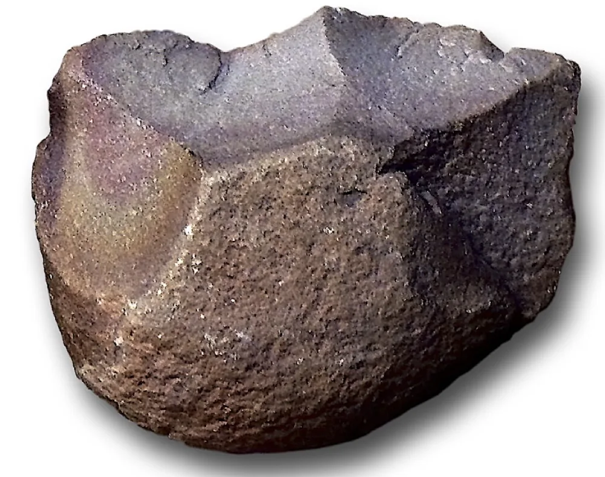
가장 오래된 도구, 최소한의 가공
OLDOWAN- 올도완 석기(약 260만~170만 년 전)는 알려진 가장 오래된 석기 산업이다. 몸돌에서 몇 번만 떼어내 날카로운 날을 만든 초퍼(chopper)·초핑툴이 대표적이다.
- 가공은 최소한이었다. 필요한 날만 만들고 나머지는 원래 돌의 형태 그대로 두었다 — 기능에 필요한 만큼만 손대는 태도가 이미 여기서 시작된다.
- 아직 표준화된 형태는 없다. 도구마다 생김새가 제각각이고, 목적(자르기·찍기·긁기)에 따라 그때그때 필요한 만큼만 다듬었다.
손안에 맞도록 설계된 첫 형태
ACHEULEAN- 아슐리안 주먹도끼(약 170만~20만 년 전)는 양면을 모두 가공해 좌우대칭에 가까운 눈물방울 모양을 만든다. 올도완보다 훨씬 많은 계획이 필요하다.
- 같은 시기·같은 지역에서 나온 주먹도끼들은 크기와 비례가 놀랍도록 비슷하다 — 학자들은 이를 표준화된 형태 규범이 이미 존재했다는 근거로 본다.
- 날이 아닌 뭉툭한 밑동이 손바닥에 맞도록 다듬어진 사례도 많다. 100만 년 넘게 거의 같은 형태가 반복 제작되었다는 점에서, 인류 최초의 '표준 디자인'으로 불리기도 한다.
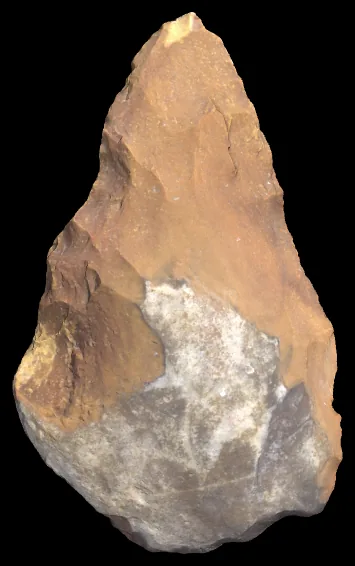
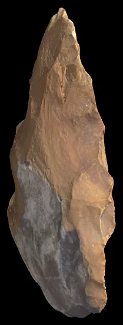
기능, 형태, 의도 — 세 겹으로 읽기
CLOSE READ- 기능 — 날카로운 모서리로 가죽을 벗기고 살을 발라낸다.
- 형태 — 좌우대칭, 균일한 두께. 필요한 정도 이상으로 다듬어져 있다.
- 의도 — 특정 암석(고운 결의 규암·부싯돌)을 '선택'했다는 사실 자체가 재료에 대한 판단이 있었음을 보여준다.
기능만 있다면 도구, 형태에 대한 판단까지 있다면 디자인이라 부를 수 있을까? 이 경계는 어디에 있는가.
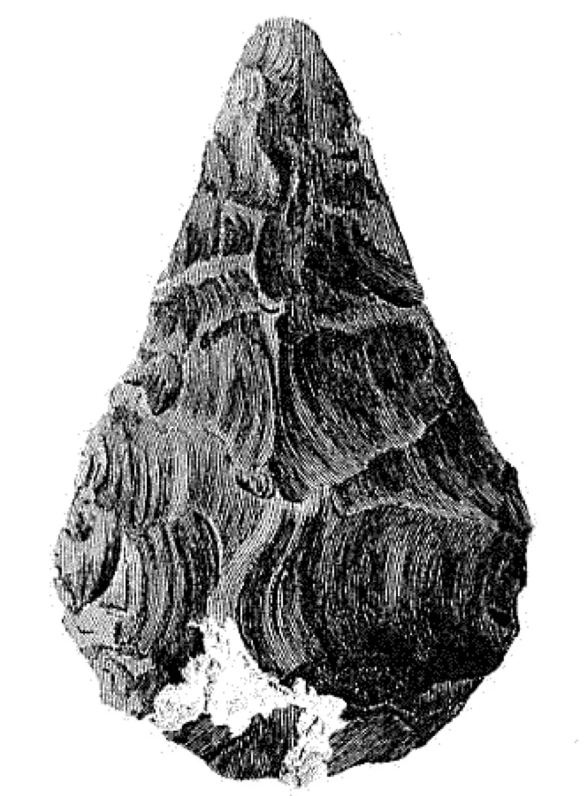
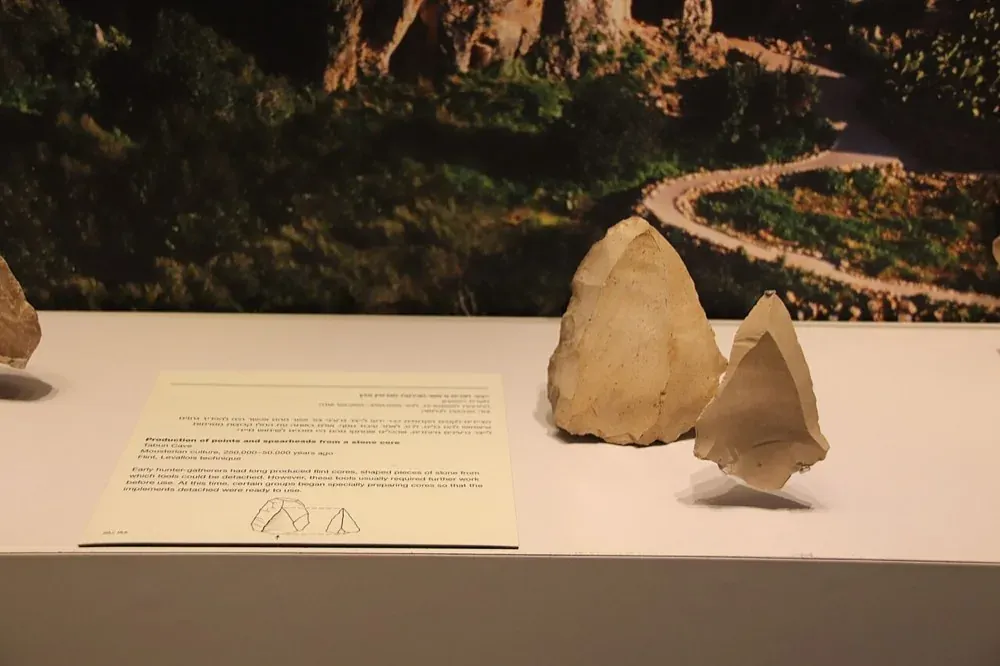
미리 계획된 몸돌, 원하는 모양의 조각
LEVALLOIS- 르발루아 기법(약 30만~3만 년 전, 중기 구석기)은 몸돌(core)을 미리 정교하게 다듬어, 마지막 한 번의 타격으로 원하는 모양의 격지(flake)가 떨어져 나오게 만드는 방식이다.
- 완성된 도구의 형태를 먼저 그리고, 그 형태가 나오도록 몸돌을 역산해서 준비한다 — 오늘날의 프리폼(pre-form) 설계, 최종 형태를 미리 정해두고 공정을 거꾸로 설계하는 사고와 원리가 같다.
- 하나의 몸돌에서 정해진 규격의 격지를 여러 개 반복해서 떼어낼 수 있었다. 도구 제작이 '우연히 깨진 돌 고르기'에서 계획적인 생산 공정으로 바뀐 것이다.
벽이 캔버스가 되다
CAVE ART- 프랑스 라스코(약 1만7천 년 전), 쇼베(약 3만6천 년 전), 스페인 알타미라(약 1만4천~2만 년 전) 동굴에는 들소·말·사슴을 그린 대규모 벽화가 남아 있다.
- 화가들은 동굴 벽의 굴곡을 동물 몸통의 형태로 그대로 활용했다 — 평평한 캔버스가 아니라 3차원 공간을 고려한 배치라는 점에서 초기 공간 디자인의 사례로 읽힌다.
- 안료를 입으로 불어 손 모양을 남긴 스텐실(음화 손자국)도 함께 발견된다. 이미지로 의미를 전달하려 한 시도라는 점에서 가장 오래된 시각 커뮤니케이션의 사례로 꼽힌다.
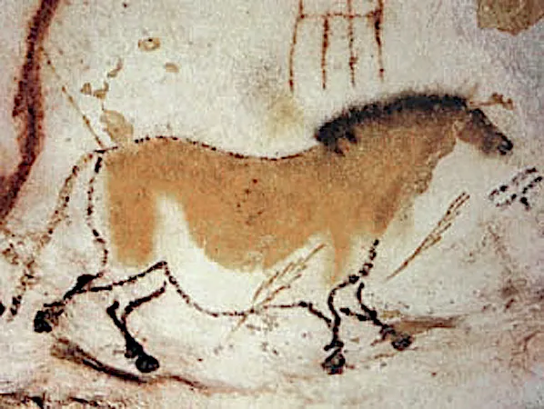
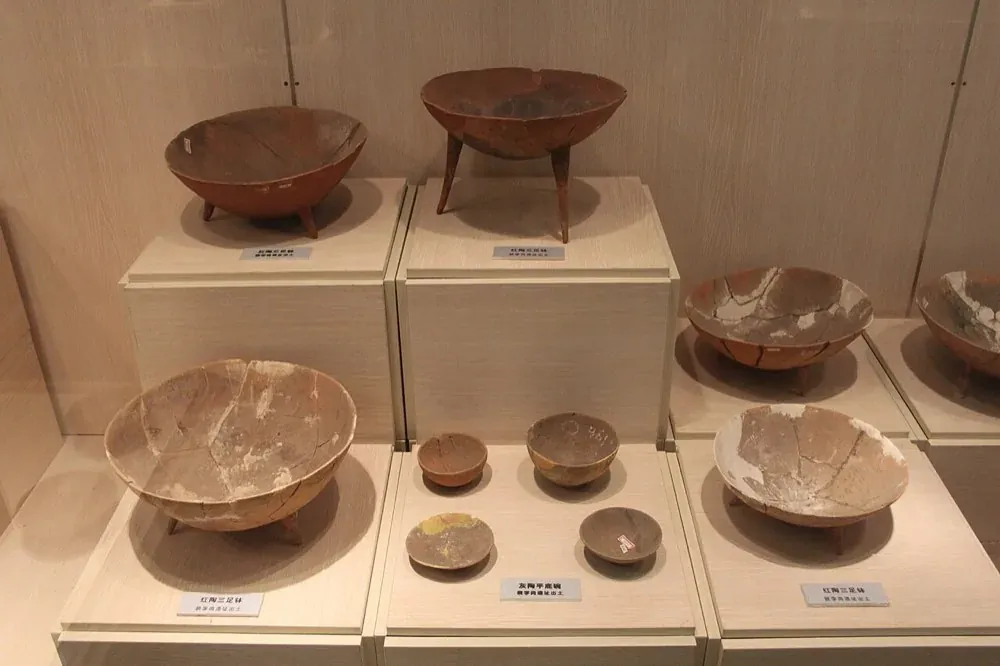
저장할 수 있어야 정착할 수 있다
NEOLITHIC- 약 1만~5천 년 전 농경이 시작되며 정주 생활이 가능해졌다. 수확한 곡물을 남겨두려면 저장 기술이 필요했다 — 토기는 이 필요에서 나왔다.
- 진흙을 불에 구워 방수·밀폐가 되는 그릇을 만드는 기술은, 액체와 곡물을 담고 운반·비축할 수 있게 해 잉여 생산물의 축적을 가능하게 했다.
- 이 시기 각지에서 발견되는 점토 인장(스탬프 실)은 소유물에 표시를 남기는 관습을 보여준다 — '이것은 누구의 것이다'를 시각 기호로 남긴다는 점에서 상표(브랜드)의 가장 오래된 조상으로도 해석된다.
개인이 아니라 공동체가 만든 구조물
MEGALITH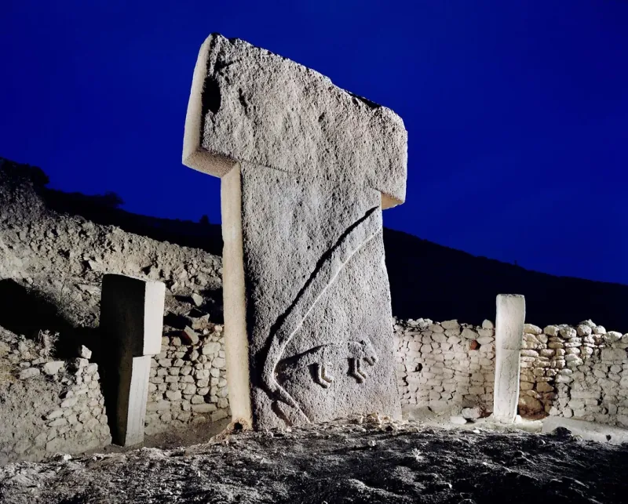
- 튀르키예 괴베클리 테페(약 기원전 9600~8000년)는 농경이 시작되기도 전에 세워진 거대한 T자형 석주 구조물이다. 정착 생활 이전에도 대규모 협업 건설이 가능했다는 뜻이다.
- 영국 스톤헨지(약 기원전 3000~2000년)의 거석들은 수십 킬로미터 밖에서 옮겨왔다. 하지 때 태양이 특정 위치로 뜨도록 배치된 구조는 천문 관측과 건축이 결합된 초기 사례로 꼽힌다.
- 예리코(요르단강 서안) 유적에는 기원전 8000년경의 석조 탑과 성벽이 남아 있다 — 알려진 가장 오래된 방어용 도시 구조물 중 하나로, '공공 디자인'과 '도시 계획'의 원형으로 다뤄진다.
여섯 걸음, 디자인의 원형이 쌓이다
SUMMARY보통 디자인사는 산업혁명에서 시작한다.
하지만 디자인의 핵심 문제는 그보다 훨씬 오래전부터 존재했다.
달라진 것은 도구와 어휘일 뿐,
문제의 본질은 크게 달라지지 않았다.
그렇다면 고대 문명에서는 이 문제들이 어떻게 규칙과 제도로 발전했을까?
고대 문명 — 상징, 비례, 실용
ANCIENT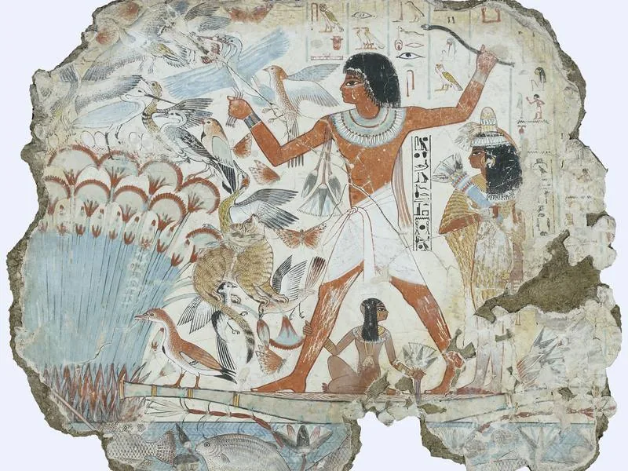
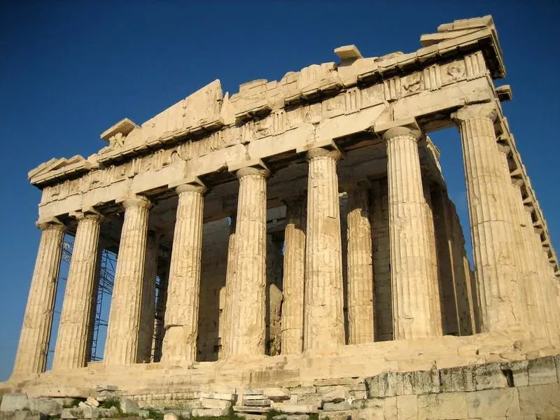
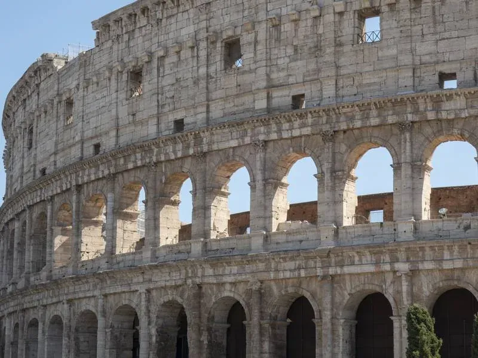
형태가 곧 신분이었던 시대
- 정면성의 원리 — 인체를 그릴 때 얼굴은 옆모습, 눈과 상체는 정면, 다리는 다시 옆모습으로 조합했다. 보이는 대로가 아니라 가장 알아보기 쉬운 각도들을 합성하는 규칙이었다.
- 위계적 크기 비례 — 파라오는 가장 크게, 신하와 하인은 작게 그렸다. 크기가 실제 거리가 아니라 사회적 지위를 나타냈다.
- 이런 규칙은 개인 화가의 취향이 아니라 수천 년간 거의 바뀌지 않은 표준 매뉴얼에 가까웠다. 신전과 무덤 벽화가 대량으로 비슷하게 제작될 수 있었던 이유다.
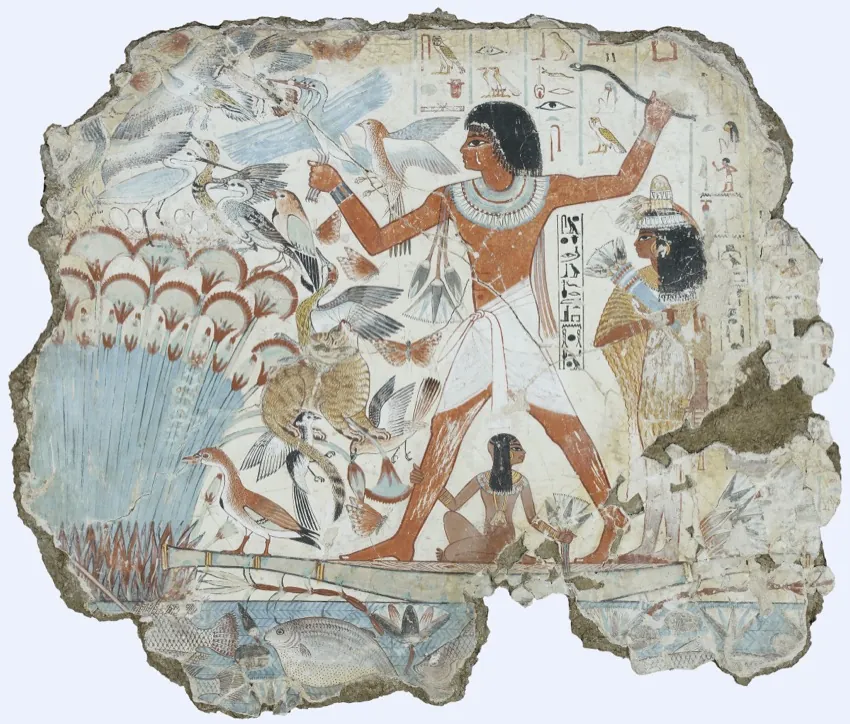
몸을 재는 척도가 곧 아름다움의 규칙
- 황금비(약 1:1.618) — 신전 건축과 조각의 비례에 반복적으로 등장한다. 파르테논 신전의 정면 비례가 대표적으로 언급된다.
- 건축 오더(Order) — 도리아(단순·육중), 이오니아(소용돌이 장식), 코린트(화려한 잎사귀 장식) 세 양식이 기둥의 비례와 장식을 규격화했다. 이후 서양 건축사 전체가 이 세 오더를 참조하게 된다.
- 조각가 폴리클레이토스는 인체 비례를 수치로 정리한 「카논(Canon)」을 썼다고 전해진다 — 미(美)를 계산 가능한 규칙으로 만들려 한 최초의 시도 중 하나다.
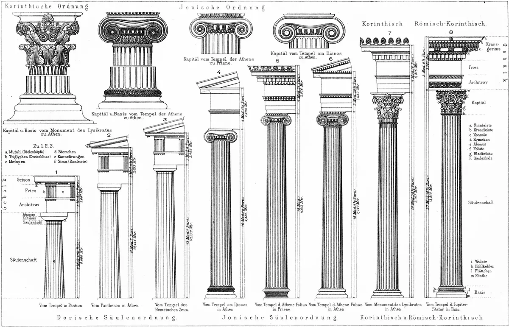
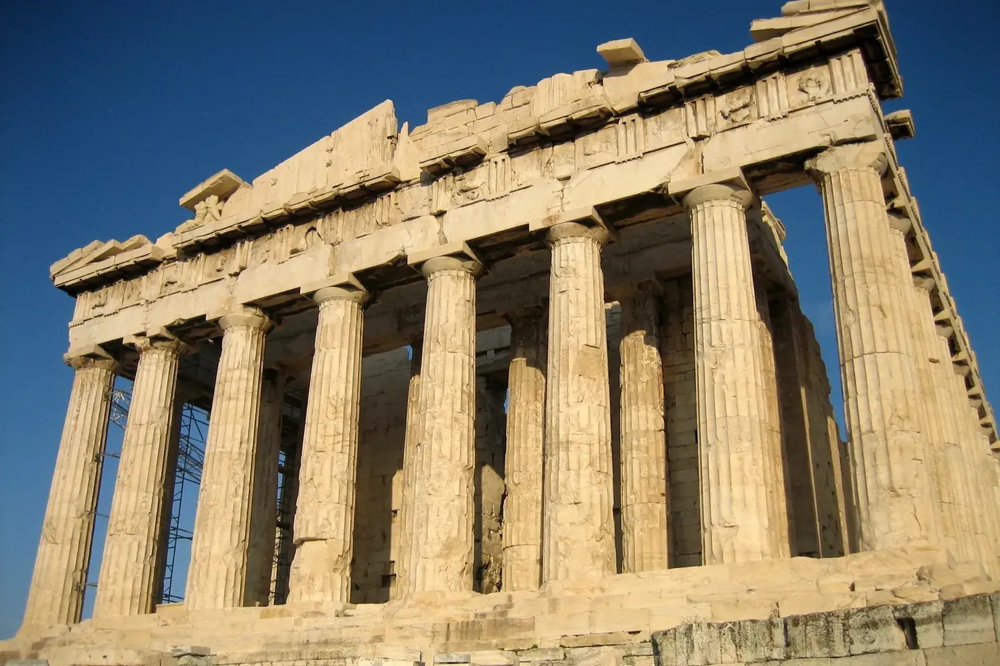
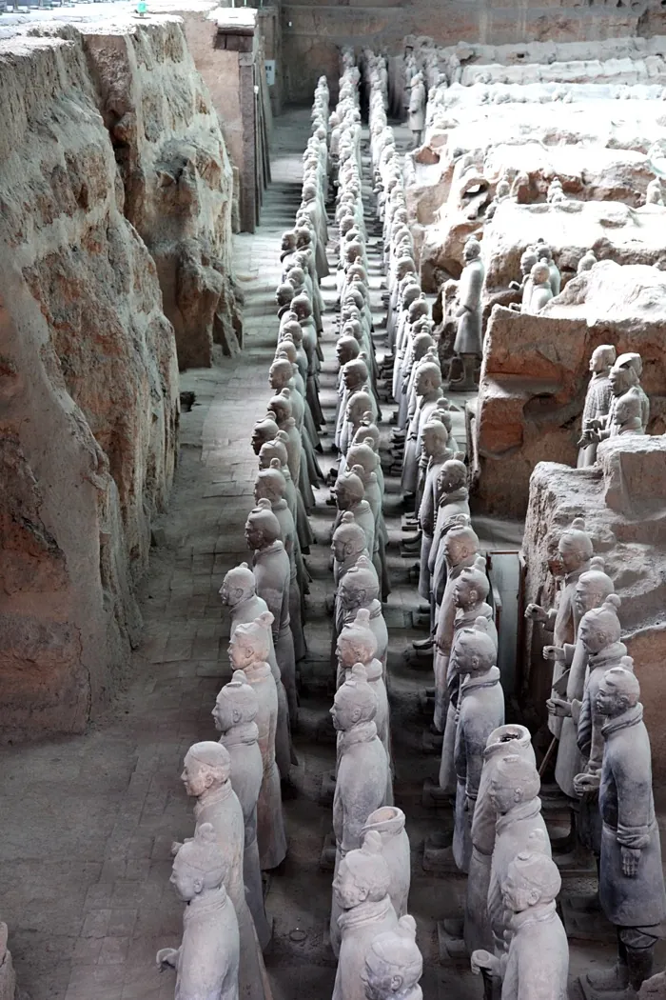
표준화라는 발상은 이미 있었다
- 화폐도 디자인된 대량생산품이다. 중국은 기원전 1100년경 상 왕조 때부터 주형으로 엽전을 주조했고, 그리스는 기원전 700년경 동전을, 로마 공화국은 기원전 300년경 통화 체계를 도입했다.
- 율리우스 카이사르 시대 로마는 동전에 통치자의 초상을 새겨 권위를 전파했다 — 화폐가 선전(propaganda)의 도구로 쓰인 초기 사례다.
- 진시황(재위 기원전 221~210)의 병마용은 8천여 개의 실물 크기 병사·말 조각상으로, 표준화된 치수와 품질 관리 절차를 갖춘 생산 체계에서 만들어졌다. 석궁 방아쇠·화살촉 같은 부품도 서로 교체 가능하게 제작됐다 — '상호교환 가능한 부품'은 흔히 18~19세기 산업혁명의 발명으로 배우지만, 이미 기원전에 그 발상이 있었다.
표준화와 대량생산은 산업혁명이 아니라 문명 자체와 함께 시작된 것이 아닐까?
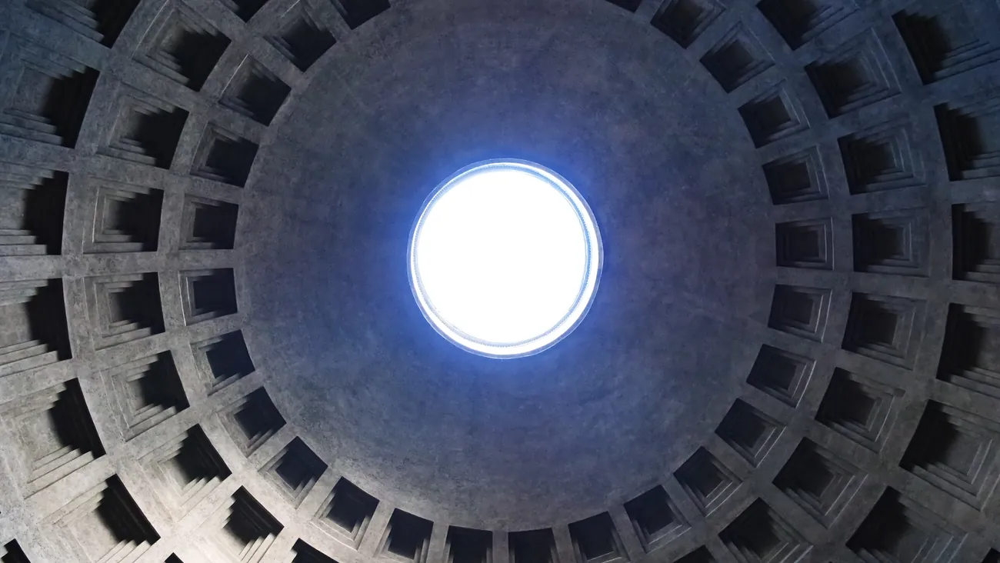
제국을 지탱한 반복 가능한 기술
- 아치와 콘크리트(오푸스 카이멘티치움) — 아치는 하중을 옆으로 분산시켜 더 넓은 공간을 지붕 없이 덮을 수 있게 했고, 로마 콘크리트는 거푸집만 있으면 반복 시공이 가능했다.
- 표준 규격 벽돌·수도관·도로 — 로마는 제국 전역에 같은 규격의 인프라를 반복 건설했다. 오늘날로 치면 '표준화된 부품 카탈로그'에 가깝다.
- 비트루비우스는 저서 『건축십서』에서 좋은 건축의 세 조건으로 견고함(firmitas)·유용함(utilitas)·아름다움(venustas)을 꼽았다. 2천 년 뒤 모더니즘 디자인 원칙과 놀랍도록 닮아 있다.
무기부터 기름램프까지, 공장에서 찍어내다
- 로마 군대는 글라디우스(gladius) 단검부터 투구·갑옷까지 표준화된 도안으로 무장을 대량생산했다. '검투사(gladiator)'라는 말도 이 검의 이름에서 나왔다. 균형 잡힌 성능과 공업적 표준화를 동시에 만족시킨 결과였다.
- 기름램프(firmalampen)는 거푸집으로 찍어내 북이탈리아·남갈리아의 공장에서 생산되어 제국 전역에 수출됐다. 램프받침에 제조자의 각인이 찍힌 경우도 흔했다 — 오늘날의 제조사 로고에 해당한다.
- 군사역사가 존 키건에 따르면 로마는 "공장 노동자가 도망가지 못하게 낙인을 찍는 법령을 발행할 정도"였다. 제작하는 사람과 설계하는 사람이 갈라지기 시작한 노동 분화의 초기 형태다.
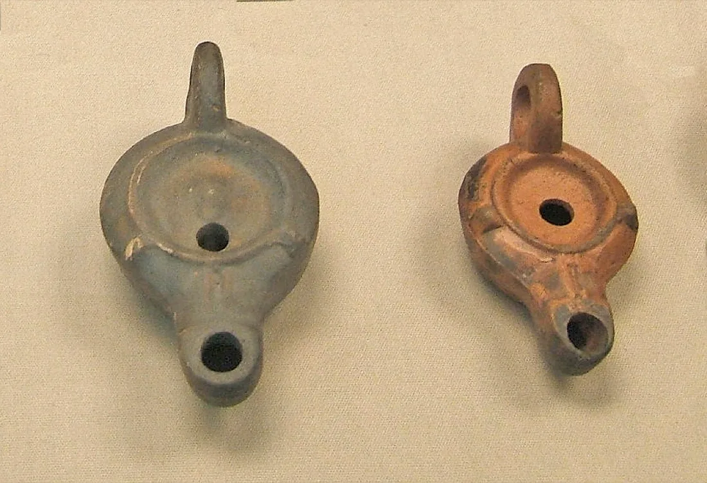
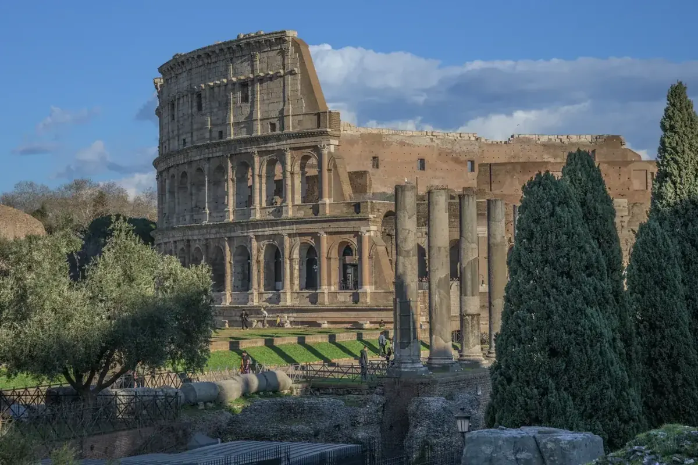
형상 없이 무늬로 신성을 표현하다
- 인물·동물 형상을 종교적으로 자제하는 전통 속에서, 기하학적 반복 무늬(아라베스크)와 서예(캘리그래피)가 장식의 중심이 되었다.
- 정다각형을 겹치고 회전시켜 끝없이 이어지는 패턴을 만드는 방식은, 오늘날 수학의 테셀레이션(tessellation) 개념과 정확히 일치한다.
- 스페인 알함브라 궁전의 타일 벽면에는 현대 결정학이 분류하는 17가지 벽지군(wallpaper group) 대부분이 실제로 나타난다 — 직관만으로 수학적 완성도에 도달한 사례다.
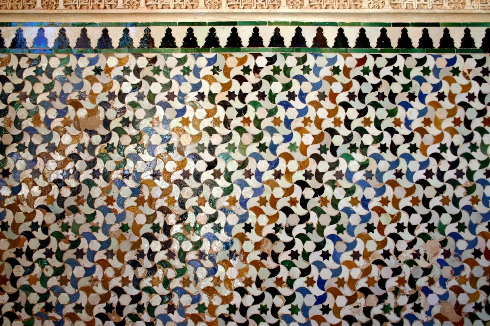
같은 시기, 다른 곳의 '길드'
- 고려(918~1392)의 상감청자는 유약·태토·상감 기법이 국가가 관리하는 관영 가마(소)를 통해 전승됐다. 유럽 길드에 못지않게 정교한 분업·전승 체계의 산물이다.
- 중국 송·원대 관요(官窯) 자기, 이슬람 세계의 타일·서예 공방도 마찬가지다. '디자인 이전의 장인 체계'는 유럽만의 이야기가 아니다.
- 13주차 한국 근현대 디자인사에서 이 전통이 근대 이후 어떻게 단절·재발견되는지 다시 다룬다.
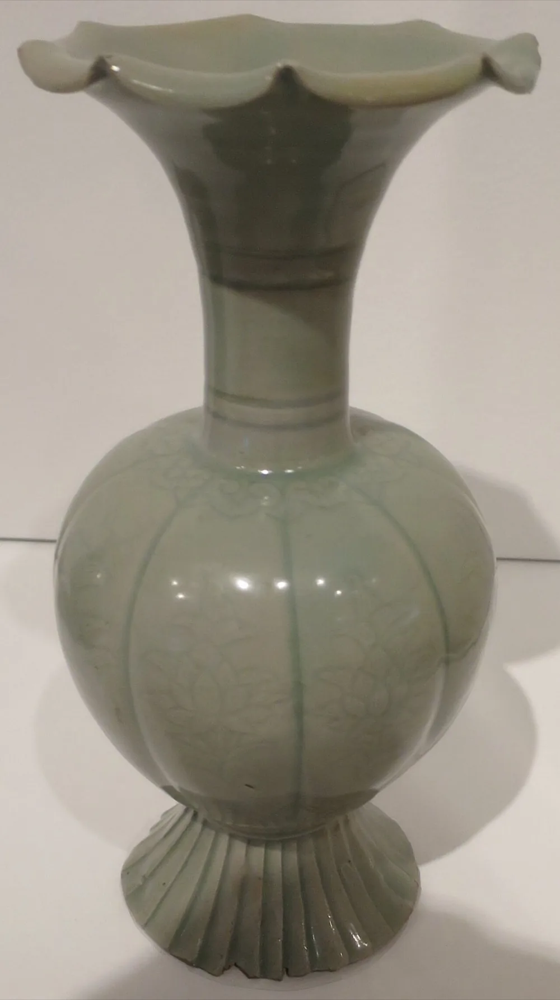
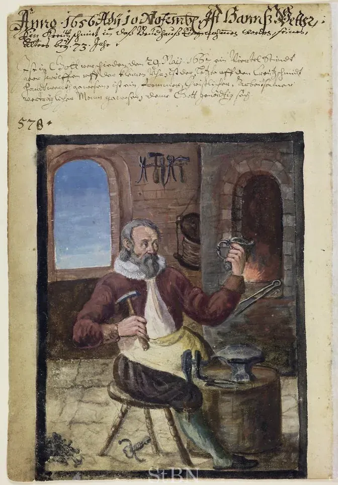
기술은 어떻게 대물림되었는가
- 장인은 설계자이자 제작자였다. '디자인'과 '제작'이 아직 분리되지 않은, 몸에 밴 지식이었다.
- 길드는 품질 기준, 가격, 생산량, 회원 수까지 통제하는 일종의 동업조합이자 규제 기관이었다.
- '마스터피스(masterpiece)'라는 단어 자체가 여기서 나왔다 — 원래는 '걸작'이 아니라 장인 자격을 증명하는 심사용 작품을 뜻했다.
공간을 수학으로 다시 그리다
- 필리포 브루넬레스키가 1415년경 선형 원근법을 실험으로 증명했고, 레온 바티스타 알베르티가 이를 저서 『회화론』(1435)으로 이론화했다.
- 원근법은 예술적 재능이 아니라 소실점과 격자를 이용한 기하학적 절차였다. 배우면 누구나 재현 가능한 '기술'이라는 점에서, 도면(drawing)이라는 근대적 도구의 원형이다.
- 레오나르도 다빈치의 「비트루비우스적 인간」은 인체 비례를 원과 정사각형이라는 순수 기하학 안에 담으려 한 시도다. 표현과 측정이 한 장의 그림 안에서 만난다.
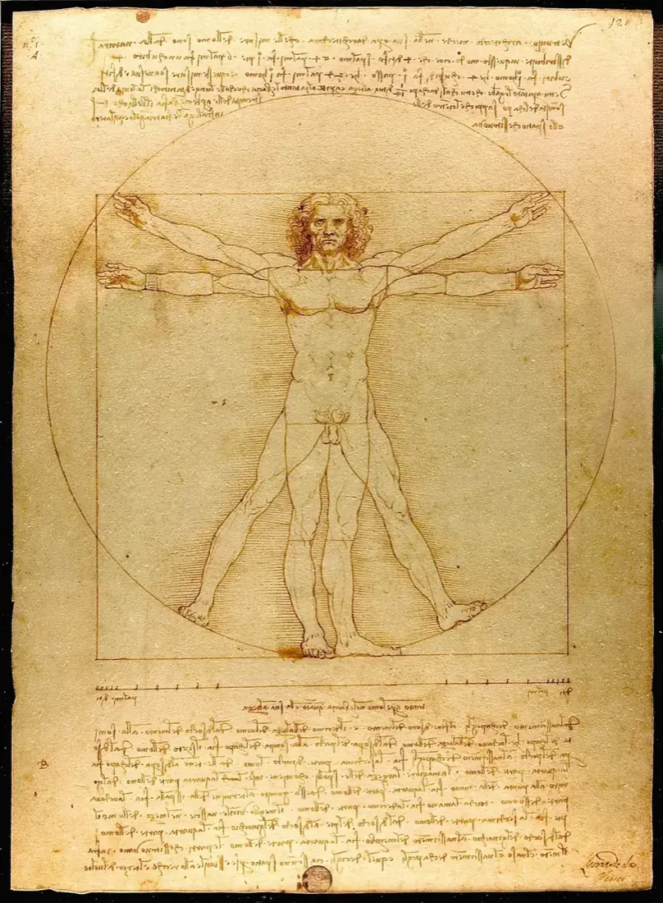
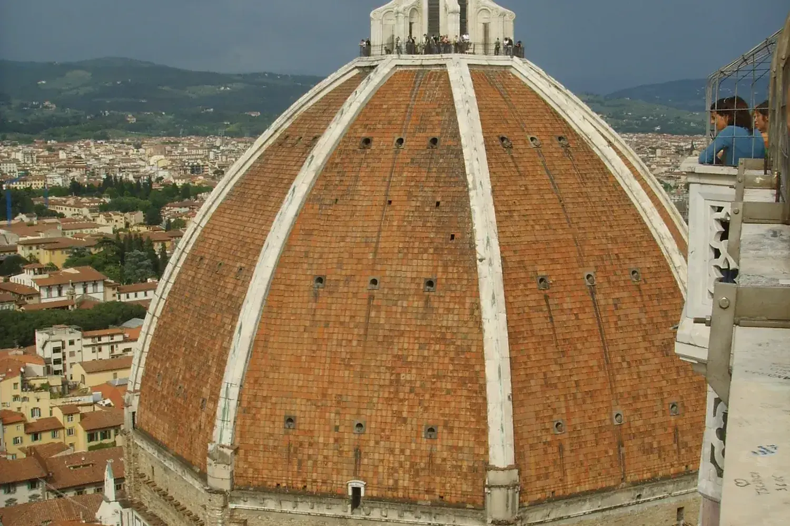
같은 것을 정확히 반복하는 기술
- 요하네스 구텐베르크의 금속활자 인쇄술(1450년경, 마인츠)은 손으로 필사하던 책을 기계적으로 복제 가능한 물건으로 바꿨다.
- 활자는 정해진 규격의 낱개 부품을 조합해 다시 쓰는 방식이다. 표준화된 부품과 반복 생산이라는, 이후 산업혁명이 확장할 원리가 이미 여기 있다.
- 이 발명은 단순한 기술 진보가 아니다. 지식의 확산 속도, 문해율, 종교개혁의 전파력까지 바꿔놓았다 — 기술 하나가 사회 전체의 형태를 바꾼 첫 사례다.
이름이 남기 시작하다
- 중세 장인은 대개 이름이 남지 않는 익명의 존재였다. 르네상스 후원 제도(메디치 가문 등) 아래에서 제작자의 이름과 개성이 처음으로 가치를 갖기 시작한다.
- 미켈란젤로·라파엘로 같은 이름이 작품과 함께 기억되는 것은, 이 시기부터 '만드는 사람'이 곧 '창작하는 사람'으로 재정의되었기 때문이다.
- 이 변화는 훗날 '디자이너'라는 개인의 이름이 붙는 근대적 직업 정체성의 먼 뿌리가 된다.
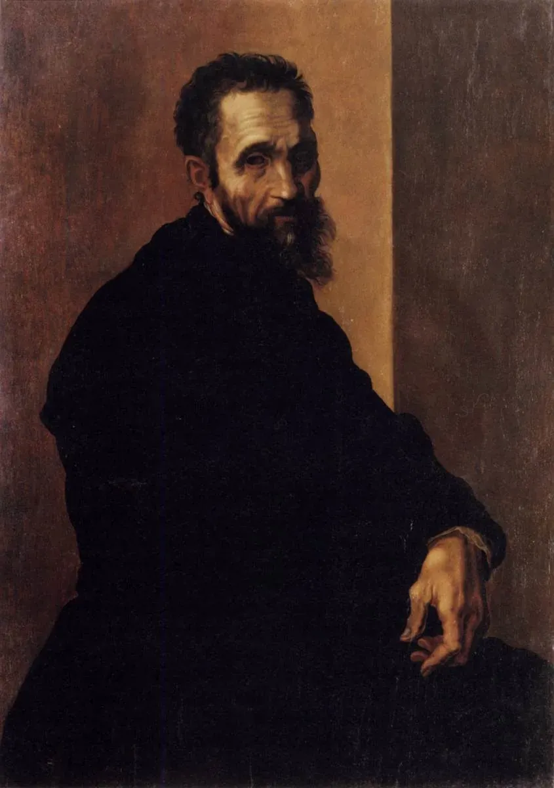
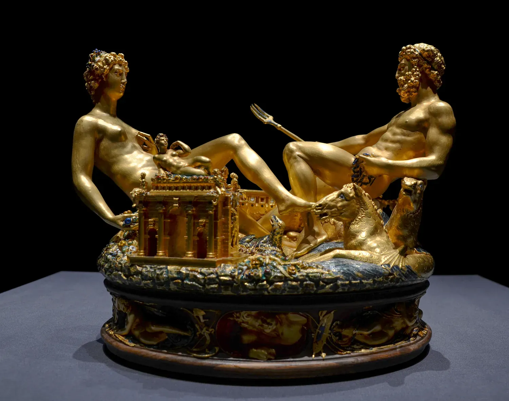
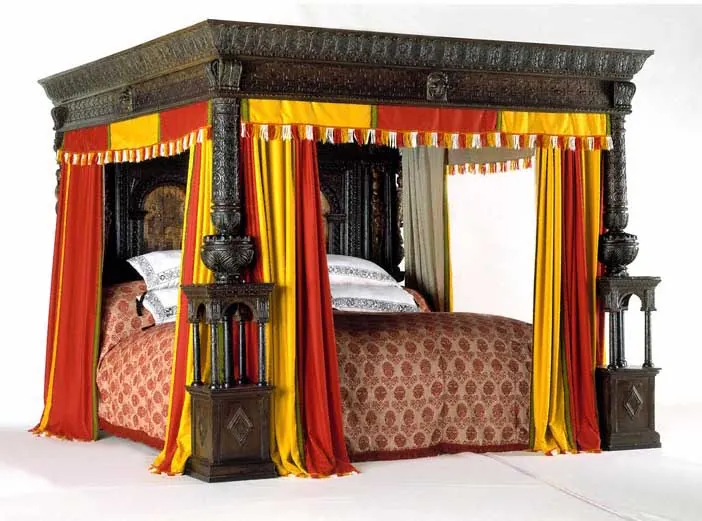
인쇄된 도안이 가구가 되다
- 오크 목재를 깎아 만든 이 거대한 사주식 침대는 폭이 3.3미터에 이른다. 여관의 손님을 끌기 위한 일종의 광고물이었고, 셰익스피어의 희곡에까지 언급될 만큼 유명했다.
- 주목할 것은 머리판의 상감 패널이다. 네덜란드 디자이너 한스 프레드만 데 프리스가 펴낸 장식 도안집의 패턴을 그대로 옮겨 놓았다.
- 즉 이 침대는 인쇄된 도안이 실제 가구 제작으로 옮겨간 사례다. 장인이 스승에게 배운 것만 만들던 시대에서, 책을 보고 만드는 시대로 넘어가고 있었다.
구텐베르크(1450) → 프레드만 데 프리스의 도안집(16세기) → 치펜데일의 『지침서』(1754). 인쇄술이 디자인을 유통시키는 경로가 이렇게 만들어진다.
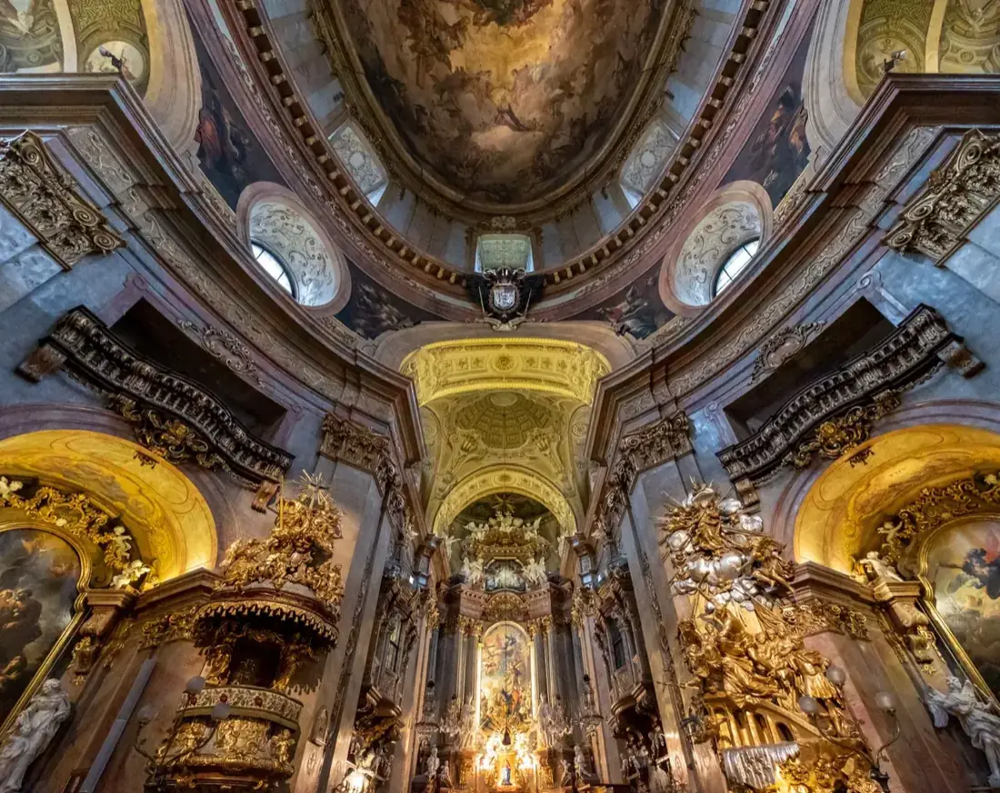
무거운 양감과 과장된 현란함
- 17세기 초부터 18세기 중반까지 장식·응용예술 분야에서 대중의 각성이 일어났다. 이 시기를 지배한 것이 바로크다.
- 오스트리아 빈의 성 베드로 성당은 웅장하고 극적인 바로크 양식의 훌륭한 사례다. 돔 프레스코, 금박 조각, 대리석 기둥이 시선을 한곳에 두지 못하게 몰아친다.
- 바로크의 특징은 무거운 양감과 과장된 현란함이다. 건축과 조각과 회화의 경계를 지우고 공간 전체로 관람자를 압도하려 한다.
돌조각에서 따온 이름
- 바로크의 무거운 양감과 과장된 현란함은 공공연하게 여성적이고 화려한 로코코양식으로 대체되었다.
- '로코코'라는 이름은 돌집과 분수를 장식하던 표면 껍질이나 조약돌을 뜻하는 프랑스어 '로카이유(rocaille)'에서 나왔다.
- 로코코는 바로크보다 전반적인 분위기가 가볍고, 중국식 문양과 모티프를 자주 인용했다. 이른바 중국풍(시누아즈리)이다.
- 독일 뷔르츠부르크 주교주택의 거울 방은 비대칭적 로카이유 형태의 활용을 보여주는 대표적인 로코코 인테리어다. 프랑스에서는 바로크가 1720년대 말 로코코로 이어진 뒤, 1750년대 중반 로코코가 신고전주의에 완전히 자리를 내주었다.
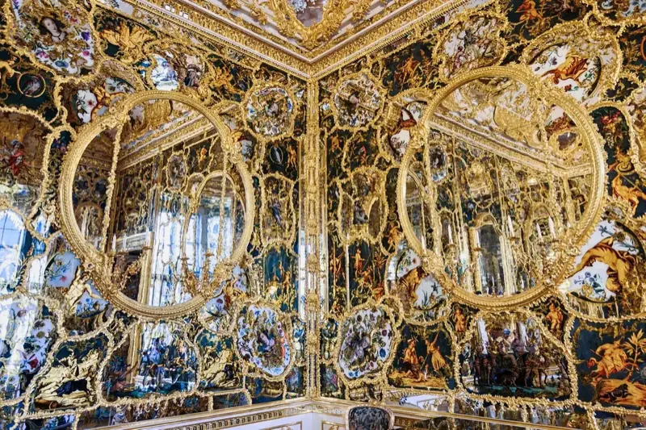
가구 디자인서를 낸 최초의 가구제작자
- 토머스 치펜데일은 런던의 유행 거리 세인트 마틴 레인에서 일하던 영국의 가구제작자이자 가구디자이너로, 로코코양식을 가장 잘 대변하는 인물이다.
- 1754년 출판한 『신사와 가구제작자의 지침서』는 "고딕식, 중국식, 현대식 취향의 우아하고 유용한 가구디자인들"을 보여주는 161개의 판화를 담았다. 여기서 '중국식'은 로코코식 중국풍을, '현대식'은 약화된 조지 왕조풍 신고전주의를 뜻한다.
- 치펜데일 연구회에 따르면 이 책은 영국에서 자기홍보 수단으로 가구 디자인서를 출판한 최초의 시도였다. "그 결과 그의 사업은 즉시 광범위한 잠재 고객층에 알려지게 되었고, 그 이후로 영원히 그의 이름은 특색 있는 로코코양식의 대명사가 되었다."
- 『지침서』는 고객이 물품을 직접 고르는 카탈로그이자, 프랑스·러시아·미국의 다른 가구제작자들에게 영감을 주는 패턴 서적으로도 기능했다.
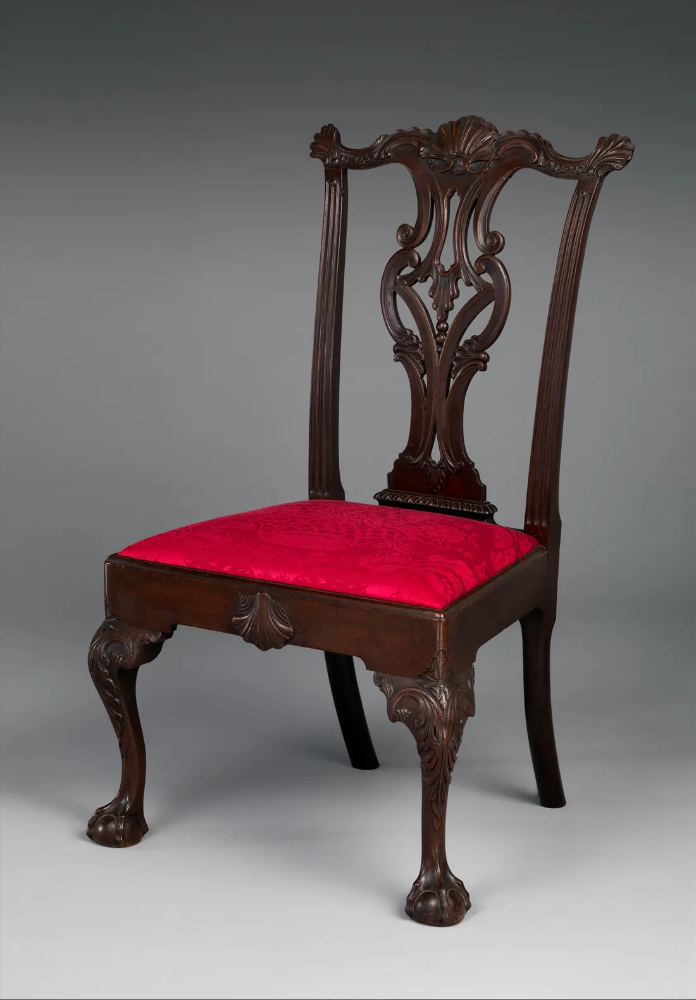
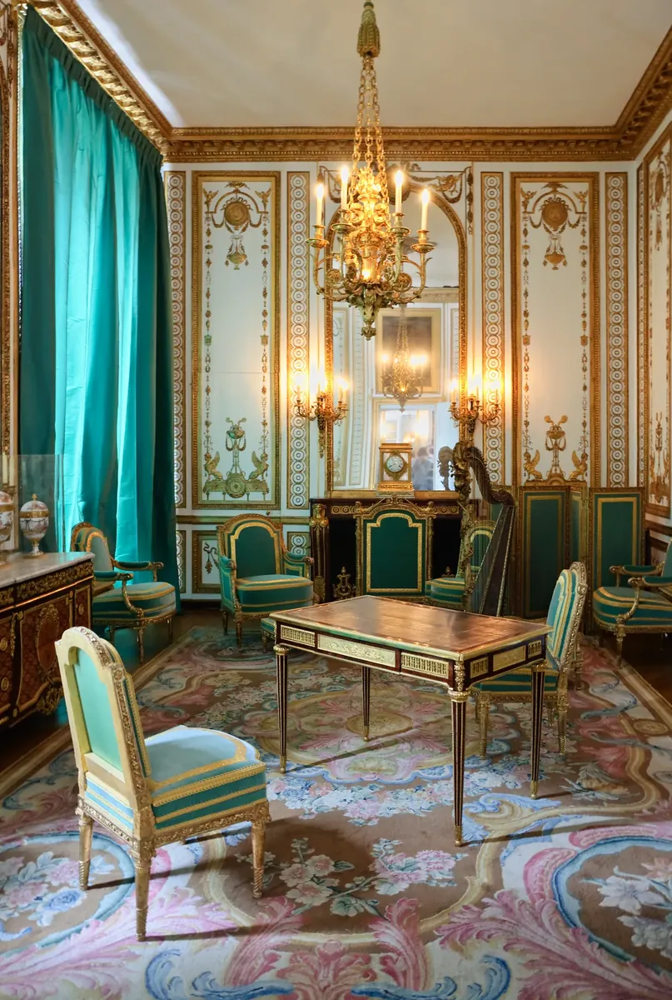
혁명 이전의 우아한 신고전주의
- 초기 프랑스 신고전주의의 발전은 가구제작자의 작품이 잘 보여준다. 대표적으로 장-앙리 리스네, 아담 바이스바일러, 장-프랑수아 를루가 있다.
- 이들의 디자인은 고전적 모티프를 결합한 건축적 형태로, 세련된 쪽매붙임(마르케트리)과 금박을 입힌 우아한 가구를 만들어냈다. 리스네가 베르사유 궁전에 설계한 마리 앙투아네트 여왕의 가구가 그 정점이다.
- 프랑스혁명 이후 1790년대 중반의 디렉투아르 양식은 공화정 정서에 맞게 신고전주의를 평이하고 합리적으로 해석했다. 단명했으나 이후 나폴레옹의 제국양식을 예견했다.
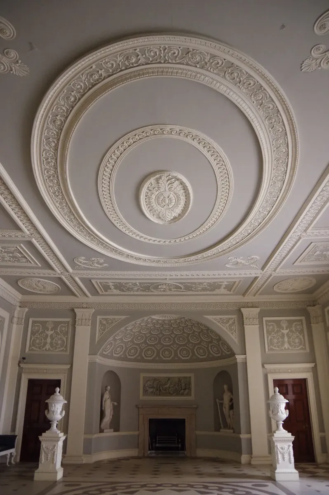
건물부터 촛대까지 하나의 양식으로
- 스코틀랜드 건축가 로버트 애덤은 벌링턴 경이 옹호하던 신팔라디오주의를 거부하고, 팔라디오를 거친 2차 해석 대신 실제 남아 있는 그리스 건축의 사례연구에 기초해 정교한 양식을 세웠다.
- 얼음 같은 섬세함이 파스텔톤 도장마감과 대비를 이루는 장식격자 스타일의 벽토작업이 특징이다. 사진 속 벽감의 조각상과 회색 단색(그리자유) 장식판이 그 예다.
- 호레이스 월폴은 이를 "값싸고 번지르르한 자수조각들"이라 악평했지만, 우아하고 여성적인 "애덤 양식"은 1760년대부터 1780년대까지 크게 유행했다. 여기 보이는 오스털리 공원 인테리어는 차일드 가문을 위해 설계한 것이다.
- 애덤은 "토털디자인 룩"을 개척했다. 건물 설계뿐 아니라 벽난로와 문 부속물 같은 실내건축 부속물, 책장·옷장·안락의자·거울·받침대·가지 달린 촛대까지 양식적으로 통합된 모든 가구를 아울렀다.
어느 쪽이 모던 디자인으로 이어졌을까
애덤의 "모던" 조지 양식
고대 그리스·로마의 장식 모티프를 재해석한 양식적 작품. 귀족 후원자를 위한 토털디자인으로, 건물부터 촛대까지 하나의 미의식으로 통일했다.
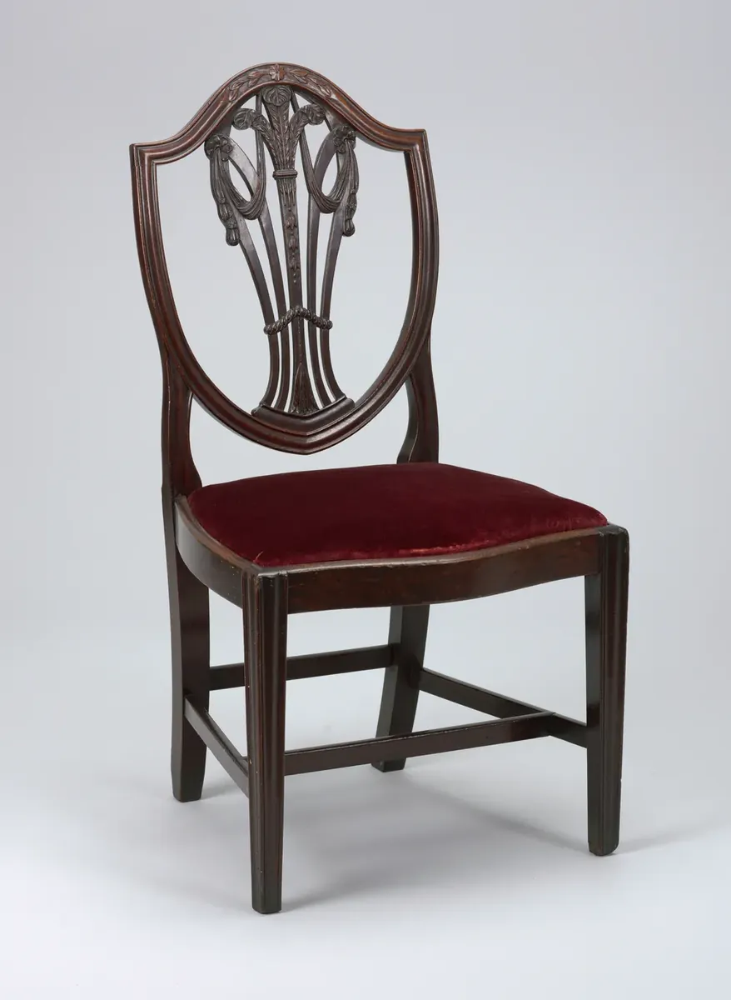
조지 3세 시대의 마호가니 식탁의자
상인과 전문직 계층을 위해 제작된 덜 비싼 가구. 불필요한 것을 모두 뺀 고전적 형식이 우아한 실용성으로 남았다.
- 교재의 판단은 분명하다. 애덤의 화려한 양식보다 훨씬 더 기능적인 측면이 있던 18세기 신고전주의 디자인이, 적절한 시점에 가서 모던 디자인의 발전에 더 큰 영향을 미치게 된다.
- 이유는 수요층에 있다. 귀족의 주문 제작은 한 채로 끝나지만, 상인·전문직 계층을 위한 가구는 반복 생산될 수 있는 형식을 요구했다. 장식을 덜어낸 고전적 비례만 남기면 그 형식은 얼마든지 복제된다.
만들지 않고 디자인만으로
- 치펜데일의 『지침서』가 성공한 뒤, 조지 헤플화이트(1788)와 토머스 셰라튼(1791)이 각각 개론서를 출판했다.
- 셰라튼은 가구제작자로서 도제수업을 받긴 했으나, 4권짜리 『가구제작자 및 실내장식가의 설계도집』을 출판할 당시에도 작업장이 없어 가구를 직접 만들지는 못했다.
- 그리스 양식에서 영감을 받은 그의 디자인을 다른 가구제작자들이 광범위하게 응용하면서 "셰라튼 양식"이라는 용어가 생겼다.
- 가구 제작보다 디자인으로 유명해진 셰라튼은, 순수하게 디자인 개념만으로 취향과 유행을 선도하며 유명해진 디자이너의 최초 사례다.
만드는 사람과 설계하는 사람이 갈라지기 시작한다. 다음 주 산업혁명이 밀어붙일 '디자인과 제작의 분리'가 여기서 이미 예고된다.
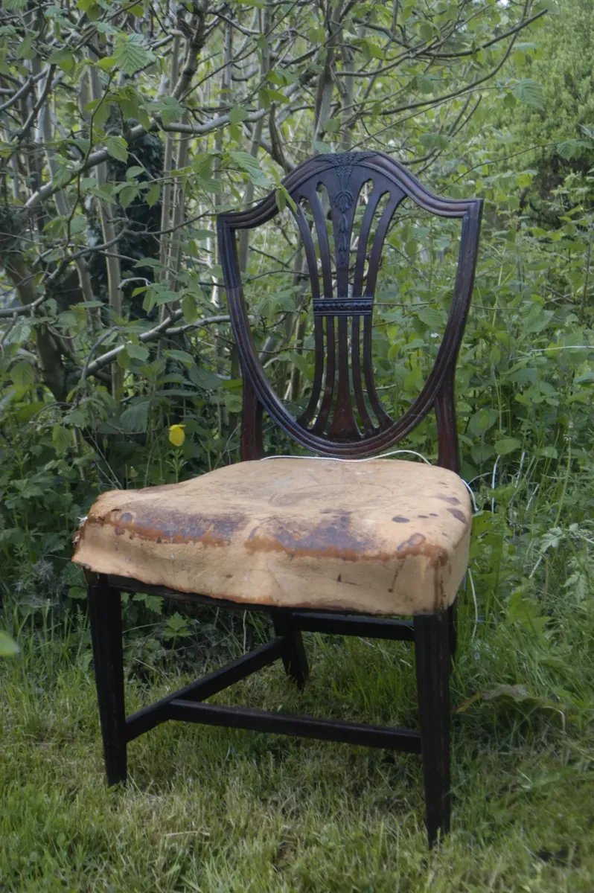
고급양식 속에 이미 들어 있던 근대성
- 18세기 영국과 유럽대륙에서 귀족 계급보다 중상위 계층을 위해 디자인된 대부분의 물건은, 다소 과도한 고급양식 디자인의 약점에도 불구하고 모더니즘의 효시라 할 만한 합목적적 기능성을 갖고 있었고 디자인에 새로운 지적 합리성을 반영했다.
- 신고전주의 양식은 모든 외관과 반복 패턴 속에 간소한 합리주의를 내재하고 있었다. 이는 새롭게 부상하던 경험주의 사고방식을 반영한 것이었다.
- 18세기에 등장한 이 합리적 사고는 신고전주의에서 양식적으로 구현되었고, 궁극적으로는 산업혁명으로 이어졌다.
- 산업혁명은 이전까지 상상할 수 없던 규모의 노동 분업을 일으켰고, 이와 함께 산업디자인이라는 새로운 직업이 탄생하게 되었다.
여기까지가 '장인정신'의 시대다. 다음 주부터는 장인이 아니라 공장이 물건을 만든다.
설계는 언제부터
장인의 손을 떠났을까?
디자인은 언제부터
미술과 분리되었는가?
이성의 시대와 산업혁명
계몽주의 — 관찰·분류·표준을 향한 사고
REASON- 디드로·달랑베르의 『백과전서』(1751~)는 수공예 기술을 도판으로 도해하고 표준화하려는 최초의 대규모 시도였다.
- 애덤 스미스의 분업론(1776)은 하나의 물건을 만드는 과정을 여러 단위 작업으로 쪼갤 수 있다는 사고를 제시했다.
- 이성과 측정 가능성에 대한 믿음이, 손의 기술을 절차와 도면으로 옮겨 적을 수 있다는 가능성을 열었다.
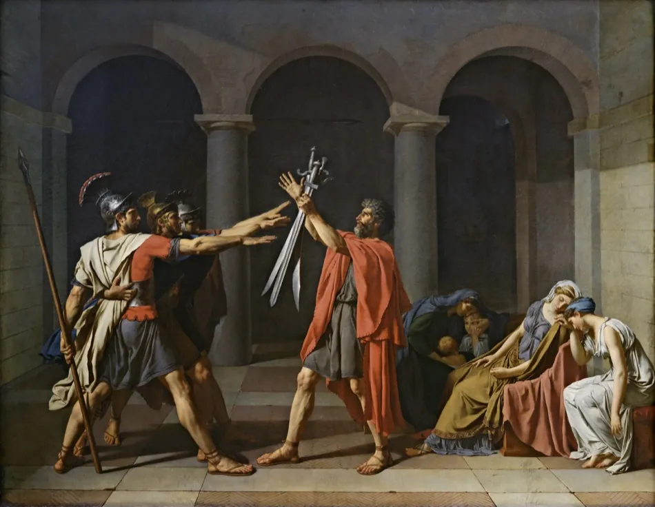
과거를 향했지만, 사실은 미래를 향한 양식
NEOCLASSICISM- 1750년에서 1830년까지 약 80년간, 유럽 디자인을 지배한 양식은 신고전주의였다. 앞선 바로크의 무거운 압도감과 로코코의 과장된 화려함이 물러나고, 고대 그리스·로마의 단정한 비례가 그 자리를 대신했다.
- 핵심은 '고전을 그대로 베꼈다'가 아니다. 비례에 관한 고전적 규칙을 단아한 근대적 형태로 재해석했다는 점이 중요하다. 장식을 덜어내고 기능성을 우선시했다는 점에서, 신고전주의는 이미 근대에 상당히 근접해 있었다.
- 영국에서는 조지왕조 양식·리젠시 양식, 스웨덴에서는 구스타비안 양식, 미국 건국기에는 토머스 제퍼슨과 폴 리비어가 이 양식 안에서 작업했다. 나라마다 이름은 달랐지만 지향은 같았다.
- 토머스 페인은 이 시대를 「이성의 시대(the Age of Reason)」라 불렀다. 신고전주의는 그 이름에 정확히 대응하는, 이성에 근거한 디자인 양식이었다.
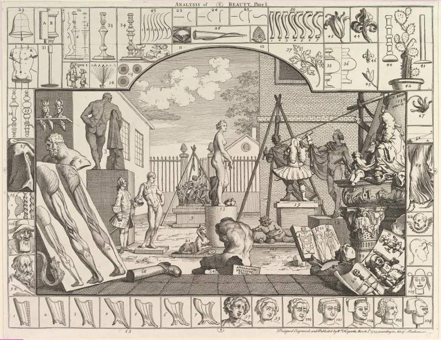
아름다움을 분석할 수 있을까
1753- 영국 화가 윌리엄 호가드는 1753년 『미의 분석(The Analysis of Beauty)』을 출간했다. 18세기 신고전주의 사조 안에서 미의 원리를 이론적으로 규명하려 한 시도였다.
- 호가드는 '구불구불한 곡선(serpentine line)'을 가장 아름다운 선으로 꼽았다. 그림 속 삼각기둥에 감긴 S자 곡선 옆에는 'VARIETY(다양성)'라는 단어가 적혀 있다.
- 중요한 것은 결론이 아니라 태도다. 호가드는 형태와 기능의 상호관계를 따져 물은 최초의 사람 중 하나였다. 아름다움을 취향의 문제가 아니라 분석 가능한 대상으로 다루려 했다는 점에서, 계몽운동의 논리적·체계적 사고방식이 미학에 적용된 사례다.
아름다움에 규칙이 있다면, 그 규칙을 아는 사람은 아름다움을 '설계'할 수 있는가?
공장, 그리고 최초의 '디자인 경영'
FACTORY기술적 조건
- 제임스 와트의 증기기관 개량(1769)
- 방적·직조 기계화 — 공장제 생산의 확산
- 동력이 손을 대신하기 시작
조사이어 웨지우드
- 도자기 생산에 분업과 표준 몰드 도입
- '디자인'(형태 결정)과 '제조'(반복 생산)를 처음으로 분리해 관리
- 카탈로그·전시장을 통한 마케팅 — 소비자를 겨냥한 최초의 디자인 경영
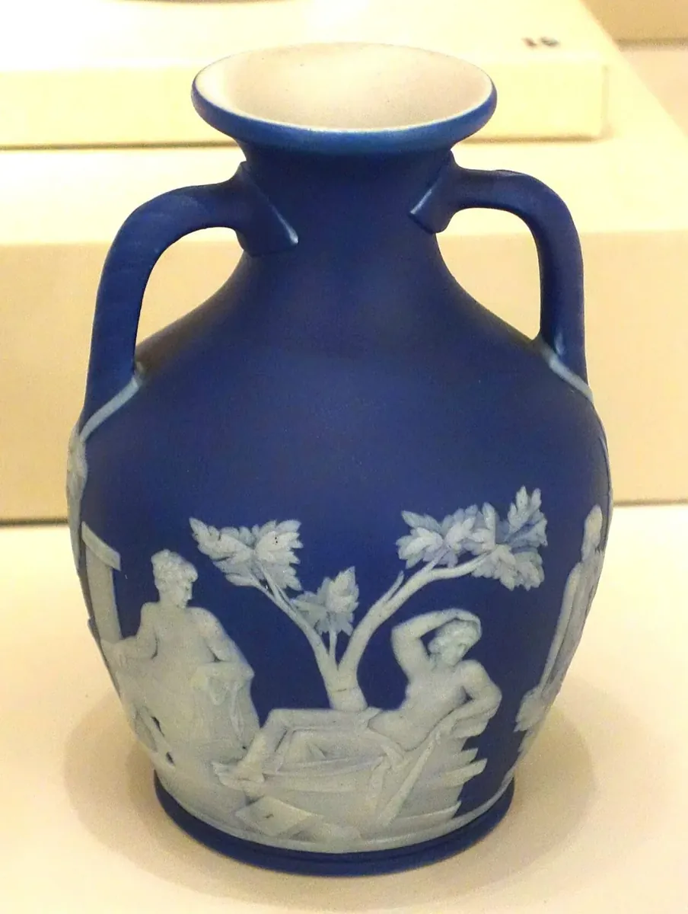
재스퍼웨어 — 고전을 표준 몰드로
PRODUCT- 웨지우드는 고대 로마의 카메오 유리 공예(포틀랜드 화병)를 도자기 몰드로 복제 가능한 형식으로 번역했다.
- 디자이너(조각가 존 플랙스먼 등)가 원형을 만들고, 공장이 이를 반복 생산하는 구조다. '원본-복제'의 근대적 분업이 여기서 이미 작동한다.
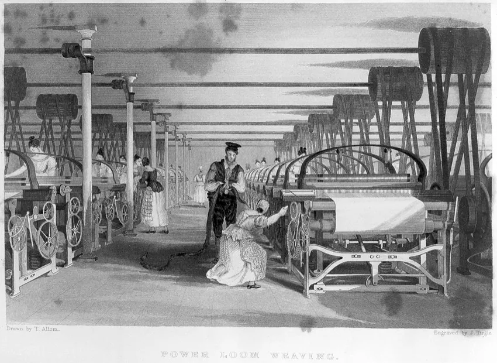
기계의 리듬에 맞춰야 했던 노동
LABOR- 공장제는 노동을 기계의 속도에 맞추도록 재편했다. 정해진 시간표, 반복 동작, 여성·아동을 포함한 미숙련 노동의 대량 투입이 뒤따랐다.
- 이 시기의 급격한 생산력 증가는 도시빈민·노동환경 문제도 함께 낳았다. 러스킨과 모리스가 산업 생산을 비판하는 배경이 된다 (→ 5주차).
- '디자인 개혁'은 순수한 미학 논쟁이 아니라 산업화의 사회적 대가에 대한 응답이기도 했다.
반세기의 가속
TIMELINE절반의 세기 만에 손의 속도가 기계의 속도로 대체되었다. 이 속도 변화는 '보기 좋은 것'의 기준도 바꾸었을까?
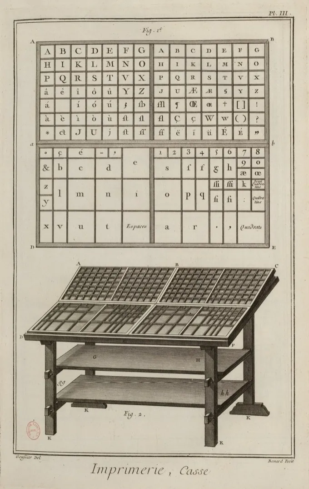
기술을 글이 아니라 그림으로 남기다
1751- 드니 디드로와 장 르 롱 달랑베르가 편찬한 『백과전서』(1751~1772)는 총 28권 중 11권이 도판(圖版)이었다. 대장장이, 제지공, 방직공의 작업 과정을 단계별 그림으로 정밀하게 기록했다.
- 목적은 장인의 머릿속에만 있던 암묵적 기술을, 누구나 읽고 재현할 수 있는 형태로 옮기는 것이었다. 길드가 독점하던 지식을 공개 정보로 바꾸려는 시도였다.
- 이 도판들은 오늘날의 매뉴얼·인포그래픽의 먼 조상이다. '어떻게 만드는가'를 시각적으로 표준화하려 한 최초의 대규모 시도였다.
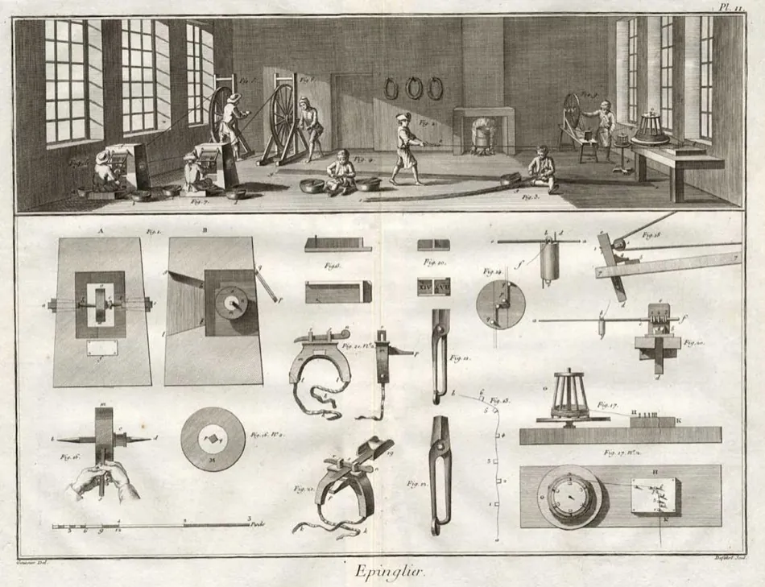
한 사람이 못 만드는 것을, 열 사람이 만든다
1776한 사람이 혼자 핀 하나를 처음부터 끝까지 만들면 하루 20개도 못 만든다. 그러나 공정을 18개로 나눠 열 사람이 나눠 맡으면, 하루 4만 8천 개를 만들 수 있다.
— 애덤 스미스, 『국부론』(1776)의 핀 공장 사례를 요약하면- 스미스는 이 사례로 분업이 생산성을 극적으로 끌어올린다는 원리를 증명했다. 이후 공장제 생산 전체를 설계하는 기본 논리가 된다.
- 동시에 그는 반복 작업이 노동자를 '어리석고 무지하게' 만들 위험도 함께 경고했다 — 효율과 인간성의 긴장은 이때부터 이미 예견되어 있었다.
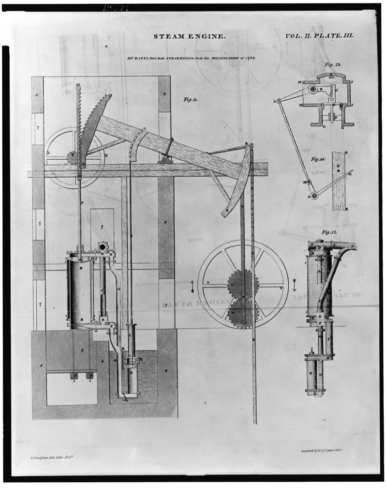
물과 바람에서 벗어난 동력
STEAM- 토머스 뉴커먼이 1712년 광산 배수용 증기기관을 처음 실용화했다. 효율은 낮았지만 불로 물을 끓여 기계를 움직인다는 원리 자체가 혁신이었다.
- 제임스 와트는 1769년 별도의 응축기를 붙여 열 손실을 크게 줄였다. 이 개량으로 증기기관은 광산을 넘어 공장 어디에나 설치할 수 있는 범용 동력원이 되었다.
- 강이나 바람에 의존하지 않는 동력은 공장의 입지를 자유롭게 했다. 도시 한복판에 공장이 들어설 수 있게 된 것도 이때부터다.
볼턴이 판 것은 기계가 아니었다
POWER선생님, 저는 여기서 온 세상이 갖고 싶어 하는 힘(POWER)을 팔고 있습니다.
— 매튜 볼턴, 1776년 소호 공장을 찾아온 작가 제임스 보스웰에게- 볼턴은 버밍엄의 소호공업회사를 운영하며 1775년 와트와 동반자 관계를 맺었다. 와트가 기계를 개량하고, 볼턴이 그것을 팔았다.
- 산업 역사가 존 리엔하드는 이 말이 산업혁명에 임박한 영국적 사고방식을 드러낸다고 봤다. 영어 power 는 동력이자 권력이다. 그 이중적 의미가 당시 영국의 집념이 되고 있었다.
- 기계를 파는 사업이 아니라 동력을 파는 사업이라는 규정 — 무엇을 만들어 파는지를 다시 정의하는 일도 디자인의 몫이다.
기계를 만들려면 먼저 재료가 있어야 한다
MATERIALS- 에이브러햄 다비는 숯 대신 석탄으로 만든 코크스로 무쇠를 고온 용융하는 데 성공했다(1709년경). 불순물을 걸러내고 인장 강도를 높인 이 기술로 무쇠는 주물 제품의 핵심 금속이 되었다.
- 다비의 콜브룩데일 주물공장이 만든 박벽 무쇠 가마솥(1707년 특허)은 산업적으로 생산된 최초의 상업 디자인으로 꼽힌다. 같은 공장이 세계 최초의 철교 아이언브리지(1777~79, 토머스 프리차드 설계)와 최초의 증기철도기관차(1803, 리처드 트레비식)도 만들었다.
- 강철은 만들기가 훨씬 까다로웠다. 시계제작자 벤저민 헌츠먼이 1740년대에 도가니강(crucible steel)을 성공시켰고, 1855년 베세머 제강법에 이르러서야 강철이 진짜 산업적 규모로 생산되기 시작한다.
- 1783~84년 헨리 코트가 특허 낸 제조기법은 무쇠와 강철의 압연과 절삭을 가능하게 했다. 철을 판과 봉으로 뽑아낼 수 있게 되자 철선(레일)과 철골 건축 같은 새로운 용도가 열렸다.
같은 부품이 어디서나 맞아 들어가려면
PRECISION- 헨리 모즐리는 '공작기계 기술의 아버지'로 불린다. 12살에 왕실무기고에서 일을 시작해, 조지프 브라마의 '챌린지 자물쇠'(1784년 특허)를 대량생산할 수 있는 기계 공구를 설계했고, 유압프레스(1795년 특허)도 만들어냈다.
- 모즐리 밑에서 성장한 조지프 휘트워스는 1841년 나사못의 보편적 표준을 제정했다 — 나사산의 각도와 피치를 통일한 최초의 산업 표준이다.
- 휘트워스는 100만분의 1인치까지 측정하는 마이크로미터도 설계했다. 그전까지 숙련 기계공이 기대할 수 있던 정확도는 16분의 1인치였다.
- 이 정밀공작기계들이 있었기에 비로소 교환가능성(interchangeability)이 실현되었다. 부품이 정확히 같아야 조립라인이 성립하고, 조립라인이 있어야 대량생산이 성립한다.
- 큰 쪽도 기계가 맡았다. 제임스 네이즈미스가 1839년 고안한 증기해머는 사람 손으로는 불가능한 크기의 단조를 정확한 힘으로 반복했다. 정밀은 작은 것에만 해당하는 말이 아니다.
대량생산의 진짜 전제조건은 기계가 아니라 측정이었다. 정확히 잴 수 없으면 똑같이 만들 수도 없다.
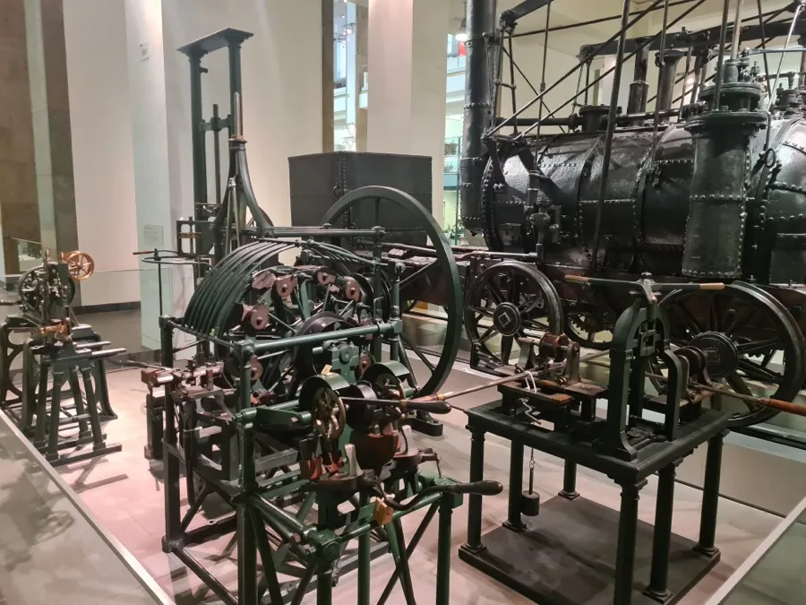
세계 최초의 생산라인
PRODUCTION LINE- 나폴레옹 전쟁 중 영국 해군은 배 한 척당 약 천 개, 연간 10만 개의 도르래가 필요했다. 여러 공급자가 손으로 만들다 보니 품질도 납기도 들쭉날쭉했다.
- 공학자 마크 이점바드 브루넬이 기계를 설계하고 헨리 모즐리가 제작해, 1802년부터 포츠머스 조선소에 일련의 기계를 공정 순서대로 배치했다. 대량생산을 위해 공작기계를 도입한 최초의 대규모 공장 시설이다.
- 1808년 이 공장은 연간 13만 개의 도르래를 생산했다. 결정적인 변화는 숫자가 아니라 노동의 성격이다 — 도르래를 만들기 위해 더 이상 숙련공이 필요 없어졌다. 처음으로 비숙련 노동자를 고용할 수 있게 되었고 인건비가 크게 절감됐다.
- 디자인의 관점에서 이 공장이 증명한 것은 하나다: 기계를 쓰면 더 큰 규모로, 더 싸게, 더 고품질의 상품을 만들 수 있다.
아이디어에도 주인이 생기다
PATENT- 영국의 전매조례(Statute of Monopolies, 1624)는 새로운 발명에 일정 기간 독점권을 인정하는 초기 특허 제도의 근거가 되었다.
- 와트의 증기기관 개량, 아크라이트의 수력방적기 모두 특허로 보호받았다. 발명이 곧 재산이 될 수 있다는 생각이 발명 경쟁을 가속시켰다.
- 동시에 특허 분쟁도 잦아졌다 — 리처드 아크라이트는 자신의 특허가 다른 발명가의 아이디어를 베꼈다는 소송에 시달렸다. '누가 먼저 발명했는가'가 법정에서 다투는 대상이 된 것도 이 시기의 새로운 풍경이다.
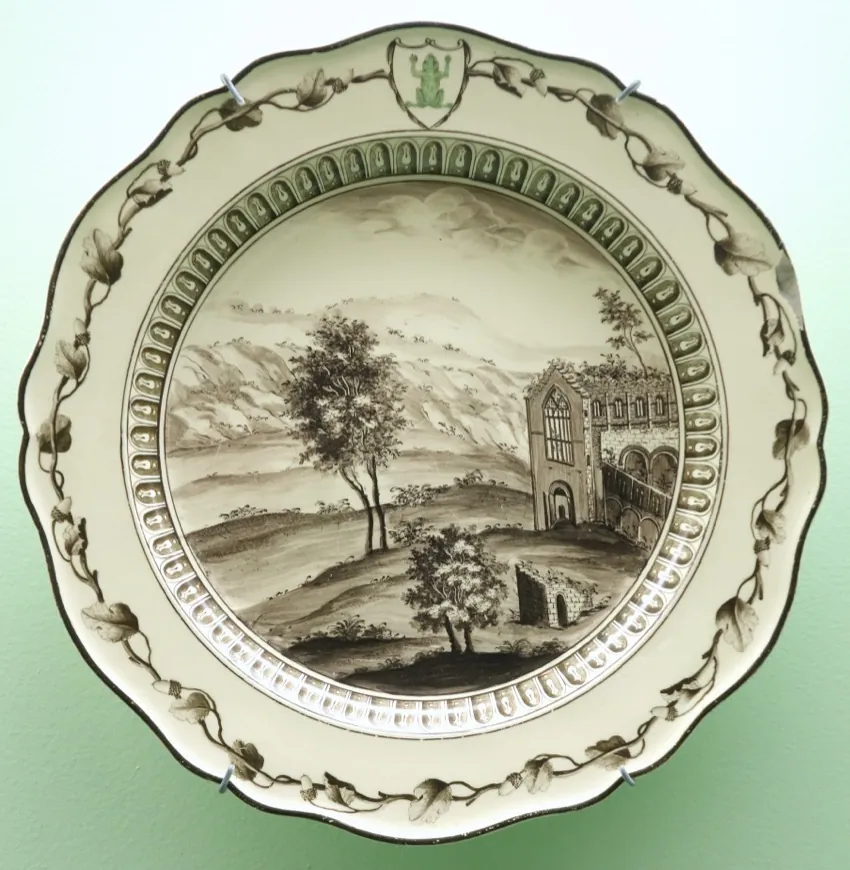
좋은 제품만으로는 부족하다
MARKETING- 웨지우드는 에트루리아(Etruria)라는 이름의 전용 공장 단지를 세우고 디자인·성형·소성·판매까지 전 과정을 계열화했다.
- 런던에 전시용 쇼룸을 열어 상류층이 직접 와서 구경하게 했고, '마음에 들지 않으면 환불'이라는 조건을 내걸었다 — 오늘날 소매업의 기본 관행을 18세기에 이미 실험한 셈이다.
- 러시아 예카테리나 대제에게 '개구리 서비스' 도자기 세트를 납품한 사실을 적극 홍보해, 유명인의 사용을 광고 수단으로 삼았다.
맨체스터라는 새로운 풍경
CITY- 맨체스터·버밍엄 같은 도시는 몇십 년 사이 공장을 중심으로 인구가 폭발적으로 몰려든 신흥 산업도시로 변모했다.
- 계획 없이 급성장한 만큼 주거·위생 환경은 열악했다. 프리드리히 엥겔스는 『영국 노동계급의 상태』(1845)에서 이 풍경을 직접 목격하고 기록했다.
- 이 '계획되지 않은 도시'라는 문제의식은, 훗날 좋은 디자인이 개별 물건을 넘어 도시와 환경 전체의 문제일 수 있다는 인식으로 확장된다.
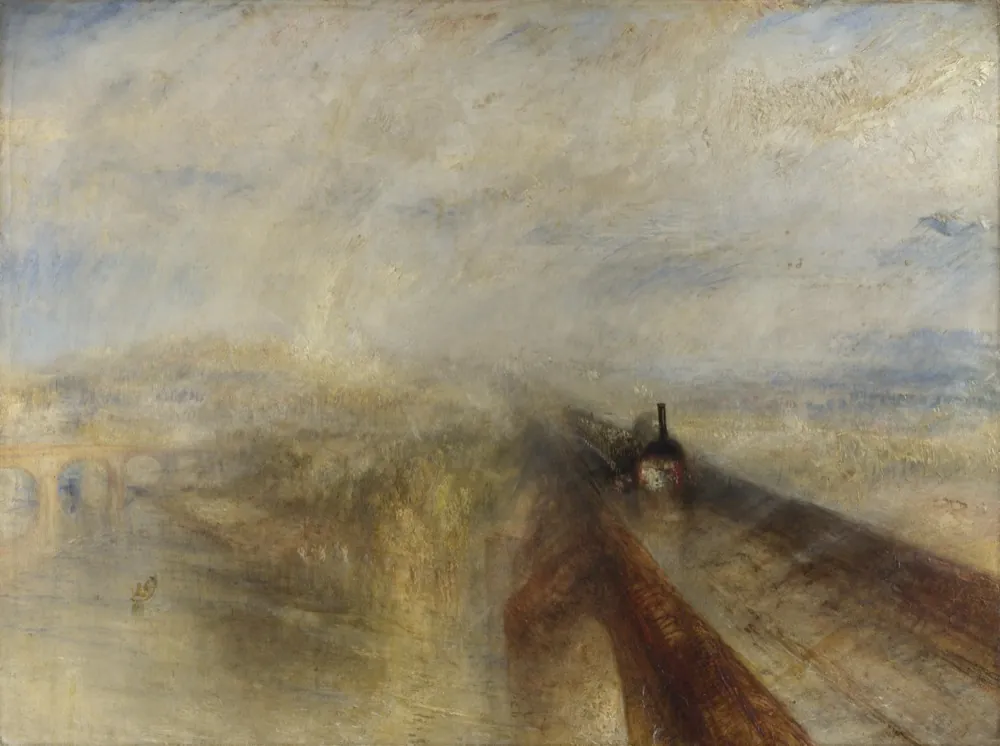
모두가 이성을 반긴 것은 아니다
ROMANTICISM- 계몽주의와 산업화가 한창이던 그 시기, 낭만주의는 이성·기계·표준화 대신 감정·자연·개별성을 옹호하며 등장했다.
- 중세를 이상화하는 낭만주의적 시선은 이후 존 러스킨과 윌리엄 모리스가 산업 생산을 비판하며 고딕 시대의 장인정신을 다시 불러오는 태도로 이어진다 (→ 5주차).
- 즉 산업혁명과 그에 대한 반발은 같은 시대에 동시에 자라나고 있었다.
- 사진 속 터너의 「비, 증기, 그리고 속도」(1844)가 그 긴장을 한 장에 담고 있다. 안개와 빛으로 뭉개진 풍경 한복판을 증기기관차가 뚫고 나온다 — 자연을 그리던 회화 안으로 기계가 들어온 순간이다. 반발하면서도 매혹된 것이다.
실 잣기와 천 짜기, 각각의 기계화
TEXTILE방적 (실 만들기)
- 제니 방적기(1764) — 한 번에 여러 가닥 방적
- 수력방적기(1769) — 더 굵고 질긴 실
- 뮬 방적기(1779) — 두 장점을 결합, 가늘고 강한 실
방직 (천 짜기)
- 나는 북(1733) — 손이 닿지 않는 폭까지 직조
- 역직기(1785) — 짜는 공정까지 동력화
실을 만드는 기술이 먼저 발전하자 원사가 남아돌았고, 이를 소화하려는 압력이 다시 방직 기계화를 밀어붙였다 — 한 공정의 혁신이 다음 공정의 혁신을 부르는 연쇄였다.
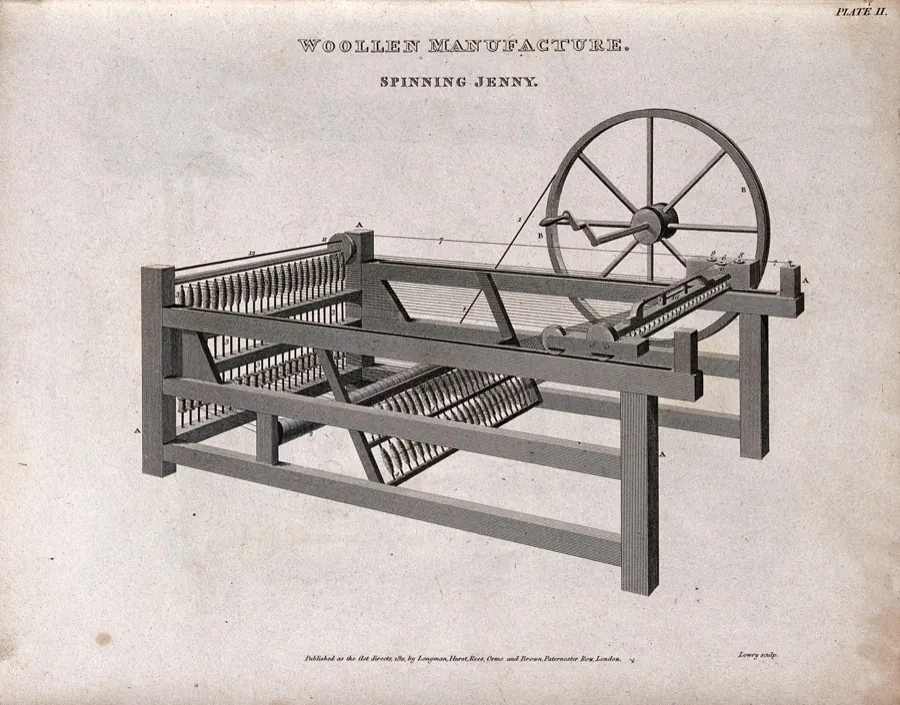
모두가 새 기계를 반긴 것은 아니었다
BACKLASH- 하그리브스의 다축 방적기는 바퀴 하나로 축 8개를 돌려 손으로 잣는 것보다 생산성을 8배로 늘렸다.
- 생계에 미칠 영향을 두려워한 랭커셔의 수작업 방적공들이 그의 집으로 몰려가 기계를 부숴버렸다. 새 기계가 누구의 일을 없애는지 당사자들이 먼저 알고 있었다.
- 그래도 흐름은 막히지 않았다. 하그리브스가 죽은 1788년까지 다축 방적기 2만 대가 영국 전역의 공장에서 돌고 있었다.
- 이 급속한 산업성장 시기에 이름을 붙인 사람은 존 스튜어트 밀이다. 1848년에야 「산업혁명(Industrial Revolution)」이라는 신조어로 규정했다 — 한복판을 지나는 동안에는 그것이 무엇인지 부를 말조차 없었다.
새로운 도구가 누군가의 일을 대신할 때, 만든 사람에게 그 결과에 대한 책임이 있을까.
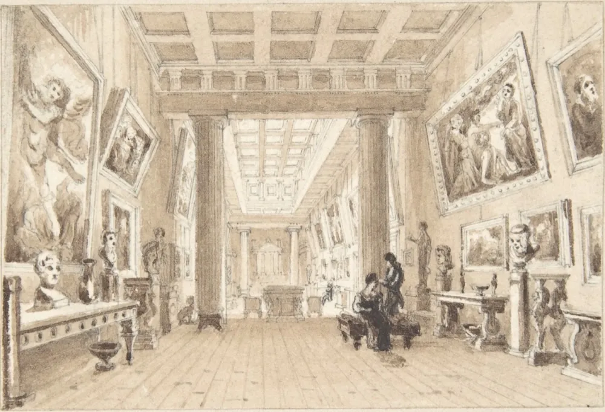
'실내장식'이라는 말이 생기다
THOMAS HOPE- 토머스 호프는 독일 은행 가문의 유산으로 로마 조각상과 이집트 조각, 그리스 꽃병을 모았다. 그리스는 물론 터키와 이집트까지 도는 해외순방여행도 연구의 일부였다.
- 1799년 런던 더처스 거리에 로버트 애덤이 설계한 집을 사서, 소장품을 놓을 자리에 맞춰 방마다 주제를 정해 다시 지었다.
- 그 방들을 채우려고 그리스 클리스모스 의자와 크라테르 항아리 같은 고전 유형을 현대적으로 해석한 가구·조명·오브제를 직접 디자인했다.
- 이 도안들을 묶어 1807년 『집안가구와 실내장식』을 냈다. 영어에 "실내장식(interior decoration)"이라는 말을 처음 들여온 책이다. 방을 꾸미는 일에 이름이 붙자, 그것은 하나의 직능이 되었다.
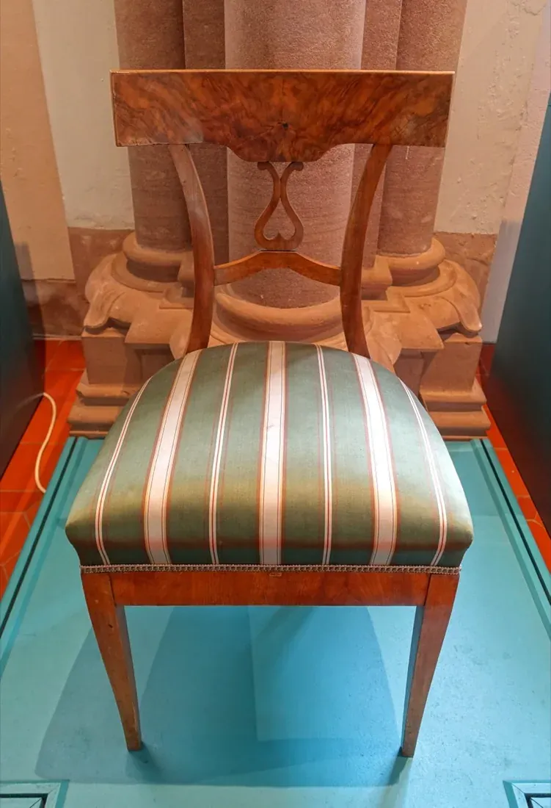
처음으로 '중산층의 양식'이 생기다
BIEDERMEIER- 1815년 빈 회의 이후 1848년까지, 오스트리아·독일 지역에서 단순화된 신고전주의 실내가 유행했다. 이를 비더마이어(Biedermeier) 양식이라 부른다.
- 이름 자체가 조롱에서 나왔다. '정직한, 점잖은, 모험적이지 않은'을 뜻하는 bieder와 흔한 성씨 meier를 합친 말로, 중산층의 멋없는 순응성을 비꼬는 표현이었다.
- 하지만 디자인사에서 이 양식이 중요한 이유는 따로 있다. 부상하는 산업시대의 신흥 중산층이 수용한 첫 번째 디자인 양식이라는 점이다. 이들은 미적 세련됨뿐 아니라 적당한 가격의 실용성을 원했다.
- 구축의 단순성, 꾸밈없는 표면, 깔끔한 선 — 비더마이어가 가진 이 속성들은 이후 근대운동이 내세울 형태 언어와 그대로 겹친다.
대량생산을 위해 설계된 최초의 의자
MODEL No.14- 마이클 토넷은 목재를 물에 끓여 휘는 증자휨가공(steam bending) 기법을 완성해, 1851년 런던 만국박람회에서 금상을 받았다.
- 1859년 발표된 모델 14번 의자는 피상적인 장식을 모두 제거하고 6개의 부품과 10개의 나사만으로 이루어졌다. 더하지도 덜하지도 않게, 본질적인 것만 남긴 구조다.
- 조립되지 않은 상태로 포장해 36개를 단 1세제곱미터 상자에 담아 수출하고, 도착지에서 드라이버로 조립했다. 오늘날 플랫팩 가구의 원형이다.
- 1860년 당시 이 의자의 제작비용은 와인 한 병보다 쌌다. 1891년까지 7,300만 개가 팔렸다.
토넷은 "디자인에서 새로운 경제 민주주의를 선도했다"고 평가받는다. 값이 싸다는 것도 디자인의 성취일까?
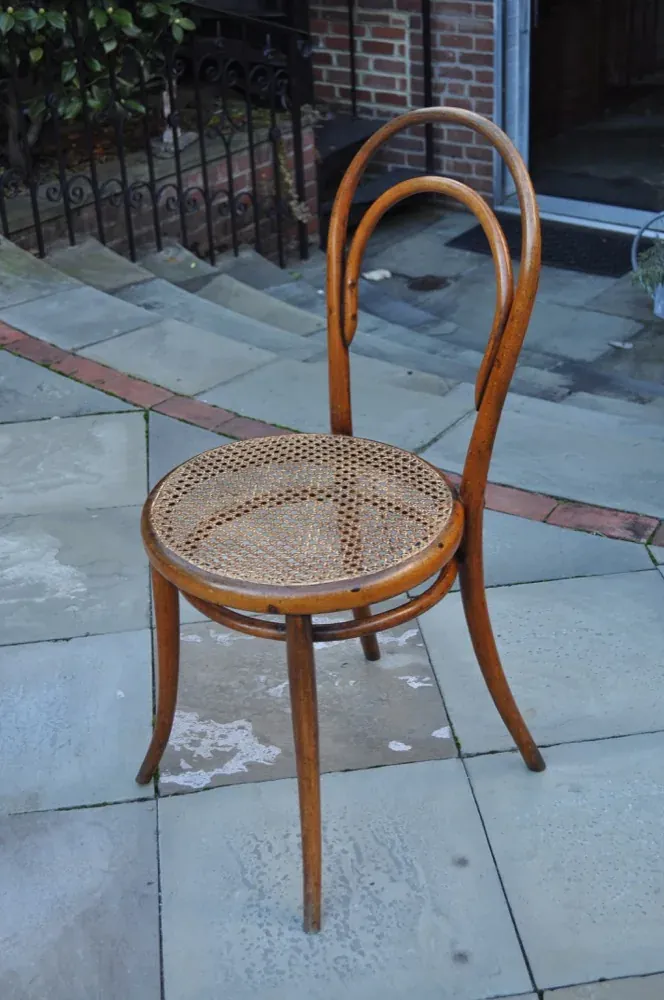
미술은 아카데미로,
제조업은 공장으로 갈라졌다.
이 둘은 다시 만날까?
기계 생산은 시각문화를
어떻게 변화시켰는가?
합리화된 생산과 만국박람회
수정궁 — 산업이 스스로를 전시하다
1851- 런던 대박람회(The Great Exhibition), 조지프 팩스턴의 수정궁(Crystal Palace) — 철과 유리로 조립된 프리패브 건축이 산업 생산력 자체를 상징했다.
- 동시에 전시된 기계 생산품 다수가 과잉 장식·부적절한 재료 모방으로 비판받았다. "할 수 있다고 해서 해야 하는가"라는 문제가 이때 처음 공론화된다.
- 기계는 형태를 빠르게 반복할 수 있었지만, 좋은 형태를 보장하지는 않았다.
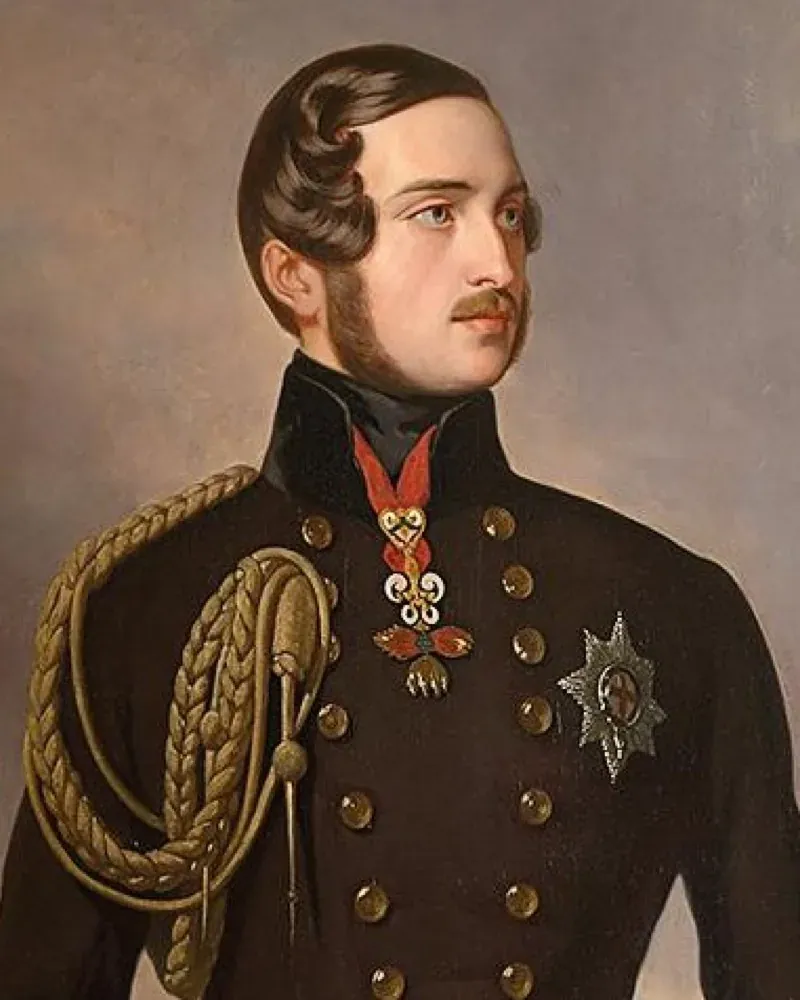
왕실 부군이 밀어붙인 국제 행사
PRINCE ALBERT- 빅토리아 여왕의 남편이자 왕립예술협회 대표였던 앨버트 공은 1848년 정부에 박람회 제안서를 제출했다. 의회 반응은 미지근했지만 그는 물러서지 않았다.
- 1849년 런던 시장 만찬 연설에서 그는 이렇게 말했다. "여러 나라와 세계 각지를 분리하던 거리는 점점 사라지고 있습니다. (중략) 예전에는 발견이 비밀에 싸여 있었다면 오늘날에는 뭔가를 발견하거나 발명해도 공개성 때문에 이미 경쟁자들이 그것을 개선하거나 추월해버립니다."
- 그는 박람회를 "전 인류가 이런 위대한 과업에 도달한 발전 지점의 진실한 시험이며 살아있는 그림"이라 규정했다.
- 기금 조달은 순탄치 않았다. 잡지 『펀치』는 앨버트 공이 모자를 내밀어 돈을 구걸하는 모습으로 그를 "근면한 젊은이"라 풍자했다.
아무도 풀지 못한 설계 과제
COMPETITION- 조건은 가혹했다. 1850년 3월에 공모를 시작해 1851년 1월 1일까지 약 7만 평방피트 규모의 구조물을 세워야 했다. 시작부터 마무리까지 단 9개월이었다.
- 233명 이상의 건축가가 계획안을 냈지만, 설계 요강과 맞아떨어지는 안은 하나도 없었다. 위원회가 직접 준비한 벽돌 건물 안은 "볼품없다"는 비난을 받고 비용 초과를 이유로 완전히 기각됐다.
- 표류하던 프로젝트를 살려낸 사람은 "천재지만 건축가나 기술자가 아닌" 조지프 팩스턴이었다. 그는 데번셔 공작의 수석 정원사였다.
전문 건축가 233명이 못 푼 문제를 정원사가 풀었다. 문제를 다시 정의하면 답이 달라진다는 것을, 이 사례는 어떻게 보여주는가?
헨리 콜과 디자인 개혁 운동
REFORM재료를 속이지 말 것, 구조를 감추지 말 것, 장식은 평면적 원리를 따를 것.
— 오웬 존스, 『장식의 문법』(1856)의 원리를 요약하면- 헨리 콜은 저급한 장식을 비판하는 『디자인 저널』을 발행하고, 대박람회의 수익금으로 사우스켄싱턴박물관(오늘날의 V&A)을 세워 디자인 교육을 제도화했다.
- "정직한 재료, 정직한 구조"라는 이 개혁의 언어는 다음 주 미술공예운동의 토양이 된다.
철과 유리로 지은 6개월짜리 건물
1851- 온실 건축가 조지프 팩스턴이 규격화된 유리·철골 부재를 조립해 단 몇 달 만에 완공했다.
- 건축 자체가 프리패브(사전제작) 부품의 표준화를 증명하는 하나의 거대한 전시물이었다.
- 박람회 후 시드넘으로 이전·재조립되었으나 1936년 화재로 소실됐다. 오늘날은 사진과 판화로만 남아 있다.
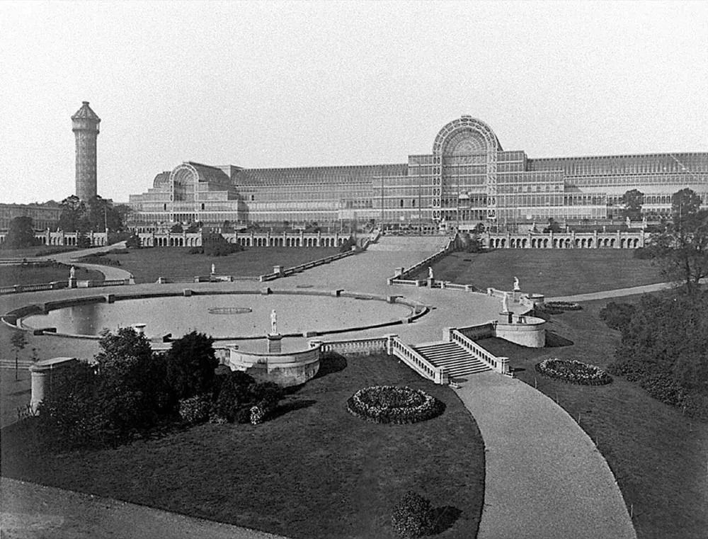
반복된 국제 박람회
SERIES박람회는 이후 1925년 파리(아르데코)·1939년 뉴욕(유선형)에서도 그 시대의 양식을 대중에게 공개하는 자리로 반복된다 — 11주차에서 다시 다룬다.
온실 기술자가 지은 궁전
ENGINEERING- 조지프 팩스턴은 원래 정원사이자 대형 온실 설계자였다. 채츠워스 하우스의 거대 온실 경험을 그대로 확장해 수정궁을 설계했다.
- 규격화된 철제 기둥과 판유리 패널을 공장에서 미리 만들어 현장에서 조립하는 방식으로, 착공에서 완공까지 약 5개월밖에 걸리지 않았다.
- 길이 564m, 당시 세계 최대 규모의 실내 공간이었다. 기존 나무 세 그루를 베지 않고 건물 안에 그대로 품는 방식으로 설계해 화제를 모았다.
자연의 기술적 위업
BIOMIMICRY- 팩스턴은 채츠워스에서 아마존의 대왕수련(Victoria regia)을 재배하는 데 성공했다. 그를 사로잡은 것은 꽃이 아니라 잎이 하중을 견디는 힘이었다.
- 지름 2미터가 넘는 잎이 물 위에서 무게를 버티는 비밀은 잎 뒷면의 방사형 갈비뼈 구조에 있었다. 굵은 주맥이 중심에서 뻗어나가고, 가는 가로맥이 그 사이를 격자로 이어 붙든다.
- 팩스턴은 이를 "자연의 기술적 위업"이라 불렀다. 그리고 이 원리를 그대로 백합 온실의 연결식 지붕으로 옮겼고, 다시 그 개념을 모듈 단위로 확장해 수정궁을 설계했다.
- 구조는 자연에서, 재료는 공장에서 왔다. 수정궁은 생물의 구조 원리와 산업 생산이 만난 지점에 서 있다.
세계를 네 개의 방으로 압축하다
CONTENT- 전시는 원료, 기계, 공산품, 순수미술 네 범주로 나뉘었다. 6개월간 약 600만 명이 방문했다 — 당시 영국 인구의 3분의 1에 해당한다.
- 인도에서 온 대형 다이아몬드 '코이누르', 미국관의 콜트 리볼버(호환 부품 방식), 독일 크루프사의 대형 강철 주조물이 화제를 모았다.
- 절반은 영국과 대영제국 식민지의 전시였다. 산업력을 과시하는 국가적 행사였다는 점도 함께 봐야 한다.
공무원이 디자인 개혁을 이끌다
HENRY COLE- 헨리 콜은 원래 기록보관소 공무원 출신으로, 우편 제도 개혁에도 관여한 실무형 개혁가였다.
- 대박람회 이전부터 '서머리(Felix Summerly)'라는 필명으로 디자인이 좋은 실용품 브랜드를 직접 만들어 실험했다. 이론가가 아니라 실천가에 가까웠다.
- 대박람회의 실무 총괄을 맡은 뒤, 그 경험을 곧바로 디자인 교육 기관 설립으로 연결시켰다 — 다음 슬라이드에서 다룬다.
디자인이란 무엇인가, 처음으로 정의되다
DEFINITION디자인에는 이중적 관계가 있다. 첫째, 디자인된 물건은 유용성과 엄밀하게 연관된다. 둘째, 그 유용성을 아름답게 만드는 것 또는 장식하는 것과 관련된다. 하지만 많은 이들은 디자인이라는 말을 전체적인 의미보다 유용성과 별개거나 반대되기도 하는 장식이라는 의미에 더 가까운 두 번째 의미와 동일시한다. 이렇게 부가된 것과 본질적인 것을 혼동함에 따라, 현대 디자이너들의 작품에서 볼 수 있는 중대한 취향의 오류가 많이 생겨났다.
— 헨리 콜, 『디자인과 제품 저널』 창간호, 1849- 당시 대부분의 제조업자는 디자인을 기계화된 생산의 여러 측면 중 하나, 최악의 경우 부차적인 것으로만 보았다. 전문 산업디자이너 대신 기술전문가나 재료 전문가가 디자인을 수행했고, 실무에는 이론적·철학적 기초가 거의 없었다.
- 콜의 진단은 정확했다. 문제는 디자인을 개념과 계획, 궁극적 실현으로 이어지는 과정이 아니라 물품의 장식으로 오해한 것이었다.
나쁜 디자인을 전시한 박물관
1852- 대박람회 수익금으로 1852년 설립된 이 박물관은, 산업제작박물관(Museum of Manufactures)이라는 이름으로 출발했다. 훗날 빅토리아 앤 앨버트 박물관(V&A)이 된다.
- 초기 전시에는 '취향의 오류들(Chamber of Horrors)'이라는 코너가 있었다 — 잘못된 디자인의 실제 사례를 모아 학생들에게 반면교사로 보여주었다.
- 디자인은 취향의 문제가 아니라 학습과 훈련으로 개선할 수 있는 기술이라는 전제가 이 박물관의 존재 이유였다.
서른일곱 가지 규칙
1856- 오웬 존스는 『장식의 문법』(1856)에서 이집트·그리스·무어·중국 등 세계 각지의 장식 원리를 37개 명제로 정리했다.
- 핵심은 "장식은 평면의 논리를 따라야 하며, 자연물을 사실적으로 흉내 내면 안 된다"는 것이었다. 벽지의 꽃무늬가 진짜 꽃처럼 입체적으로 보이면 오히려 나쁜 디자인이라는 주장이다.
- 이 책은 자신이 실제로 관찰한 스페인 알함브라 궁전의 이슬람 타일 무늬에서 큰 영향을 받았다. 유럽 바깥의 장식 전통을 이론적 근거로 끌어온 드문 사례다.
건축을 네 가지 원초적 기술로 되짚다
SEMPER- 독일 건축이론가 고트프리트 젬퍼는 저서 『양식론』(1860~1863)에서 건축의 기원을 화덕, 지붕, 담장, 흙기단 네 요소로 환원했다.
- 각 요소는 서로 다른 원초적 기술(도자기·목공·직조·석공)에서 나왔다고 보았다. 재료와 기법이 형태를 결정한다는 관점은 이후 기능주의 이론의 중요한 밑거름이 된다.
- 젬퍼는 대박람회를 직접 참관하고 이 이론을 다듬었다 — 대량 생산된 각국의 공예품을 비교하며 얻은 통찰이었다.
수정궁 이후의 건축
LEGACY수정궁은 하나의 건물이 아니라, 그 뒤 반세기 건축이 참조하는 공법의 원형이 되었다.
일회성 행사에서 지속적인 시스템으로
INSTITUTION- 사우스켄싱턴박물관과 함께 디자인 학교 네트워크가 영국 전역에 세워졌다. 산업 도시마다 실무 인력을 기르는 미술공예학교가 생겼다.
- 이 '박물관 + 학교' 모델은 이후 독일·미국 등 다른 나라의 산업 진흥 정책에도 참고 대상이 되었다.
- 디자인 개혁이 한 세대의 캠페인에서 제도와 커리큘럼으로 자리 잡은 과정이, 다음 주 미술공예운동이 등장할 토양을 마련했다.
박람회보다 먼저 시작된 불만
CRITIC- 건축가 오거스터스 퓨진은 대박람회 이전인 1836년부터 저서 『대조』에서 기계로 찍어낸 값싼 장식을 비판하고 중세 고딕 공예의 정직함을 이상으로 내세웠다.
- 그는 대박람회 안에 '중세 궁정(Medieval Court)'이라는 전시관을 직접 꾸며, 기계 생산품 옆에 손으로 만든 고딕풍 가구·금속공예를 나란히 세웠다.
- 퓨진의 비판은 몇 년 뒤 존 러스킨과 윌리엄 모리스로 이어지는 디자인 개혁 계보의 실질적 출발점으로 평가된다 (→ 5주차).
장식은 무엇을 가리고 있었나
DISHONEST DESIGN- 박람회 전시물 대부분은 꽃줄로 장식되거나 큰 패턴으로 마감됐다. 장식적 과다함을 드러내지 않은 유일한 전시물은 산업기계와 농기구였다 — 본연이 실용적이고 기능 중심으로 디자인된 것들이다.
- 이탈리아 미술비평가 마리오 프라즈는 이런 빅토리안 실내의 질식할 것 같은 어수선함을 '공간 공포(horror vacui)'라 불렀다. 로코코·바로크·신고전주의부터 아시리아·켈트 양식까지 끌어다 쓰는 복고주의 제품 전반을 가리키는 말이 되었다.
- 근본적인 문제는 따로 있었다. 장식은 저급한 기량을 가리거나 질 낮은 재료를 숨기기 위해 빈번하게 사용됐다. 제조업자들은 기계를 더 싸고 빠르게 상품을 찍어내는 수단으로만 보았고, 수공예를 피상적으로 모방했을 뿐 산업생산에 맞는 방식을 실현하지 못했다.
- "과도할수록 더 좋다"가 당시의 지배적 태도였고, 대중은 대체로 이를 잘 받아들였다. 비싼 수공예품처럼 보이지만 실제로는 공장 생산되어 살 만한 "사치스러운" 상품 앞에서, 신고전주의의 절제는 오히려 단조롭고 유행이 지난 것으로 보였다.
영국은 산업혁명을 가장 먼저 겪은 나라였지만, 그것을 잇는 산업디자인의 청사진은 갖지 못했다. 기술이 앞서면 디자인도 저절로 따라오는 것은 아니다.
누가 이 물건들을 사고 있었나
CONSUMER- 이 시대 변화에 가장 이득을 본 집단은 신흥 중산층이었다. 출세 지향적이고 자립적이며 고등교육을 받은 이들은 성장하는 도시에서 상업·공공서비스·의학·법률에 종사하며 번영했다.
- 이들이 물건을 사는 방식도 새로웠다. 우편 주문 카탈로그와 도시마다 새로 생긴 백화점을 통해 적정 가격의 산업생산품을 과잉 구매하는 일차고객층이 형성됐다.
- 주택 소유가 늘면서 중산층은 자기만의 "누각"을 채울 목적으로 가구와 가정용품을 사들였다. 하지만 그 상품들의 디자인은 질과 취향 모두에서 아쉬운 점이 많았다.
- 디자인 개혁이 미학 논쟁이 아니라 시장의 문제였던 이유가 여기 있다. 새로운 소비자와 새로운 유통 경로가 먼저 생겨났고, 그것을 채울 물건의 수준이 뒤따라가지 못했다.
산업혁명의 정신적 고향이 옮겨가다
AMERICAN SYSTEM- 18세기 중반 산업혁명이 태동한 곳은 영국이었지만, 이내 영국을 따라잡고 산업혁명의 정신적 고향이 된 곳은 미국이었다.
- 1831년 미국을 9개월간 조사한 프랑스 귀족 알렉시스 드 토크빌은 『미국의 민주주의』(1835)에 이렇게 썼다. "미국인은 모든 게 끊임없이 변하는 듯하고 모든 변화가 진보를 이루는 듯한 경이의 땅에 산다. (중략) 미국인이 보기에, 존재하지 않는 건 아직 시도되지 않은 것에 불과하다."
- 제도도 뒷받침했다. 1838년 새 특허법은 특허를 받기 전까지 저작권을 주장하지 못한다는 원칙을 세워, 원작 디자인을 모방하기 어렵게 만들었다. 1838년까지 승인된 특허가 5백 건 정도였는데, 법안 통과 몇 년 만에 1만 건을 넘겼다. 디자인 연구개발에 장기 투자할 이유가 생긴 것이다.
- 영국 엔지니어 조지프 휘트워스는 뉴욕 만국산업박람회(1853~54) 정부 보고서에 이렇게 적었다. "미국인들은 거의 모든 산업부문에서 기계의 힘을 끌어들인다. 수작업 노동을 대체할 수 있다면 어디에서든 보편적으로 기계에 의지한다."
유명한 시연, 그리고 밝혀진 진실
ELI WHITNEY- 엘리 휘트니는 1794년 특허받은 조면기(목화씨를 빼내는 기계)로 미국 면공업혁명을 일으킨 인물이다. 프랑스와의 전쟁을 우려한 정부가 머스킷소총 4만 개를 조달하려 하자, 그는 1798년 28개월 내 10만 개 생산이라는 계약을 따냈다.
- 코네티컷 햄든 강변에 병기창을 짓고 노동자 마을 휘트니빌까지 건설했다. 미숙련공이 작업할 수 있도록 특수 설계한 수력 기계를 개발하고, 소총 제작을 별개의 구성요소로 나눴다.
- 1801년 1월, 그는 애덤스 대통령과 제퍼슨 당선자 앞에서 나사드라이버 하나로 단일한 머스킷소총에 10개의 다른 잠금장치를 조립하며 부품호환성을 시연했다. 제퍼슨은 즉각 채택했다.
- 그런데 그의 부품들은 기대만큼 호환되지 않았다. 잠금 부재에는 각기 특별한 표식이 있었는데, 호환이 제대로 됐다면 이런 표식이 불필요했을 것이다. 1만 개 납품에는 예상의 4배인 10년이 걸렸다.
그럼에도 휘트니의 기여는 전무후무하다고 평가된다. 미숙련공이라도 숙련 장인의 품질에 필적할 제품을 만들 수 있는 체계를 고안했기 때문이다. 시연은 과장이었지만 방향은 옳았다 — 디자인사에서 이런 경우를 어떻게 평가해야 할까?
합리적 설계가 만든 승리, 그리고 학살
ARMORY PRACTICE- 스프링필드 병기창의 발명가 토마스 블랜차드는 획기적인 공작기계 둘을 개발했다. 1818년 설계한 '모방' 선반은 표준모형의 윤곽선을 복제해 개머리판을 동시에 여러 개 생산했고, 1822년의 두 번째 선반은 총열을 회전시키며 팔각 단면을 깎아냈다.
- 이 발명들은 곧 모든 표준화 제품의 기계화된 대량제작이 "병기창 실무(armory practice)"라 불릴 정도로 생산과정을 합리화시켰다.
- 미국 북부가 채택한 이 생산기법은 1861~65년 남북전쟁에서 북군에 더 풍부하고 믿을 만한 무기와 탄약을 공급하며 승리의 주요 동력이 되었다.
- 동시에 인류사에 어두운 새 장을 열었다. 미국 남북전쟁은 세계 최초의 산업화된 전쟁이었기 때문이다. 효율적으로 설계된 무기들의 도매제작은 군인들의 도매금 학살이라는 비극으로 이어졌다.
교재의 문장을 그대로 옮긴다. "디자인의 힘은 세심한 구축에 활용되던 만큼이나 때때로 무심한 파괴에도 활용되었다." 잘 만든 디자인이 반드시 좋은 결과를 낳는가?
기계로 못 만드는 건 없다
SAMUEL COLT- 젊은 시절 선원이던 새뮤얼 콜트는 항해 중 나무로 깎은 모형에서 출발해, 공이를 당기면 탄약통이 회전하는 연발권총을 완성했다. 1835년 영국, 이듬해 미국에서 특허를 받았다.
- 정부가 표준 미달로 거부한 권총들이 뜻밖의 교훈을 줬다. 그는 거부된 권총을 일반 대중에게, 정부가 1등급에 지불하려던 금액보다 비싸게 팔 수 있었다.
- 1855년 하트포드 병기창은 세계 최대의 민간 소유 병기창이 되었다. 감독관 엘리샤 킹 루트가 약 400개의 기기를 만들어, 1856년에는 매일 150개의 무기를 생산했고 부품의 약 80%를 기계로 제작했다. 콜트는 "기계로 생산하지 못하는 건 없다"고 선언했다.
- 성공의 절반은 마케팅이었다. 화학실험으로 관객을 웃기던 떠돌이 재주꾼 "닥터 코울트" 출신답게 그는 자기홍보에 능했다. 스스로를 '샘 콜트 대령'이라 칭하고, 하트포드 공장에 양파 모양 돔을 얹어 방문객의 시선을 끌었다.
- 회사 역사는 그를 이렇게 기록한다. "판촉과 홍보, 제품표본화, 광고, 공보활동을 포함한 효과적인 마케팅 프로그램의 잠재력을 한껏 실현한 최초의 미국 제조업자 중 한 사람."
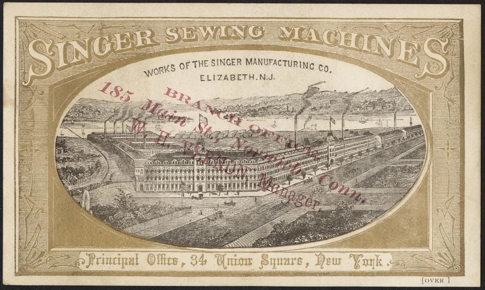
기계보다 먼저 바뀐 것은 파는 방법이었다
SINGER- 기계제작자로 출발한 아이작 메리트 싱어는 기계화된 생산기법을 소비상품에 통째로 적용한 미국 최초의 디자인 기업가 중 한 명이다.
- 1851년 발판 재봉틀 특허를 받고 아이 엠 싱어사를 세웠다. 1855년부터 이 기계는 전 세계로 팔려나갔다.
- 1863년부터 공장 안에 특별 설계한 기계를 대폭 늘리고 병기창 실무에 기초한 생산체계를 시행했다. 1880년대 초에는 자동·반자동 기계로 완전히 호환 가능한 부품을 만들어냈다.
- 그가 먼저 쓴 판매 기법이 할부신용판매다. 한 번에 못 살 만큼 비싼 기계를 매달 나눠 내고 집에 들이게 했다. 물건을 파는 방식 자체가 설계 대상이 된 것이다.
싱어는 만드는 방법과 파는 방법을 같이 바꿨다. 둘 중 어느 쪽이 이 기계를 세계 최대의 상품으로 만들었을까.
총 만들던 회사가 만든 자판
REMINGTON- 레밍턴 앤 선즈는 엘리퍼릿 레밍턴이 정밀하기로 유명한 화승총을 만들려고 1816년에 세운 총기회사다. 이 회사가 병기창 실무를 그대로 써서 최초의 상업용 타자기를 대량생산했다.
- 모델 1번은 크리스토퍼 숄즈·칼로스 글리든·새뮤얼 소울이 1866년부터 73년까지 디자인했고, 1874년 레밍턴 공장에서 대량생산에 들어갔다.
- 이 기계가 쿼티(QWERTY) 자판을 쓴 첫 상품이다. 지금 손끝에 있는 배열이 150년 전 총기공장의 결정이다.
- 사진의 꽃무늬 칠과 여닫는 뚜껑을 보라. 재봉틀을 장식하던 방식을 그대로 가져다 썼다. 새로운 물건에는 아직 자기 형태가 없어서, 익숙한 물건의 옷을 빌려 입었다.
재봉틀 기계로 자전거를 만들다
POPE- 포프 제작회사는 위드 재봉틀 공장의 기계를 빌려 자전거를 만들기 시작해, 결국 공장을 통째로 사들였다. 특수기능과 절단도구를 갖춘 재봉틀 제작용 기계가 하이휠 자전거의 생산요건을 그대로 충족했기 때문이다.
- 1881년 잡지 『바이시클링 월드』는 포프의 생산방식을 「위대한 미국제조업」이라는 제목으로 소개했다.
- 컬럼비아는 시험과 품질제어, 지속적인 디자인 개선을 선구적으로 고수해 미국 최초의 주목할 만한 자전거 브랜드가 되었다.
- 병기창 실무의 원리를 군수품이 아니라 상업용 제품에 적용한 미국 최초의 기업 중 하나다. 총에서 재봉틀로, 재봉틀에서 자전거로 기술이 건너간 경로가 이 한 대에 다 들어 있다.
무기 기술이 생활용품으로 건너오다
AMERICAN SYSTEM- 이 발명품들은 수백만 사람의 일상을 바꿔놓았고, 동시에 세계가 미국을 부러워하는 새로운 근대의 전조가 되었다.
- 디자인 역사가 지크프리트 기디온은 이 시기를 이렇게 요약했다. "기업을 소유한 사람이라면 누구나 발명을 했고, 자기 상품을 보다 빠르고 완벽하게, 그리고 종종 더 아름답게 만들 방법과 수단을 물색했다. 옛 도구들은 익명적으로나 부지불식간에 현대적인 도구들로 변형되었다."
- 한때 병기창 실무로 알려졌던 것이 이제는 "미국식 제작체계"로서 전 세계에 알려졌다. 디자인의 변혁적 능력은 군사적 목적보다 상업적 목적으로 쓰이기 시작했다.
기계를 거부하지 않고도
좋은 디자인이 가능할까?
좋은 디자인이란
무엇인가?
개혁의 바람 — 미술공예운동
존 러스킨 — 노동의 기쁨이 사라진 물건
THOUGHT고딕 성당의 거친 조각이 아름다운 이유는, 그것을 깎은 손이 자유로웠기 때문이다.
— 존 러스킨, 「고딕의 본질」(1853)의 논지를 요약하면- 러스킨은 기계 생산이 노동자에게서 창작의 즐거움을 빼앗는다고 보았다. 디자인 비평은 형태의 문제이자 노동의 윤리의 문제였다.
미술공예운동의 철학적 핵
PRE-RAPHAELITE- 19세기 중·후반 라파엘전파(Pre-Raphaelite Brotherhood)가 형성됐다. 윌리엄 홀만 헌트, 존 에버렛 밀레이, 단테 가브리엘 로세티가 창립멤버였다. 순수미술 집단으로 시작했지만 결국 미술공예운동의 철학적 핵을 형성한다.
- 이들은 라파엘의 압도적 영향과 이후의 매너리즘적 고전주의 해석이 미술을 훼손해왔다고 보았다. 조슈아 레이놀즈 경이 세운 왕립예술아카데미 교육을 겨냥해 그를 "슬로슈아 경"이라 조롱했다.
- 대신 프라 안젤리코, 보티첼리, 필리포 리피 같은 르네상스 초기 예술가에 주목했다. 이들처럼 "선이나 규칙에 속박되지도, 이론의 가르침을 받지도 않은 구성적 미의 느낌"을 회화로 되찾으려 했다.
- 자체 저널 『더 점(The Germ)』(1850)을 짧게 발행했다. "전적으로 자연의 단순성을 고수하는 입장을 장려하고 수행"하려는 의도였다.
디자인 역사에서 중요한 사건 하나
TURNING POINT- 에드워드 번-존스와 윌리엄 모리스는 옥스퍼드 대학교에서 신학을 공부하던 학생이었다. 두 사람은 『더 점』에서 전개된 생각들에 큰 영향을 받았고, 모리스가 "진정한 계시록"으로 여긴 존 러스킨의 『베니스의 돌』에서도 도덕적으로 자극받았다.
- 결과는 진로의 전환이었다. 둘 다 신학을 버리고 "예술의 삶"을 시작했다. 번-존스는 회화로, 모리스는 조지 에드먼드 스트리트의 사무소에서 건축가 수련을 받다가 로세티의 설득으로 회화를 익혔다.
- 모리스가 자신의 디자인 소질을 발견한 것은 런던 동남부 벡슬리히스의 신혼집 레드하우스를 장식할 때였다. 필립 웨브와 협업한 이 집은 중세의 목가적 이상향을 지향한 "예술의 궁전"이었다.
생산의 본연은 사물을 만드는 노동에 있는 것이 아니라 소비에 있다. 그리고 국가의 문제는 얼마나 많은 노동력을 동원하느냐가 아니라 얼마나 풍부한 삶을 생산하는가에 있다.
— 존 러스킨, 「가격에 따라(Ad Valorem)」사상을 제작으로 옮기다
PRACTICE- 모리스 마샬 포크너 상회(1861 설립, 이후 Morris & Co.) — 벽지·직물·가구·스테인드글라스를 손으로 디자인하고 제작했다.
- 레드 하우스(필립 웹 설계, 1859) — 모리스의 자택. 재료의 정직함과 통합 예술을 실현한 건축이다.
- 미술공예전시협회(1888 결성) — 'Arts and Crafts'라는 용어 자체가 여기서 나왔다.
첫 번째 미술공예 공방
CENTURY GUILD- 모리스의 영향을 받은 아서 헤이게이트 맥머도와 셀윈 이미지가 1882년 센추리 예술가 공방(the Century Guild of Artists)을 세웠다. 첫 번째 미술공예 공방이다.
- 설립 취지는 분명했다. "모든 예술을 더 이상 장사꾼들이 아닌 예술가들의 영역으로 만들기 위해서" 공방을 세웠으며, "건물, 장식, 유리 색채, 도자기, 목공과 금속을 회화와 조각의 옆으로 올바른 자리를 되찾는" 것을 목표로 삼았다.
- 같은 해 맥머도가 공방 식당용으로 디자인한 의자는 등받이에 소용돌이 모양의 나뭇잎 줄기 무늬를 비대칭 모티프로 새겨 넣었다. 이런 패턴은 과거 어느 곳에서도 볼 수 없던 것이었다.
- 작지만 결정적인 사건이었다. 이 소용돌이 양식은 이후 10여 년간 아르누보가 키우고 번성시킨 유기주의의 첫 조짐으로 평가된다 — 다음 주 아르누보는 여기서 이미 예고되고 있었다.
이상과 현실의 간극
PARADOX- 모리스는 "평범한 사람들을 위한 예술"을 꿈꿨지만, 수공예 제품은 제작 시간이 길고 값이 비싸 결국 부유층의 소비재가 되었다.
- 기계를 거부한 결과, 대량생산이 도달할 수 있는 대중에게는 오히려 닿지 못했다. 이 모순은 대륙의 후계자들(유겐트슈틸, 빈 분리파, 독일공작연맹)에게 다른 방식의 답을 요구하게 된다.
집 한 채가 곧 선언이었다
1859- 붉은 벽돌을 회칠로 감추지 않고 그대로 드러낸 외관이다. "재료를 속이지 말 것"이라는 개혁의 원칙을 건축으로 옮겼다.
- L자형 평면, 뾰족지붕, 고딕적 디테일로 산업화 이전 영국 시골 건축의 정직함을 근대적으로 재해석했다.
- 모리스와 동료들이 가구·스테인드글라스·벽화까지 공동 설계한 '토탈 디자인'의 초기 사례.
자연을 평면 위의 리듬으로
PATTERN- 인디고 디스차지 염색 기법을 직접 되살려 제작한 '딸기 도둑(Strawberry Thief)' — 정원에서 딸기를 훔치는 개똥지빠귀를 관찰해 도안했다.
- 모리스의 패턴은 자연을 사실적으로 재현하지 않고, 평면의 반복 구조로 추상화한다. 벽지·직물이라는 '표면'의 논리를 존중한 디자인이다.
모리스 이후 — 대륙과 대양을 건너
SPREAD- 독일: 미술공예운동의 '정직한 재료' 이념이 독일공작연맹(1907)의 산업 표준화 논의로 이어진다 (→ 7주차).
- 일본: 야나기 무네요시가 주도한 민예운동(民藝運動, 1926~) — 이름 없는 장인의 일상 공예에서 미를 찾는다는 점에서 모리스의 문제의식과 공명한다.
- 미국: 구스타프 스티클리의 '미션 스타일' 가구 — 수공예 미학을 중산층 시장에 맞게 절충했다.
불완전함을 미덕으로
RUSKIN- 러스킨은 「고딕의 본질」(1853)에서 좋은 고딕 건축의 특징으로 거칢(savageness), 변화무쌍함, 자연스러움, 기괴함, 완고함, 풍성함 여섯 가지를 꼽았다.
- 핵심은 '불완전함'이다. 노동자가 정해진 도안을 기계처럼 똑같이 반복하지 않고, 스스로 판단해 조금씩 다르게 조각할 자유가 있어야 진짜 좋은 건축이라는 주장이었다.
- 완벽하게 똑같은 반복은 러스킨에게는 노예 노동의 증거였다. 기계 생산에 대한 그의 반감은 여기서 나온다.
책 한 권도 통합 예술이 될 수 있다
1891- 모리스는 말년에 켈름스콧 프레스를 세워 직접 활자체를 디자인하고, 종이·잉크·장정까지 모든 요소를 통제한 책을 만들었다.
- 대표작 「켈름스콧 초서(The Kelmscott Chaucer)」(1896)는 중세 필사본을 참조한 화려한 테두리 장식과 목판 삽화로 유명하다.
- 이 시도는 이후 유럽 곳곳에 사가판(私家版, private press) 운동을 촉발했고, 활자·조판·타이포그래피를 예술의 영역으로 끌어올렸다 — 14주차 그래픽 디자인사와 연결되는 지점이다.
런던을 떠나 시골에 공방을 짓다
GUILD- 건축가 찰스 로버트 애쉬비는 1888년 런던 이스트엔드에 수공예길드(Guild of Handicraft)를 세워 은세공·가구 제작을 가르쳤다.
- 1902년에는 길드 전체를 런던에서 시골 마을 치핑캠던으로 통째로 이전했다. 도시의 산업 환경 자체를 벗어나야 진짜 수공예가 가능하다고 믿었다.
- 이상은 원대했지만 경영난으로 1907년 길드는 해산됐다 — 미술공예운동의 이상과 현실 사이 간극을 가장 극적으로 보여주는 사례다.
미술공예운동 안에서 기계를 받아들인 사람
BENSON- 모리스사는 윌리엄 아서 스미스 벤슨의 금속주물도 판매했다. 벤슨은 미술공예운동에 적격이었음에도 동료들보다 기계사용을 훨씬 덜 꺼려했다.
- "예술제작품"을 합리적인 기계생산기법과 화해시킨 그는 근대디자인을 초기에 지지한 중요한 인물이었다. 헤르만 무테지우스는 벤슨의 제품이 독일의 미래 산업생산 모델로 역할하리라 내다보며 칭찬했다.
- 미스터 "브라스(놋쇠)" 벤슨으로 알려지게 된 그는 부품호환성의 개척자이기도 했다. 표준화된 부품들을 다양하게 조합해 여러 유형의 제품을 만들었다 — 한 찻주전자에서 발견되는 요소를 전등이나 잉크통을 만드는 데 써도 좋았다.
- 이런 호환성 조합을 통해 벤슨은 런던 해머스미스의 에이트 금속주물공장에서 말 그대로 수백 개의 다양한 패턴을 생산할 수 있었다. 산업적으로 생산되었지만 공공연한 기계미학이 없었기에, "기계를 통한 수공예"라 부르는 게 가장 적절하다.
단순함이 곧 도덕이라고 믿은 건축가
VOYSEY- 찰스 보이시는 당대 영국 건축가와 디자이너에게 가장 영향력 있는 사람이었다. 그는 지역의 전통을 되돌아보며, 수 세기에 걸쳐 기능적으로 연마되어온 토속적(vernacular) 형태를 다시 검토했다.
- 그의 신조는 이랬다. "단순성, 정직함, 평온, 명쾌함, 솔직함은 좋은 건축과 좋은 인간에 본질적인 도덕적 특성이다." 논쟁적인 성공회 성직자였던 아버지 밑에서 자란 배경이 이런 인간 중심적 접근에 반영돼 있다.
- 독일대사관 문화담당관 헤르만 무테지우스는 저서 『영국 주택』에서 보이시를 "디자이너의 작품과 건축가의 작품 사이에서 완벽한 종합을 이룬 첫 번째 사람"이라 평가했다. 건물뿐 아니라 가구까지 책임지는 종합예술작품(Gesamtkunstwerk)을 만들었다는 뜻이다.
- 보이시의 단순하되 근대적인 토속 양식은 영국을 넘어 미국과 유럽 대륙으로 퍼졌다. 이후 수십 년간 이어진 교외 주택의 표준적 이미지가 여기서 나왔다.
가게 이름이 양식의 이름이 되다
LIBERTY & CO.- 런던 리젠트 가의 리버티(Liberty & Co.)는 원래 1870년대에 페르시아·인도·중국·일본에서 수입한 "동양 예술품"의 판매소로 세워졌다. 유미주의 운동 기간 내내 취향의 최선두에 있었다.
- 1890년대에 이르러 리버티는 당대 가장 숙련된 디자이너들의 미술공예 풍 가구를 제작하기 시작했다. 가장 두드러진 '뉴 아트' 디자인의 사례이자 외국에 가장 상업적인 영향력을 가진 창구였다.
- 리버티의 대담한 아르누보 패턴은 유럽 대륙에서 크게 유행했고, 곧 수많은 복제품을 불러왔다. 이탈리아어 "스틸레 리베르티(stile Liberty)"는 제작자와 무관하게 모든 아르누보 디자인을 가리키는 말이 되었다 — 한 상점의 이름이 한 시대 양식의 대명사가 된 것이다.
- 다만 회사 정책상 직물 패턴을 창조한 디자이너의 저작권은 인정하지 않았다. 상업적 성공과 디자이너의 권리가 충돌한 초기 사례다.
대량생산에 맞는 '깔끔한 형태'
KNOX- 리버티와 계약한 디자이너 중 아치발드 녹스는 켈트족 문화에서 영감을 받았다. 그의 디자인은 연속 생산에 이상적으로 적합한 "깔끔한 형태"를 보여준다.
- 녹스는 1890년대 런던에 처음 왔을 때 크리스토퍼 드레서의 스튜디오에서 일했다. 드레서는 일반적으로 최초의 산업디자인 자문가로 알려진 인물이다. 녹스는 여기서 본격적인 대량생산에 적합한 "예술제작품"을 디자인하는 경험을 쌓았다.
- 그의 실버 킴릭 렌지와 값비싸지 않은 리버티의 백랍(pewter) 튜드릭 제품 계열에는, 대륙 아르누보에 흔한 구상적 에로티시즘이 없다. 대신 고대 켈트족 패턴에 근거한 양식화된 꽃무늬 모티프가 들어간다.
- 녹스의 장식은 형태에 덧붙여진 것이 아니라 전체 형태에 없어서는 안 되는 요소였다. 고도로 추상적인 그의 형식은 결과적으로 근대 운동의 작품을 예언한 것으로 평가된다.
디자인 개혁에서 사회주의로
POLITICS- 모리스는 1883년 사회민주연맹에 가입했고, 이듬해 사회주의동맹(Socialist League)을 직접 결성했다. 거리 연설과 팸플릿 배포에도 직접 나섰다.
- 그는 좋은 디자인이 소수의 부유층만 누리는 현실에 스스로 모순을 느꼈다 — "평범한 사람을 위한 예술"이라는 이상을 정치 운동으로 확장하려 한 것이다.
- 유토피아 소설 『에코토피아 뉴스(News from Nowhere)』(1890)는 노동이 곧 기쁨인 미래 사회를 그린다. 디자인 개혁의 최종 목표가 무엇이었는지 보여주는 텍스트다.
기록에 잘 남지 않은 이름들
WOMEN- 메이 모리스(윌리엄 모리스의 딸)는 Morris & Co.의 자수 부문을 총괄한 실질적인 디자이너였다. 아버지의 그늘에 가려 상대적으로 덜 알려져 있다.
- 길드 오브 우먼 바인더스(Guild of Women Binders) 같은 조직은 여성 공예가들이 제본·자수·도자 분야에서 전문적으로 활동할 통로를 마련했다.
- 미술공예운동은 '가내 수공업'이라는 틀 안에서이긴 하지만, 여성이 디자인 노동의 주체로 이름을 남기기 시작한 초기 사례들을 포함한다.
대서양을 건넌 이상, 중산층의 취향이 되다
USA- 구스타프 스티클리는 잡지 『The Craftsman』을 발행하며 '미션 스타일'이라 불린 각지고 튼튼한 오크 가구를 대량 보급했다. 영국보다 훨씬 산업화된 방식으로 절충했다.
- 건축가 그린 형제(Greene & Greene)는 캘리포니아에서 목조 구조를 그대로 드러내는 '벙갈로(bungalow)' 주택을 설계해 미국식 미술공예 건축을 대표했다.
- 영국에서는 반산업이었던 운동이, 미국에서는 오히려 중산층을 위한 상품 카테고리로 자리 잡았다 — 이상이 시장을 만나며 성격이 바뀐 사례다.
레드 하우스 이후의 건축가들
ARCHITECTURE- 필립 웹은 레드 하우스 이후에도 모리스와 지속적으로 협업하며, 지역 재료와 전통 기법을 살린 주택 건축을 여러 채 설계했다.
- 같은 시기 건축가 리처드 노먼 쇼는 붉은 벽돌과 흰 창틀을 결합한 '퀸 앤 리바이벌' 양식으로 영국 교외 주택의 표준적 이미지를 만들었다.
- 두 흐름 모두 산업화된 도시 건축에 맞서 영국적이고 소박한 가정성(domesticity)을 되찾으려 한 시도라는 점에서 통한다.
단순함을 윤리로 삼다
SUSSEX CHAIR- 모리스사가 만들어 판매한 가장 대중적인 가구는 필립 웨브가 디자인한 흑단 색 마감의 서섹스 의자였다. 기존 토속 디자인 유형을 바탕으로 한 이 의자는 회사에서 가장 경쟁적으로 가격을 매긴 품목 중 하나였다.
- 구스타프 스티클리는 모리스의 자유 의지적 비전이 준 교훈을 이렇게 요약했다. "민중을 위해 민중이 만든 진짜 예술은 삶을 미화할 뿐만 아니라 단순화함으로써 모든 종류의 관심과 인간조건을 통합할 수 있고, 결국에는 공익이란 단어의 의미를 실현할 수 있다."
- 교재의 평가는 냉정하다. 모리스 자신은 기계화를 거부하면서 결국 진정한 민주적 디자인의 달성에 실패했다. 그가 근대운동에 영향을 준 이유는 노동자의 창조적 만족감을 믿어서라기보다 단순성을 윤리적인 힘으로 강조했기 때문이었다.
"미적·사회적·환경적 이유로 디자인과 제작의 보다 전일적 접근을 옹호한 모리스의 태도는 그 어느 때보다 오늘날의 탈산업시대에 시의성을 지닌다." 150년 전의 이 문제의식이 지금 어떤 형태로 돌아와 있을까?
수공예를 위한 수공예가 아니라, 예술을 위한 예술
AESTHETIC MOVEMENT- 유미주의운동(Aesthetic Movement)은 고딕복고와 라파엘전파에서 비롯한 디자인 개혁의 한 분파다. 다만 "수공예를 위한 수공예"보다 "예술을 위한 예술(art for art's sake)"이라는 관념의 자극을 받았다.
- 모리스와 달리 이들은 민족적·토속적 선례보다 이국적 영감에 주목했다. 무어양식 타일부터 동양의 칠기까지. 결정적 계기는 1862년 런던 국제박람회의 일본관이었다 — 영국 디자이너들이 유럽과 매우 달리 진화한 디자인 문화를 처음 맛본 자리였다.
- 일본 디자인이 섬세한 이유로 교재는 신도(神道) 신앙을 든다. 사물 안에 가미(kami)라는 신령이 깃들어 있다고 믿었기에 사물에 시간과 자금과 에너지를 투자할 수 있었다는 것이다.
- 건축가 에드워드 윌리엄 고드윈의 영국-일본식 사이드보드(1867년경)는 일본식 병풍에서 영감을 받은 수직·수평 요소의 격자구성을 보여준다. 표면장식이 적고 실용적인 이 가구는 20세기 초 근대운동의 뼈대만 남긴 기하학적 형태주의를 예견하고 있었다.
- 실내에는 해바라기(헌신적인 사랑과 생각의 순수함)와 공작 깃털(아름다움과 불멸) 모티프가 반복해 등장했다.
진리, 아름다움, 힘
DRESSER- 크리스토퍼 드레서는 세계 최초의 전문 산업디자인 자문가였다. 민튼과 콜브룩데일을 비롯해 최소 30개 제작업체를 위한 디자인을 만들어냈다. 그중 일부에는 자필서명도 새겼는데, 디자인 상품에 예술가의 서명을 넣어 판매한 매우 초기 사례다.
- 13살에 관영디자인학교에서 훈련을 시작해 식물구조 연구를 전공했다. 오웬 존스의 『장식의 문법』(1856)에 식물도판을 실었고, 1873년 『장식적 디자인의 원리』를 냈다.
- 1876~77년 일본정부 초청으로 4개월간 일본에 출장을 갔다. 일본의 예술·제작문화를 연구하러 방문한 최초의 서양 디자이너였다. 3천 킬로미터를 이동하며 도예작업장 68곳과 사당·신사 1백여 곳을 방문하고 사진 1천 점을 모아 『일본: 그 건축과 예술 및 예술제작품』(1882)을 썼다.
- 제임스 딕슨 앤 선즈를 위한 모델 2274번 마름모꼴 찻주전자(1879)는 19세기 영국 은그릇 디자인에서 가장 획기적인 작품으로 꼽힌다. 담대한 형상과 단순화된 유미주의가 후기 근대운동의 엄격한 형태어휘를 예견했다.
- 윌리엄 모리스와는 달리 드레서는 기계를 불신하지 않고 완전히 포용했다. 소수보다 다수를 위해 아름답고 유용한 적정가 제품을 만들고자 대량생산의 잠재력을 활용했다.
드레서는 디자인 개혁 논쟁의 초점을 "예술을 위한 예술"에서 "산업을 위한 예술"로 옮겨놓았다. 다음 주 아르누보와 7주차 공작연맹은 이 이동 위에서 시작된다.
수공예의 손길을 지키면서도
새로운 시대의 장식은 가능한가?
장식은
디자인의 본질인가?
아르누보
하나의 이름, 여러 얼굴
SPREAD- 자연을 닮은 유기적 곡선, 이른바 '휘프래시(whiplash) 라인'이 건축·가구·그래픽·공예 전반을 휩쓸었다.
- 같은 흐름이 프랑스·벨기에에서는 아르누보, 독일에서는 유겐트슈틸, 오스트리아·빈에서는 제체시온슈틸로 불렸다. 이름은 달라도 '장식으로 근대를 표현한다'는 태도는 같았다.
도시마다 다른 아르누보
FIGURES거리의 미술관 — 상업 포스터
1894- 1894년 크리스마스 연휴, 급하게 의뢰받은 사라 베르나르의 연극 「지스몽다」 포스터가 파리 거리에 붙자 하루아침에 화제가 되었다.
- 세로로 긴 판형, 후광 같은 아치, 정교한 장식 테두리가 특징이다. 이후 '무하 스타일'로 불리며 상업 포스터를 순수예술과 동등한 위치로 끌어올렸다.
- 석판 인쇄(리소그래피)의 발달이 이런 컬러 포스터의 대량 배포를 기술적으로 뒷받침했다.
유리·보석·철 — 새로운 촉감
MATERIAL화랑 하나가 시대의 이름이 되다
1895- 독일 출신 화상 지그프리트 빙이 1895년 파리에 '메종 드 라르누보(Maison de l'Art Nouveau)'라는 화랑을 열었다.
- 가구·유리·보석 등 새로운 감각의 공예품을 한자리에 모아 팔았던 이 화랑의 이름이, 그대로 시대 양식 전체를 가리키는 이름이 되었다.
- 같은 흐름이 나라마다 다른 이름으로 불렸다는 사실은 지난 시간에 다뤘다. 하지만 국제적으로 가장 널리 쓰이는 이름은 결국 이 화랑에서 나왔다.
일본 판화가 유럽의 눈을 바꾸다
JAPONISME- 1850~60년대 일본이 개항하면서 우키요에(浮世繪) 목판화가 유럽에 대량으로 흘러들었다. 도자기 포장지로 쓰였다는 일화가 전해질 만큼 처음엔 하찮게 취급됐다.
- 서구 회화의 원근법·명암과 달리, 우키요에는 평면적 색면, 비대칭 구도, 대담하게 잘린 프레임을 보여줬다. 이 감각이 아르누보의 평면 장식 미학에 직접 영향을 줬다.
- 지그프리트 빙 역시 파리에서 일본 미술 전문 잡지를 발행하던 인물이었다 — 아르누보와 자포니즘은 같은 인맥 안에서 자랐다.
자연을 구조로 번역하다
GAUDÍ- 안토니 가우디는 카사 바트요·카사 밀라 같은 주택에서 직선을 거의 쓰지 않는 물결치는 외벽과 뼈대 같은 발코니를 만들었다.
- 사그라다 파밀리아 성당(1883년 착공, 현재도 건설 중)의 기둥은 나무처럼 위로 갈수록 가지를 뻗는다. 가우디는 실제로 거꾸로 매단 사슬 모형으로 이상적인 아치 구조를 계산했다 — 직관이 아니라 물리학에 가까운 방법이었다.
- 스페인 카탈루냐 지역에서는 이 흐름을 '모더니스메(Modernisme)'라 부른다. 아르누보의 지역적 변형이자, 카탈루냐 정체성 운동과도 맞물려 있었다.
직선과 곡선이 함께 있는 이유
GLASGOW- 찰스 레니 매킨토시가 설계한 글래스고 미술학교(1896~1909)는 대담한 직선 구조 안에 절제된 곡선 장식을 배치한다. 대륙의 화려한 아르누보와는 결이 다르다.
- 매킨토시와 아내 마거릿 맥도널드, 처제 프랜시스 맥도널드, 허버트 맥네어를 묶어 '더 포(The Four)'라 불렀다. 가구·그래픽·인테리어를 함께 작업한 팀이었다.
- 이 절제된 스코틀랜드식 감각은 오히려 오스트리아 빈 분리파에 큰 영향을 주었다 — 다음 슬라이드에서 이어진다.
낡은 미술 아카데미와 결별하다
1897각 시대에는 그 시대의 예술을, 예술에는 자유를.
— 빈 분리파의 모토 (요제프 마리아 올브리히의 전시관 정면에 새겨져 있다)- 구스타프 클림트를 초대 회장으로, 보수적인 빈 예술가협회에 반발한 젊은 예술가들이 1897년 독립했다.
- 올브리히가 설계한 분리파 전시관(Secession Building)은 금박 월계수 돔이 특징이다 — 매킨토시의 절제된 직선 감각과 아르누보 장식성이 뒤섞여 있다.
회화가 장식이 되어도 괜찮은가
KLIMT- 구스타프 클림트는 인물의 얼굴과 손은 사실적으로, 옷과 배경은 금박과 기하학적 패턴으로 평면화해 그렸다. 회화와 장식 공예의 경계를 의도적으로 허물었다.
- 「베토벤 프리즈」(1902)는 벽화이자 장식이며 동시에 서사를 담은 작품이다 — 순수미술과 응용미술의 구분 자체에 의문을 던졌다.
- 이런 태도는 '순수예술이 응용미술보다 우월하다'는 서구의 오랜 위계에 대한 아르누보 전체의 도전과 맞닿아 있다.
디자이너가 직접 생산 조합을 차리다
1903- 요제프 호프만과 콜로만 모저가 1903년 세운 빈 공방(Wiener Werkstätte)은 가구·은세공·직물·건축까지 아우르는 생산 조합이었다.
- 목표는 '게잠트쿤스트베르크(Gesamtkunstwerk, 총체 예술작품)' — 건물부터 손잡이 하나까지 하나의 미의식으로 통일하는 것이었다.
- 후기로 갈수록 장식은 줄고 격자무늬와 순수 기하학이 두드러진다. 호프만의 스토클레 저택(1911, 브뤼셀)은 아르누보에서 모더니즘으로 넘어가는 다리로 꼽힌다.
'청춘'이라는 이름의 양식
JUGENDSTIL- 이름은 뮌헨에서 창간된 잡지 『Jugend(청춘)』(1896)에서 따왔다. 잡지의 실험적인 삽화·레터링이 양식의 이름이 되었다.
- 뮌헨과 다름슈타트(예술가 마을 프로젝트)가 중심지였다. 프랑스·벨기에보다 직선적이고 기하학적인 경향이 상대적으로 강했다.
- 훗날 AEG의 CI를 만든 페터 베렌스도 초기에는 유겐트슈틸 화가·그래픽 디자이너로 활동했다 — 7주차에서 이어진다.
미국에서 나온 한 문장
SULLIVAN- 시카고 건축가 루이스 설리반은 "형태는 기능을 따른다(form follows function)"는 격언으로 유명하다. 20세기 모더니즘 전체가 인용하게 될 문장이다.
- 잘 알려지지 않은 사실이 있다. 설리반은 초월주의를 신봉한 사람이었고, 자연에서 끌어온 이미지에 기반을 둔 "진실"하고 "시적인" 건축을 창조하려 했다. 이 문장은 장식을 없애라는 뜻이 아니었다.
- 그는 오히려 건물에 정체성을 부여하는 것은 장식이라 주장했다. 다만 장식은 구조와 무관하게 덧붙여진 것이 아니라 구조의 꾸밈이어야 한다고 보았다. 적절한 장식은 자연과 과학, 유기적 세상과 비유기적 세상을 잇는 다리가 될 수 있다고 믿었다.
"형태는 기능을 따른다"는 흔히 장식 배제의 구호로 읽힌다. 하지만 정작 그 말을 한 사람은 장식의 옹호자였다. 문장 하나가 원래 맥락을 떠나 다르게 쓰이는 일은 왜 생길까?
'유기적'이라는 말의 뜻
WRIGHT- 프랭크 로이드 라이트는 애들러와 설리반 밑에서 6년간 실무를 익힌 뒤, 1893년 시카고에 자기 사무소를 열고 오크 파크 일대의 개인 주택 50여 채에 집중했다.
- 그는 건물을 인간 중심적 관점에서 디자인해야 하며 주변 환경과 조화되어야 한다고 믿었고, 이를 "유기적"이라 불렀다.
- 프레리 학파(Prairie School) — 저층으로 이루어지고 완만한 경사지붕으로 처마를 길게 내민 형태다. 미국 중서부 지형의 수평성을 반영해, 건물이 주변 환경과 공명하며 통합된다.
- 라이트의 통합적 접근은 건물에 그치지 않았다. 고정 세간과 반고정 세간을 건축과 유기적으로 통합시켰고, 부인과 몇몇 고객의 옷까지 디자인했다 — 궁극적인 미적 통합을 만들기 위해서였다.
근대 운동의 뿌리는 어디에 있었나
LARKIN- 1904년 뉴욕 버팔로에 지은 라킨 관청 건물은 라이트의 첫 주요 공공 작품이다. 엄격한 기하학적 매스감, 절제된 장식, 공간의 기능적 도해가 이전 프로젝트보다 단연 더 근대적이었다.
- 통신판매 비누회사의 능률적 운영을 돕기 위해 계획된 건물이라, 라이트는 잔디가 심어진 개방형 중앙 아트리움과 붙박이 사무 가구를 제공했다. 주철·철·가죽으로 만든 사무용 의자까지 직접 디자인했다.
- 이 건물은 뉴 아트 운동과 만개한 모더니즘 사이의 전이적 작품으로 평가된다.
- 결정적 사건은 출판이었다. 베를린의 출판가 에른스트 바스무트가 펴낸 라이트 작품 100선 2권짜리 책(1910~11)이 유럽에서 널리 읽혔고, 그 독자들이 근대 디자이너 1세대가 되었다.
교재는 이렇게 정리한다. "우리는 근대 운동이 미국의 미술공예 디자이너에게 그 뿌리가 있음을 보게 된다." 근대 디자인은 유럽에서 시작됐다는 통념과 어긋나는 이 주장을, 어떻게 받아들일 수 있을까?
화려함이 낡은 것으로 보이기까지
DECLINE- 1905년 무렵부터 아르누보는 젊은 세대에게 지나치게 장식적이고 과잉된 양식으로 비치기 시작했다. 유행의 수명이 예상보다 짧았다.
- 빈 공방의 기하학적 전환에서 보듯, 장식을 줄이고 순수한 형태와 표준화를 향하는 태도가 이미 아르누보 내부에서부터 자라나고 있었다.
- 1907년 독일공작연맹 설립은 이 전환을 제도화한 사건이다 — 다음 주로 곧장 이어진다.
아르누보는 여전히
손으로 만드는 장식이다.
장식을 걷어내면 무엇이 남을까?
이론은 어떻게
실천이 되는가?
이론에서 실천까지
장식을 범죄라 부르다
1908문화의 진화는 일상의 사물에서 장식을 제거하는 것과 같다.
— 아돌프 로스, 「장식과 죄악」(1908)- 로스는 아르누보식 장식 과잉을 시대착오로 규정하고 순수한 형태와 재료 그 자체를 주장했다. 다음 세대 모더니즘이 이 주장을 이어받는다.
독일공작연맹 — 예술과 산업의 결혼
DWB헤르만 무테지우스
- 1907년 독일공작연맹(Deutscher Werkbund) 설립 주도
- 표준화(Typisierung) 주장 — 좋은 형태를 정하고 반복 생산하자
- 1914 쾰른 회의에서 앙리 반 데 벨데와 표준화 논쟁
페터 베렌스 & AEG
- 1907년부터 AEG의 제품·건축·로고·광고를 일관되게 디자인
- 최초의 기업 아이덴티티(CI) 개념 — '산업 디자이너'라는 직업의 원형
- 그의 사무소를 거쳐간 이들: 발터 그로피우스, 미스 반 데어 로에, 르 코르뷔지에
공장이 신전처럼 보인다면
1909- 철골·유리·콘크리트로 지었지만, 정면은 신전의 페디먼트(박공)를 연상시키는 각진 형태다. 산업 건축에 고전적 위엄을 부여했다.
- 베렌스는 이 공장 하나만 지은 것이 아니라, AEG의 제품·서체·광고·전시부스까지 하나의 시각 언어로 통일했다. 오늘날 'CI(기업 아이덴티티)'의 원형이다.
표준화냐, 개별 창작이냐
DEBATE헤르만 무테지우스
- "Typisierung" — 좋은 형태를 정해 표준으로 반복하자
- 산업 경쟁력은 규격화에서 나온다
- 디자이너의 역할은 '최선의 형태'를 찾아 고정하는 것
앙리 반 데 벨데
- 예술가의 개별적 창조성이 우선
- 표준화는 창작의 자유를 억압한다
- 진정한 미는 규격에서 나올 수 없다
이 논쟁의 승자는 역사적으로 누구였을까 — 그리고 그 답은 바우하우스에서 어떤 모습으로 나타날까?
외교관이 가져온 아이디어
1896- 헤르만 무테지우스는 독일 대사관 문화담당관으로 런던에 7년간 머물며 미술공예운동과 영국 주택 건축을 현장에서 관찰했다.
- 귀국 후 저서 『영국의 주택(Das englische Haus)』(1904~05, 전3권)에서 영국 건축의 실용성과 소박함을 독일에 소개했다.
- 그가 감탄한 것은 장식이 아니라 합리적인 평면과 정직한 재료 사용이었다. 이 관찰이 곧 독일공작연맹의 이념적 뼈대가 된다.
예술가와 기업가가 한 테이블에
1907- 1907년 뮌헨에서 건축가·디자이너·기업가 12명씩 총 24명이 모여 독일공작연맹(Deutscher Werkbund)을 결성했다.
- 목표는 "예술·산업·수공예의 협력을 통해 독일 제품의 품질을 높인다"는 것이었다 — 개인의 미학 운동이 아니라 국가 산업 경쟁력을 겨냥한 조직이었다.
- 페터 베렌스, 헤르만 무테지우스뿐 아니라 AEG 같은 실제 대기업 인사도 회원으로 참여했다는 점이 이전 미술공예운동과 크게 다르다.
화가에서 산업 디자이너로
CAREER- 페터 베렌스는 원래 함부르크에서 활동한 유겐트슈틸 화가이자 그래픽 디자이너였다. 건축 정식 교육을 받은 적이 없다.
- 1899년 다름슈타트 예술가 마을에 초청되어 자신의 집을 직접 설계하며 건축가로 전환했다. 이 마을은 대공의 후원으로 여러 예술가가 모여 살며 작업하던 실험 공동체였다.
- 1907년 AEG의 예술고문으로 영입되며 본격적으로 산업 디자인·건축을 맡게 된다 — 화가에서 산업 디자이너로의 전환은 이 시대 특유의 경로였다.
가전제품에도 형태의 원칙이 있다
PRODUCTS- 베렌스는 AEG의 전기 주전자, 선풍기, 아크등 등을 재설계했다. 같은 주전자를 재료(니켈, 황동)와 크기만 바꿔 여러 가격대로 생산하는 제품군(product line) 개념을 도입했다.
- 장식을 걷어내고 기하학적으로 단순화한 형태는 대량생산 공정에도, 브랜드 통일감에도 유리했다.
- '산업 디자이너'라는 직업이 아직 없던 시절, 베렌스의 이 작업은 사실상 오늘날 산업 디자이너 업무의 원형이다.
서체 하나로 회사 전체를 통일하다
TYPE- 베렌스는 AEG를 위해 전용 서체 '베렌스체(Behrens-Schrift)'를 직접 그렸다. 광고·카탈로그·간판에 이 서체를 일관되게 적용했다.
- 로고, 서체, 제품, 건축, 광고가 모두 같은 시각 언어를 공유한다는 발상은 오늘날의 브랜드 아이덴티티(BI) 매뉴얼과 원리상 다르지 않다.
- 이 작업은 다음 학기 그래픽 디자인사에서 다룰 '기업과 타이포그래피'라는 주제의 가장 이른 사례로 꼽힌다.
모더니즘의 '사관학교'
OFFICE20세기 건축·디자인을 이끈 세 인물이 같은 시기, 같은 사무소를 거쳐 갔다 — 우연이라기엔 놀라운 계보다.
논쟁의 무대가 된 전시회
1914- 1914년 쾰른에서 열린 독일공작연맹 전시는 그로피우스의 모범 공장(Model Factory), 브루노 타우트의 유리 파빌리온 같은 실험적 건축을 선보였다.
- 무테지우스와 반 데 벨데의 표준화 논쟁(→ 지난 슬라이드)이 바로 이 전시의 개막 강연에서 공개적으로 벌어졌다.
- 전시는 예정보다 일찍 막을 내렸다 — 같은 해 8월, 제1차 세계대전이 발발했기 때문이다.
멈춰선 논쟁이 다시 시작되는 곳
1914~1919- 제1차 세계대전(1914~1918)은 독일공작연맹의 활동을 사실상 멈춰 세웠다. 많은 회원이 전장에 나갔고, 논쟁도 중단됐다.
- 전쟁이 끝난 1919년, 발터 그로피우스는 바이마르에서 바우하우스를 설립하며 공작연맹의 미완성 과제를 이어받는다.
- 표준화 대 개별창작, 예술과 산업의 관계라는 질문은 전쟁을 건너뛰어 바우하우스의 커리큘럼 안으로 고스란히 옮겨진다.
'연맹'이라는 조직 형태 자체가 수출되다
SPREAD- 오스트리아공작연맹(1910), 스위스공작연맹(1913)이 독일의 모델을 따라 잇따라 결성됐다.
- 영국에서는 1915년 DIA(Design and Industries Association)가 설립됐다. 아이러니하게도, 무테지우스가 원래 관찰하러 왔던 그 영국이 이번엔 독일의 조직 모델을 거꾸로 들여온 것이다.
- '예술가·기업가·정부가 함께 산업 디자인 수준을 끌어올린다'는 이 틀은, 훗날 각국의 디자인 진흥 정책(→ 13주차 한국의 사례 포함)에도 반복해서 나타나는 기본 구조가 된다.
표준화된 형태를 향한 이 실험은,
1919년 한 학교의 설립으로 이어진다.
중간고사
1~7주차 · 디자인의 기원부터 초기 기능주의까지 · 객관식·서술형 혼합 · 1시간 · Closed Book
1부 핵심 개념 정리
REVIEW02 · 기원과 장인정신
03 · 이성의 시대와 산업혁명
04 · 만국박람회
05 · 미술공예운동
06 · 아르누보
07 · 이론에서 실천으로
디자인이 소비를 만드는가,
소비가 디자인을 만드는가?
미국식 시스템과 포디즘
호환 가능한 부품, 호환 가능한 노동
SYSTEM- 미국식 제조 시스템(American System of Manufacturing) — 총기·재봉틀 생산에서 시작된 부품 호환성 원칙이 대량생산의 기술적 토대를 놓았다.
- 프레더릭 테일러의 과학적 관리법 — 노동 동작을 시간 단위로 쪼개 최적화. 사람의 몸이 공정의 일부로 설계되기 시작했다.
대량생산과 대량소비의 결합
1913- 이동식 조립라인(1913, 모델 T)으로 자동차 한 대의 생산 시간을 극적으로 단축했다.
- 포드는 노동자에게 일당 5달러를 지급했다. 자신이 만든 차를 살 수 있는 소비자로 노동자를 전환시킨 것이다. 생산과 소비가 같은 순환 안에 들어온다.
- Adrian Forty가 짚듯, 이때부터 디자인은 필요의 충족이 아니라 욕망의 생산과 얽히기 시작한다.
해마다 새 모델이 필요한 이유
STYLING같은 차, 같은 검은색
1925- 포드의 유명한 말 — "어떤 색이든 좋다, 검은색이기만 하다면". 도장 공정을 단순화해 생산 속도를 높이려는 실용적 선택이었다.
- 1908년 출시 당시 850달러였던 가격이, 조립라인 도입 후 1925년에는 약 260달러까지 떨어졌다. 자동차가 처음으로 노동자 계급의 구매 범위 안에 들어왔다.
- 19년간 외형을 거의 바꾸지 않은 '단일 모델' 전략이다. 다음 슬라이드에서 살펴볼 GM의 '연례 모델 체인지'와는 정반대의 길이다.
모두가 이 속도를 환영한 것은 아니다
CRITIQUE- 찰리 채플린의 영화 『모던 타임즈』(1936)는 컨베이어 벨트에 몸이 맞물려 돌아가는 인간을 그려, 테일러리즘·포디즘에 대한 대중적 비판을 시각화했다.
- 동시에 포디즘은 중산층의 물리적 확대를 낳았다. 자가용, 가전제품, 교외 주택이 '보통 사람'의 소비 목록에 들어오기 시작한 것도 이 시기다.
- 생산 효율과 인간 소외 사이의 이 긴장은, 20세기 디자인 비평이 반복해서 되돌아오는 주제가 된다.
총 하나를 고치려고 총 하나를 다시 만들 필요는 없다
ORIGINS- 미국 스프링필드 조병창 등에서 발전한 '미국식 제조 시스템'은, 부품 하나하나를 정밀하게 규격화해 어느 총에나 끼워 맞을 수 있게 만드는 방식이었다.
- 이전까지는 총 한 자루를 장인 한 명이 처음부터 끝까지 손으로 맞춰 만들었다. 부품이 표준화되자 고장 난 부품 하나만 교체하는 일이 가능해졌다.
- 1851년 런던 대박람회에 전시된 미국 콜트 리볼버는 바로 이 방식을 세계에 처음 알린 사례였다 — 4주차 내용과 이어진다.
노동의 동작까지 초 단위로 재다
1911- 프레더릭 윈즐로 테일러는 저서 『과학적 관리법의 원리』(1911)에서 노동자의 동작을 초시계로 측정하고 분해해, 가장 효율적인 동작 순서를 찾아내려 했다.
- 베들레헴 제철소에서의 선철 운반 실험이 유명하다 — 노동자 한 명이 하루에 옮기는 양을 12.5톤에서 47톤으로 늘렸다고 주장했다(수치의 정확성에는 이후 논쟁이 있다).
- 테일러의 방법은 '어떻게 만드는가'의 문제를 공학적으로 설계 가능한 대상으로 바꿔놓았다. 포드의 조립라인은 이 사고방식을 물리적 공간에 구현한 것이다.
비싼 물건을 나눠서 사게 만들다
SINGER- 싱거 재봉틀 회사는 1850년대부터 할부 판매(installment plan)를 대중적으로 정착시켰다. 한 대에 목수의 한 달 임금과 맞먹었던 재봉틀을 가정마다 들일 수 있게 한 장치였다.
- 직판 대리점망, 무료 사용법 교육, 하청 방문판매원까지 갖춘 수직 통합형 판매 시스템을 세계 최초로 구축했다.
- '좋은 제품을 만드는 것'과 '그 제품을 살 수 있게 만드는 것'이 따로 설계해야 할 별개의 문제임을 이 시기 기업들이 깨닫기 시작했다.
정보를 알리는 것에서 욕망을 만드는 것으로
ADVERTISING- 19세기 말 N.W. 에이어, J. 월터 톰슨 같은 전문 광고대행사가 등장하며 광고는 개인 상점주의 일에서 하나의 산업으로 성장했다.
- 초기 광고가 '이런 제품이 있습니다'를 알렸다면, 20세기 초 광고는 점점 심리학을 끌어와 결핍감·불안·동경을 자극하는 쪽으로 옮겨갔다.
- 이 흐름 속에서 제품의 겉모습, 즉 디자인 자체가 광고의 일부가 된다 — 다음 슬라이드의 산업 디자이너 직업과 직접 연결된다.
필요 없는 것도 사고 싶게 만드는 건축
DEPARTMENT STORE- 파리의 봉 마르셰(Bon Marché, 1852)는 고정 가격제와 자유 입장(사지 않고 구경만 해도 되는)을 도입한 최초의 근대 백화점으로 꼽힌다.
- 넓은 통로, 화려한 진열창, 계절마다 바뀌는 쇼윈도 연출 — 백화점은 물건을 파는 곳을 넘어 욕망을 진열하는 무대로 설계되었다.
- 이런 공간은 소비를 일상적인 여가 활동으로 바꿔놓았다. 이후 미국 백화점들도 같은 원리를 훨씬 큰 규모로 반복했다.
모두에게 같은 차 대신, 지갑마다 다른 차
SLOAN- GM의 알프레드 슬론은 "모든 지갑과 목적에 맞는 차(a car for every purse and purpose)"라는 전략을 내세워, 가격대별로 다른 브랜드(쉐보레·폰티악·뷰익·캐딜락)를 배치했다.
- 같은 차를 계속 만드는 포드와 달리, GM은 매년 스타일을 바꾸는 연례 모델 체인지로 성능이 멀쩡한 차도 낡아 보이게 만들었다.
- 1927년을 기점으로 GM은 판매량에서 포드를 앞서기 시작한다 — 단일 모델의 효율성보다 스타일의 다양성이 시장에서 이겼다는 상징적 사건이다.
스타일을 파는 것이 곧 직업이 되다
PROFESSION이들은 자기 이름을 건 디자인 사무소를 차리고 기업과 계약했다 — '산업 디자이너'가 하나의 독립된 전문직으로 자리 잡은 첫 세대다.
속도에 맞선 노동자들
LABOR- 1935년 결성된 전미자동차노조(UAW)는 컨베이어 벨트의 속도, 안전, 임금을 둘러싸고 자동차 업계와 정면으로 부딪혔다.
- 1936~37년 GM 플린트 공장에서 벌어진 연좌 파업(sit-down strike)은 노동자들이 공장을 점거해 생산 라인 자체를 멈춰 세운 사건이었다. 결국 GM은 노조를 공식 인정했다.
- 대량생산 시스템은 효율을 극대화했지만, 동시에 그 효율에 맞서는 조직된 노동이라는 반작용도 함께 만들어냈다.
같은 시기, 미국은 스타일로 욕망을 팔고
유럽은 형태에서 장식을 지우고 있었다.
형태는 의미를
대체할 수 있는가?
환원주의와 모더니즘
바우하우스 — 예술과 기술의 새로운 통합
1919- 1919년 바이마르, 발터 그로피우스가 설립. "형태는 기능을 따른다"는 태도 아래 기하학적 형태언어를 실험했다.
- 예비과정(요하네스 이텐 → 라슬로 모호이너지) — 색채·재료·구성의 기초 원리를 먼저 훈련시키는 교육 방법 자체가 혁신이었다.
- 1925년 데사우로 이전, 그로피우스가 설계한 신축 교사(校舍)가 곧 모더니즘 건축의 선언이 되었다.
- 1933년 나치에 의해 폐교됐다. 교수진(그로피우스, 미스, 브로이어 등)이 미국으로 이주하며 국제주의 양식(International Style)으로 이식된다(1932 MoMA 전시에서 이렇게 명명).
네덜란드의 병행 실험 — 데 스틸
DE STIJL- 피트 몬드리안 — 삼원색과 수직·수평선만으로 구성된 회화 언어.
- 헤리트 리트벨트 — 적청 의자(1917)로 회화의 문법을 3차원 가구로 옮겼다.
- 테오 반 되스부르흐 — 잡지 『De Stijl』로 원리를 국제적으로 전파하고 바우하우스와 교류했다.
건물 자체가 하나의 강의였다
1926- 커튼월(유리 외벽)이 건물의 철골 구조를 그대로 드러낸다. "장식이 구조를 감추지 않는다"는 원칙을 3차원으로 실현했다.
- 작업장동·교육동·기숙사동을 기능별로 분리해 배치했다. 평면 자체가 '기능에 따른 형태'라는 모더니즘 원칙을 보여준다.
화가들이 디자인을 가르치다
MASTERS러시아 구성주의 — 혁명의 시각언어
USSR바우하우스 (독일)
- 산업·시장과의 협업을 통한 개혁
- 보편적 조형 언어 탐구
구성주의 (소련)
- 알렉산더 로드첸코, 엘 리시츠키
- 예술을 혁명 선전과 생산에 직접 복무시킴
- 사진몽타주, 붉은색·대각선 구도의 포스터
두 흐름 모두 "장식을 걷어낸 기하학적 형태"에 도달했지만, 그 형태가 복무한 목적은 서로 달랐다.
정치가 학교를 몰아내다
1925- 바이마르 지역 정부의 보수화로 예산이 삭감되자, 바우하우스는 1925년 산업도시 데사우로 학교 전체를 옮겼다.
- 데사우 시가 새 교사(校舍) 부지를 제공했고, 그로피우스는 이 기회를 살려 자신의 건축 이념을 그대로 구현한 신축 건물을 처음부터 설계할 수 있었다.
- 학교의 운명이 정치적 지형에 좌우된다는 사실은, 1933년 나치에 의한 최종 폐교로 다시 한 번 반복된다.
재료부터 다시 배우다
VORKURS- 모든 신입생은 전공과 무관하게 반년짜리 예비과정(Vorkurs)을 거쳤다. 요하네스 이텐은 나무·유리·직물 조각을 직접 만지며 질감과 대비를 체득하게 했다.
- 파울 클레와 바실리 칸딘스키는 색채·형태·선이 인간의 지각에 미치는 심리적 효과를 이론화해 가르쳤다 — 감각을 분석 가능한 원리로 바꾸려는 시도였다.
- 이런 훈련은 특정 양식을 가르치는 게 아니라 조형의 기초 문법 자체를 재구축하려 했다는 점에서, 오늘날 미대 기초 조형 수업의 직접적 원형이다.
학생 작품이 팔리는 물건이 되다
PRODUCTS- 빌헬름 바겐펠트의 탁상용 램프(1924)는 원기둥·구·원반이라는 순수 기하 형태로 이뤄져, 바우하우스 디자인 언어를 대표하는 오브제가 됐다.
- 마리안네 브란트는 금속공방에서 차 거름망, 재떨이 등을 반원·구 형태로 단순화해 설계했다. 실제로 대량생산되어 학교 재정에도 기여했다.
- 바우하우스는 이런 상품화를 통해 '예술 학교'에서 '디자인을 파는 학교'로 조금씩 성격을 바꿔갔다.
평등을 내걸었지만, 현실은 달랐다
WOMEN- 그로피우스는 개교 초기 남녀 동등한 입학을 약속했다. 실제로 여성 지원자 비율이 매우 높았다.
- 하지만 금속·건축·가구 같은 공방은 은근히 여성을 배제했고, 대부분 직조(직물) 공방으로 유도했다. 성별에 따른 실질적 분리가 있었다.
- 그럼에도 군타 슈퇼츨은 실력으로 바우하우스 최초이자 유일한 여성 마이스터(공방장)가 되었고, 마리안네 브란트는 이례적으로 금속공방에서 인정받았다 — 제도의 한계 안에서도 존재감을 남긴 사례다.
양식에 이름을 붙이고 미국에 소개하다
1932- 1932년 뉴욕 현대미술관(MoMA)에서 필립 존슨과 헨리-러셀 히치콕이 기획한 「국제주의 양식(The International Style)」 전시가 열렸다.
- 이들은 유럽 모더니즘 건축의 공통 특징을 매스가 아닌 볼륨(부피감), 대칭이 아닌 규칙성, 표면 장식의 배제 세 가지로 정리했다.
- 정작 유럽의 건축가들은 자신들을 하나의 '양식'으로 묶이는 것을 달가워하지 않았다 — 저마다 사회적 이상이 달랐기 때문이다. 그러나 이 전시 이후 '인터내셔널 스타일'이라는 이름이 굳어졌다.
집을 짓는 다섯 가지 규칙
1927- 르 코르뷔지에는 1927년 '새로운 건축의 다섯 가지 원칙'을 발표했다 — 필로티(기둥으로 띄운 1층), 옥상정원, 자유로운 평면, 수평 띠창, 자유로운 파사드.
- 철근콘크리트 구조 덕분에 벽이 더 이상 건물을 떠받칠 필요가 없어졌다는 사실에서 출발한다. 구조와 벽을 분리하면 평면과 파사드를 훨씬 자유롭게 설계할 수 있다는 논리였다.
- 빌라 사보아(1931, 파리 근교)는 이 다섯 원칙을 모두 담은 대표작으로, 그는 이 집을 "살기 위한 기계(machine à habiter)"라고 불렀다.
혁명을 위한 조형 학교
USSR- 블라디미르 타틀린이 설계한 「제3인터내셔널 기념탑」(1919~20)은 실현되지 못한 계획안이었지만, 나선형 철골 구조로 미래를 향한 혁명 이상을 시각화했다.
- 모스크바의 브후테마스(VKhUTEMAS)는 소련판 바우하우스라 불릴 만큼 비슷한 시기, 비슷한 기초조형 교육을 운영한 국립 조형학교였다.
- 1932년 스탈린 정권이 '사회주의 리얼리즘'을 공식 노선으로 채택하면서, 구성주의 같은 실험적 추상 예술은 공식적으로 금지됐다. 바우하우스가 나치에 의해, 구성주의가 스탈린에 의해 비슷한 시기에 각각 문을 닫았다는 사실은 우연이 아니다.
모두가 순수한 형태에 동의한 것은 아니다
CRITIQUE- 미국 건축가 프랭크 로이드 라이트는 유럽 모더니즘의 기하학적 상자 형태를 인위적이라 비판하며, 대신 대지·재료와 어우러지는 '유기적 건축'을 주장했다.
- 낙수장(Fallingwater, 1939)은 콘크리트 캔틸레보를 폭포 위에 띄우면서도, 재료 자체는 주변 자연석과 조화시켰다 — 모더니즘과는 다른 방식의 근대 건축이었다.
- 지역성과 장식, 인간적 온기를 잃었다는 이 비판은 훗날 14주차 포스트모더니즘 논쟁에서 훨씬 크게 되돌아온다.
"적을수록 좋다"는 말은,
모든 지역·모든 사용자에게
같은 답이었을까?
양식은 어떻게
대중의 욕망이 되는가?
아르데코와 모던 스타일
이름의 기원 — 장식미술·산업미술 박람회
1925- 1925년 파리 국제장식미술박람회(Arts Décoratifs)에서 이름이 유래했다.
- 지그재그, 선버스트, 기하학적 반복 패턴과 래커·크롬·상아 같은 화려한 소재를 썼다. 모더니즘의 기하학에 아르누보적 장식성을 절충한 '대중적 모던'이었다.
- 크라이슬러 빌딩(1930), 엠파이어스테이트빌딩 — 마천루의 스카이라인 자체가 아르데코 양식의 전시장이었다.
대공황기, 사치에서 산업으로
STREAMLINE- 1930년대 대공황을 거치며 아르데코는 산업디자인과 결합해 '유선형(Streamline Moderne)'으로 진화한다. 지난 주 다룬 로위·벨 게디스의 흐름과 같은 궤도다.
- 백화점 쇼윈도, 할리우드 영화 세트, 1939년 뉴욕 박람회 "내일의 세계"가 대표적이다. 대중매체와 전시가 양식을 욕망으로 번역하는 통로였다.
스테인리스 스틸로 만든 태양
1930- 윌리엄 밴 앨런 설계. 첨탑의 부채꼴 아치 장식은 자동차 바퀴 캡을 확대한 형상 — 크라이슬러 자동차 회사의 정체성을 건물 스케일로 표현했다.
- 완공 당시 세계 최고층(319m)이었다. 몇 달 뒤 엠파이어스테이트빌딩에 곧바로 추월당했지만, 여전히 아르데코 마천루의 대표작으로 남아 있다.
가구와 그래픽 속의 재즈 시대
LUXURY이 화려한 소비재들은 대공황과 함께 급격히 대중적 '유선형'으로 방향을 튼다 — 앞 슬라이드에서 다룬 로위·벨 게디스의 세계.
당시 사람들은 이렇게 부르지 않았다
1966- '아르데코'라는 용어는 1925년 박람회 당시가 아니라, 1966년 영국의 미술사가 비비스 힐리어가 이 시기 양식을 재조명하며 붙인 이름이다.
- 1920~30년대 사람들은 이 양식을 그냥 '모던 스타일', '지그재그 모던' 정도로 불렀다. 아르누보 역시 당대의 정식 명칭이라기보다는 화랑 이름에서 나왔다는 사실을 지난 시간에 다뤘다 — 양식의 이름은 흔히 그 시대가 끝난 뒤에 붙는다.
무덤 하나가 유행을 만들다
1922- 1922년 하워드 카터가 투탕카멘의 무덤을 거의 훼손되지 않은 채로 발굴하자, 황금 유물 사진이 전 세계 신문을 도배했다.
- 이 '이집트 열풍(Egyptomania)'은 아르데코의 스텝形 계단 문양, 태양 광선(선버스트) 모티프, 스핑크스·연꽃 장식으로 곧장 흡수됐다.
- 양식이 대중의 욕망이 되는 경로 중 하나는 이렇게 뉴스가 유행을 촉발하는 방식이다 — 오늘날의 인터넷 밈 확산과 원리상 다르지 않다.
몸의 실루엣도 다시 디자인되다
FASHION- 폴 푸아레는 1900년대 후반부터 코르셋을 벗어난 직선적 실루엣과 기모노에서 영감받은 재단을 선보이며 여성복을 재정의했다.
- 코코 샤넬은 여기서 한 걸음 더 나아가, 장식을 걷어낸 단순한 저지 원단 드레스로 실용성과 기하학적 절제를 결합했다.
- 건축·가구뿐 아니라 옷의 실루엣 자체가 시대의 조형 감각을 그대로 반영한다는 것을 보여주는 사례다.
한 사람이 두 시대를 잇다
LALIQUE- 르네 랄리크는 원래 아르누보 시기 곤충·식물 모티프의 보석 세공가로 이름을 알렸다.
- 1920년대 이후 유리 공예로 전향하며, 향수병·화병·자동차 라디에이터 캡 장식을 기하학적이고 반복적인 패턴으로 대량생산했다. 롤스로이스의 마스코트 '환희의 여신상'도 랄리크풍 유리 디자인의 영향을 받았다.
- 한 디자이너의 경력 안에서 아르누보에서 아르데코로의 전환을 그대로 확인할 수 있는 드문 사례다.
떠다니는 호텔에 담은 국가의 자존심
1935- 프랑스의 초호화 여객선 노르망디호(SS Normandie, 1935)는 내부를 라리크의 유리 조명, 대형 벽화, 아르데코 가구로 채운 움직이는 전시장이었다.
- 대서양 횡단 항로를 두고 영국·프랑스·독일이 여객선 속도와 화려함을 경쟁하던 시기였다. 배 한 척이 국가 산업력과 양식적 세련됨을 동시에 과시하는 수단이었다.
- A.M. 카상드르가 그린 노르망디호 홍보 포스터는 오늘날까지 아르데코 그래픽의 대표작으로 꼽힌다.
속도감을 평면에 담다
CASSANDRE- A.M. 카상드르는 기차·여객선 포스터에서 대각선 구도와 극단적인 원근 압축으로 속도감과 웅장함을 표현했다.
- 「북방특급(Nord Express)」(1927) 포스터는 기차 선로가 화면 깊숙이 사라지는 구도로, 목적지까지의 거리감 자체를 시각화했다.
- 글자와 이미지를 하나의 기하학적 구성으로 통합하는 그의 방식은, 이후 상업 포스터 디자인의 표준 문법이 된다.
영화관도 궁전처럼 지었다
1932- 뉴욕 록펠러 센터의 라디오시티뮤직홀(1932)은 6천 석 규모의 초대형 극장으로, 부채꼴로 퍼지는 아르데코 실내 장식이 특징이다.
- 대공황 한복판에 문을 연 이 극장은, 서민도 몇 시간만은 화려한 공간을 경험할 수 있게 해준다는 대중오락 전략의 산물이었다.
- 이 시기 미국 곳곳에 세워진 '무비 팰리스(movie palace)'들은 대부분 비슷한 논리로 화려하게 지어졌다.
움직이지 않는 물건까지 유선형이 되다
STREAMLINE- 유선형은 원래 비행기·기차의 공기 저항을 줄이는 실질적 기술이었다. 그런데 1930년대에는 냉장고, 연필깎이, 심지어 책상용 스테이플러까지 유선형 곡면으로 디자인됐다.
- 움직이지 않는 물건이 공기저항을 줄일 이유는 없다 — 이때부터 유선형은 기능이 아니라 '현대적으로 보이는' 스타일 신호로 소비됐다는 비판이 당시부터 있었다.
- 이 현상은 스타일이 원래의 기술적 근거를 벗어나 순수한 유행 기호로 독립할 수 있음을 보여주는 사례로 자주 인용된다.
철거 대신 보존을 선택한 도시
PRESERVATION- 미국 마이애미 비치에는 1930년대 지어진 파스텔톤 아르데코(정확히는 '트로피컬 데코') 호텔 수백 채가 밀집한 지역이 남아 있다.
- 1970~80년대 철거 위기에 처했을 때, 지역 활동가들의 캠페인으로 1979년 국가역사지구로 지정되며 보존됐다.
- 덕분에 오늘날 이 거리는 실제로 걸어서 체험할 수 있는 아르데코 도시 경관으로 남아, 이 시대 양식을 이해하는 가장 생생한 현장 자료가 되고 있다.
전쟁은 소비를 멈춰 세웠다.
그 시기 디자인은 무엇을 했을까?
좋은 디자인은
무엇으로 정의되는가?
전쟁·전후 디자인과 굿 디자인
제한 속의 디자인
WARTIME- 군수물자 표준화와 대량 조달의 경험이 전후 대량생산 노하우로 이어졌다.
- 영국의 유틸리티 가구(Utility Furniture)는 재료 배급제 속에서 단순함을 미덕이자 규범으로 만들었다.
- 전시(戰時)에 개발된 성형합판 기술은 전후 임스 부부의 LCW 체어(1945)로 곧장 이어졌다.
같은 질문, 다른 세 개의 답
GOOD DESIGN독일의 이성 vs 북유럽의 온기
OBJECTS- SK4는 투명 아크릴 뚜껑과 정직한 버튼 배열로 '기계임을 숨기지 않는' 정직함을 추구했다. 별명은 '백설공주의 관(Snow White's Coffin)'이다.
- 에그 체어는 발포 폼과 직물로 사람을 감싸는 곡면을 만들어, 같은 '좋은 디자인'이라도 기하학적 이성과 신체적 온기라는 서로 다른 답에 도달할 수 있음을 보여준다.
가장 '이성적인' 학교가 문을 닫다
1968- 울름 조형대학(HfG Ulm)은 디자인을 감각이 아니라 기호학·인체공학·시스템 이론으로 접근하려 했다. 바우하우스보다 한층 더 과학에 가까웠다.
- 1968년 유럽을 휩쓴 학생운동의 분위기 속에서 대학 운영을 둘러싼 정치적 갈등과 재정난이 겹쳐 폐교했다.
- '과학적으로 검증된 좋은 형태'라는 이상 자체에 대한 회의는, 이후 디자인 도구와 생산 방식이 계속 바뀌며 반복해서 되돌아오는 질문이 된다 — 14주차 디지털·AI 전환에서 다시 다룬다.
박물관이 좋은 물건의 기준을 세우다
1950- MoMA 큐레이터 에드거 카우프만 주니어는 시카고 머천다이즈 마트와 손잡고 1950~55년 매년 「굿 디자인」 전시를 열었다.
- 선정 기준은 기능에 충실한 형태, 정직한 재료 표현, 합리적인 가격이었다 — 백화점에서 실제로 판매되는 제품 중에서 고른다는 점이 특징이었다.
- 이 전시는 '무엇이 좋은 디자인인가'를 전문가 위원회가 공식적으로 판정한다는 발상 자체를 대중화했다. 이후 여러 나라의 '굿 디자인 마크' 제도에 영향을 줬다.
전쟁 기술이 거실 가구가 되다
EAMES- 찰스와 레이 임스 부부는 제2차 세계대전 중 부상병용 부목을 성형합판으로 대량생산하는 기술을 개발했다. 이 기술을 전후 가구로 그대로 전용했다.
- LCW 체어(1945)는 등받이와 좌판을 각각 인체 곡선에 맞춰 3차원으로 성형한 합판 두 장으로 이뤄진다 — 복잡한 곡면을 대량생산 가능하게 만든 기술적 성취였다.
- 부부가 직접 설계·거주한 임스 하우스(케이스 스터디 하우스 8호, 1949)는 표준 규격 철골 부재와 기성 창호만으로 지은 집으로, 좋은 디자인이 반드시 비쌀 필요는 없다는 것을 보여주려 했다.
잡지가 발주한 미래의 집
1945~1966- 잡지 『Arts & Architecture』는 1945년부터 여러 건축가에게 표준화된 공법으로 짓는 실험 주택 설계를 의뢰하고 실제로 지어 대중에 공개했다.
- 피에르 쾨니그가 설계한 스탈 하우스(케이스 스터디 하우스 22호, 1960)는 유리 벽 너머로 로스앤젤레스 시내를 내려다보는 구조로, 오늘날까지 모더니즘 주택 사진의 상징적 이미지로 남아 있다.
- 전후 급증한 미국 중산층 주택 수요에 모더니즘 건축이 실제로 답할 수 있는가를 시험한 실험이었다.
기업이 모더니즘을 양산하다
MANUFACTURING- 가구회사 놀(Knoll)과 허먼밀러(Herman Miller)가 없었다면 미스나 임스의 디자인은 시제품에 머물렀을 것이다. 이들은 유럽 모더니즘 디자인을 실제로 대량생산·유통했다.
- 플로렌스 놀은 디자이너이자 경영자로서, 가구 하나가 아니라 사무 공간 전체를 계획하는 '놀 플래닝 유닛'이라는 서비스를 창안했다. 오늘날 사무실 인테리어 컨설팅의 원형이다.
- 미스 반 데어 로에의 바르셀로나 체어(1929)가 지금도 생산되는 것은, 이런 디자이너와 제조사의 장기적 협업 구조 덕분이다.
기준을 아예 목록으로 만들다
RAMS- 브라운의 수석디자이너 디터 람스는 1970년대 자신의 설계 철학을 '좋은 디자인의 10원칙'으로 정리했다. 위 열 가지 형용사가 그 요약이다.
- 그중 "좋은 디자인은 최소한으로 디자인하는 것이다(Less, but better)"라는 마지막 원칙은, 이후 여러 세대의 디자이너와 기업(애플의 조너선 아이브도 람스의 영향을 직접 언급했다)에 영향을 줬다.
저항 운동의 이름을 딴 학교
1953- 울름 조형대학은 잉게 숄이 세웠다. 그의 남매인 한스 숄과 소피 숄은 나치에 저항한 '백장미(Die Weiße Rose)' 운동으로 처형당한 인물들이다.
- 학교는 나치 시절의 선전과 획일화된 미학에 대한 반성 위에서, 이성적이고 검증 가능한 디자인 방법론을 추구하며 출발했다.
- 초대 학장 막스 빌은 바우하우스 출신이었다 — 울름은 이름 그대로 '전후에 다시 시작하는 바우하우스'를 표방한 셈이다.
기업과 국가의 얼굴을 설계하다
AICHER- 울름 교수 오틀 아이허는 루프트한자 항공의 기업 아이덴티티(1962)를 설계하며, 로고부터 기내 소품까지 규칙 기반의 통일된 시스템으로 관리했다.
- 1972년 뮌헨 올림픽에서는 단순 픽토그램 세트를 개발해, 언어가 달라도 누구나 이해할 수 있는 안내 체계를 만들었다. 오늘날 공항·경기장 픽토그램의 표준이 여기서 나왔다.
- 울름의 이성적 방법론이 실제 산업·행정 현장에 적용된 대표 사례로 꼽힌다.
환자를 위해 구부린 나무
AALTO- 핀란드 건축가 알바 알토는 파이미오 결핵요양원(1929~1933)을 설계하며, 환자용 안락의자('파이미오 체어')까지 직접 디자인했다.
- 등받이가 숨쉬기 편하도록 곡선으로 휘어지고, 팔걸이는 결핵환자가 기침할 때 손이 다치지 않도록 부드럽게 마감됐다 — 기능주의를 환자의 몸에 대한 배려로까지 확장한 사례다.
- 핀란드산 자작나무를 증기로 구부리는 성형합판 기술을 자체 개발해, 강철관 가구가 주류이던 시기에 따뜻한 목재 질감의 모더니즘을 제시했다.
누구의 좋은 취향인가
CRITIQUE- 영국 비평가 레이너 밴험 등은 1960년대부터 '굿 디자인' 기준이 사실 중상류층의 취향을 보편적 진리처럼 포장한 것이라 비판했다.
- 화려하거나 장식적이거나 대중적인 것은 '나쁜 디자인'으로 규정되었다. 이는 계급적 취향의 위계를 '객관적 기준'으로 감춘 것 아니냐는 문제제기였다.
- 이 비판은 다음 학기 후반부(14주차)에서 다룰 포스트모더니즘의 반란으로 곧장 이어진다 — "적을수록 좋다"에 대한 반발이 이미 이때부터 자라고 있었다.
'좋은 디자인'의 기준이 나라마다 달랐다면,
한국은 그 기준을 어떻게 세워갔을까?
한국 디자인은
어떻게 근대를 구성했는가?
한국 근현대 디자인사
수입된 근대, 강요된 근대
1900s~- 개항 이후 서구 인쇄술·상업 포스터·박람회 형식이 유입되었지만, 상당 부분 식민지 산업정책과 선전의 도구로 기능했다. 일제강점기 디자인사는 이 이중성을 함께 봐야 한다.
- 활판인쇄 확산으로 신문·잡지·상표 등 근대적 그래픽 문화의 물리적 기반이 마련되었다.
수출 전략으로서의 디자인
1958~- 대한민국상공미술전람회(상공미전, 1958~) — 국가가 디자인 역량을 공모·시상하며 진흥하기 시작한 첫 제도.
- 한국디자인포장센터(1970 설립, 현 한국디자인진흥원 KIDP) — 수출주도 산업화 속에서 "디자인은 곧 수출경쟁력"이라는 국가주의적 프레임이 자리 잡았다.
- 저가 OEM 생산 구조에서 출발했지만, 이 시기 축적된 인력과 제도가 이후 자체 디자인 역량의 토대가 된다.
기업 디자인의 시대, 그리고 지금
1988~- 1988 서울올림픽 — 국가 브랜딩과 엠블럼·픽토그램이 전 국민적 디자인 경험이 되었다.
- 삼성·금성(LG)·현대 등 대기업이 사내 디자인연구소를 본격 설립, 대학 디자인학과가 급격히 늘어난다.
- 2000년대 이후 삼성전자 등이 iF·redDot 등에서 국제적으로 인정받으며, 동시에 한글 타이포그래피 재조명과 독립 그래픽 디자인 스튜디오의 국제적 주목이 이어지고 있다.
한 세대 만에 압축된 근대화
CONTEXT- 서구가 200년에 걸쳐 통과한 산업화·근대화·소비사회화를 한국은 1960~80년대 약 30년에 압축적으로 지나왔다.
- 이 속도 자체가 한국 디자인사의 특수성이다. 장인정신에서 산업디자인으로의 이행이 유럽처럼 단계적이지 않았다.
사진은 특정 건축·작품이 아니라 이 압축 성장을 상징하는 동시대 서울의 야경이다.
활자에서 화면까지
TYPE이 강의실이 속한 홍익대학교 시각디자인 계열도 이 흐름의 한 매듭이다 — 여러분이 만드는 것은 이 계보의 다음 장이 될 수 있을까?
서구식 인쇄물이 처음 들어오다
1876~- 1876년 강화도 조약으로 개항한 이후, 서구·일본을 거쳐 근대 인쇄술과 상업적 시각물이 조선에 유입되기 시작했다.
- 1883년 창간된 「한성순보」는 한국 최초의 근대적 신문으로, 목판이 아닌 활판 인쇄를 사용했다. 활자라는 서구식 복제 기술이 이 땅에 처음 자리 잡은 사건이다.
- 이 시기의 인쇄물은 아직 독자적 조형 언어를 갖추지 못한 채, 서구·일본의 형식을 빠르게 모방하며 시작했다.
잡지 한 권이 근대의 창구가 되다
1908- 최남선이 1908년 창간한 「소년」은 한국 최초의 근대적 종합잡지로 꼽힌다. 서구식 삽화와 편집 레이아웃을 적극 실험했다.
- 1920년대 「개벽」, 「신여성」 같은 잡지들은 표지에 서구 회화·아르누보풍 일러스트의 영향을 받은 그림을 실었다. 당대 조선 지식인들이 접한 시각 문화의 폭을 보여준다.
- 이 시기 표지·삽화를 그린 이들은 대부분 이름이 잘 남아 있지 않다 — 근대 초기 한국 그래픽 디자인사의 자료가 부족한 이유 중 하나다.
박람회라는 형식이 식민지에 오다
1915- 1915년 조선총독부는 경복궁 부지에서 '시정 5주년 기념 조선물산공진회'를 열었다. 산업·공예품을 전시한다는 형식은 유럽 만국박람회(4주차 내용)를 그대로 본뜬 것이었다.
- 박람회를 위해 경복궁의 여러 전각이 헐리고 임시 전시관이 들어섰다 — 전통 공간을 식민 통치 선전의 무대로 전용했다는 비판적 평가를 받는 사건이다.
- 박람회라는 서구식 전시 형식 자체가 이 시기 식민지 조선에 이식되었다는 점에서, 근대적 전시·진열 문화의 굴절된 출발점으로 다뤄진다.
신문에 광고가 실리기 시작하다
1920s- 1920년 「동아일보」·「조선일보」 창간 이후, 신문 지면에 제약·화장품·식품 광고가 실리기 시작했다. 유한양행(1926 설립) 같은 기업의 초기 광고가 자료로 남아 있다.
- 이 시기 광고 도안은 대개 문구 중심이었고, 서구·일본 광고의 레이아웃을 참고한 흔적이 뚜렷하다.
- '상업 미술'이라는 개념 자체가 이 시기 처음 등장했지만, 이를 전문적으로 다루는 독립된 직업이나 교육 과정은 아직 없었다.
제도가 다시 세워져야 했던 시기
1945~- 1945년 해방과 뒤이은 분단, 1950~53년 한국전쟁은 식민지기에 형성되던 시각문화 인프라를 거의 백지 상태로 되돌려놓았다.
- 전후 1950년대는 미국의 원조 물자와 함께 미국식 소비문화·디자인 이미지가 함께 들어온 시기였다. 체계적인 디자인 교육·산업 기반은 아직 마련되지 않았다.
- 이 공백을 메우려는 국가 주도의 움직임이 1950년대 후반부터 시작된다 — 다음 슬라이드로 이어진다.
국가가 여는 첫 디자인 공모전
1958- 1958년 시작된 대한민국상공미술전람회(상공미전)는 공예·산업 미술 부문에서 매년 작품을 공모하고 시상했다.
- 국전(대한민국미술전람회)이 순수미술 중심이었다면, 상공미전은 산업에 쓰일 수 있는 응용미술·디자인을 국가가 별도로 평가하고 지원한 최초의 제도였다.
- 이 공모전을 통해 이름을 알린 초기 디자이너들이 이후 기업 디자인실·대학 디자인학과의 핵심 인력으로 자리 잡았다.
디자인이 국가 정책의 언어가 되다
1970- 박정희 정부의 수출주도 산업화 정책 아래, 1970년 한국디자인포장센터(현 한국디자인진흥원)가 설립됐다. 국가 기관이 직접 디자인을 관리·지원한 것이다.
- 당시 한국의 수출품은 저가 OEM(주문자상표부착생산) 제품이 많았다. '디자인이 좋아야 더 비싸게 팔 수 있다'는 논리가 국가 경제 정책의 언어로 채택된 것이 이 시기의 특징이다.
- 이 시기 디자인 진흥은 미학적 목표보다 수출 경쟁력이라는 실용적 목표가 앞섰다 — 서구의 미술공예운동·독일공작연맹과는 출발 동기가 근본적으로 달랐다.
이 강의실이 속한 계보
1954~- 홍익대학교는 1954년 응용미술학과를 설치했다. 한국에서 가장 이른 시기에 디자인을 정규 대학 교육 과정으로 도입한 사례 중 하나로 꼽힌다.
- 이후 산업디자인·시각디자인 등으로 세분화되며, 상공미전 입상자와 기업 디자인실 인력을 다수 배출하는 통로 역할을 했다.
- 지금 이 수업을 듣는 여러분 역시, 1954년부터 이어진 한국 디자인 교육 제도화의 한 지점에 서 있는 셈이다.
한국은 서구의 모더니즘을
번역했는가, 전유했는가?
AI 시대,
디자이너의 역할은 무엇인가?
디지털 전환에서 AI까지
모두가 조판공이 되던 순간
1984- 그래픽 사용자 인터페이스(GUI)와 데스크톱 퍼블리싱 소프트웨어 — 폰트를 고르고 레이아웃을 짜는 일이 처음으로 전문 조판공의 손을 떠났다.
- 디자인 생산 수단의 민주화는 동시에 시각적 과잉과 아마추어리즘에 대한 우려도 낳았다. 도구가 쉬워진다고 결과가 저절로 좋아지지는 않았다.
- 이 패턴(새로운 도구의 등장 → 생산 문턱이 낮아짐 → 품질에 대한 새로운 질문)은 이번 주 다룰 생성형 AI에서 그대로 반복된다.
책상 위에 놓인 첫 디지털 작업대
1984- PageMaker(1985), 이후 QuarkXPress·Photoshop·Illustrator로 이어지는 소프트웨어 계보가 여기서 시작된다.
- 손으로 그리던 레이아웃·리터치·타이포그래피가 화면 위의 명령으로 옮겨갔다. 제작 방식의 전환이지, 판단의 전환은 아니었다.
화면이 종이를 대체하다
WEB / UX- 월드와이드웹의 대중화 이후, 디자인의 결과물은 인쇄물에서 상호작용하는 화면으로 옮겨갔다.
- 사용자 경험(UX)·인터페이스(UI)라는 새로운 직군이 등장했다. 시각적 형태뿐 아니라 행동의 흐름을 설계하는 일이 디자인에 포함되었다.
- 반응형 디자인(다양한 화면 크기 대응), 사용성 테스트, 정보 구조 설계가 여기 포함된다. 그래픽 디자인의 원리(위계, 대비, 격자)가 인터페이스로 옮겨와 재해석되었다.
텍스트 한 줄이 이미지가 되다
2022~- 2022년을 전후로 미드저니, DALL·E, 스테이블 디퓨전 등 텍스트-이미지 생성 모델이 대중적으로 확산되었다.
- 어도비 파이어플라이, 피그마의 AI 기능처럼 기존 디자인 소프트웨어에도 생성형 AI가 통합되기 시작했다.
- 초안 생성, 배리에이션 탐색, 반복 작업의 속도가 극적으로 빨라졌다. 동시에 '프롬프트'라는 새로운 형태의 지시 언어가 디자인 작업에 끼어들었다.
누가, 무엇을 만들었다고 할 수 있는가
DEBATE- 생성형 AI 모델은 방대한 기존 이미지로 학습했다. 그 학습 데이터에 원작자의 동의와 보상이 있었는가는 여전히 법적·윤리적으로 진행 중인 논쟁이다.
- 여러 나라의 저작권청·법원이 "AI가 만든 이미지에 저작권을 인정할 수 있는가", "인간의 개입이 얼마나 있어야 저작물로 인정되는가"를 각기 다르게 판단하고 있다.
- 일러스트레이터·사진작가 단체들의 집단소송과 항의는, 미술공예운동이 기계 생산에 던졌던 질문인 "손의 노동은 무엇으로 대체되는가"를 다른 형태로 반복한다.
화면이 진짜 종이처럼 굴던 시절
1989~- 팀 버너스리가 1989~91년 월드와이드웹을 고안했고, 1993년 등장한 브라우저 모자이크(Mosaic)가 이미지를 텍스트와 함께 보여주며 대중적 웹의 문을 열었다.
- 초기 웹디자인은 HTML 표(table) 태그로 레이아웃을 억지로 짜고, '웹 안전 색상' 216색만 안정적으로 쓸 수 있었다 — 인쇄 디자인의 자유로움과는 거리가 멀었다.
- 이 시기 디자이너들은 종이 매체의 문법을 화면이라는 낯선 제약 안에서 처음부터 다시 배워야 했다.
내용과 겉모습을 나눠서 관리하기
CSS- CSS(Cascading Style Sheets, 1996)는 문서의 구조(HTML)와 시각적 스타일을 분리해 관리할 수 있게 했다. 표 태그로 억지로 짜던 레이아웃 문제를 근본적으로 해결하는 기술이었다.
- 2000년대 초 제프리 젤드먼 등이 이끈 '웹 표준' 운동은 브라우저마다 제각각이던 코드 관행을 통일된 규격으로 정리하자고 주장했다.
- 이 정리 작업 덕분에 이후 웹디자인은 인쇄 디자인 못지않은 정교한 타이포그래피와 그리드를 구현할 수 있게 된다.
같은 화면, 다른 크기
2010- 스마트폰이 빠르게 보급되자, 하나의 웹사이트를 PC용과 모바일용으로 따로 만드는 방식은 감당하기 어려워졌다.
- 2010년 이든 마르코트가 발표한 글 「Responsive Web Design」은, 화면 크기에 따라 레이아웃이 유동적으로 재배치되는 방법론을 제시했다.
- 이후 '모바일 퍼스트(Mobile First)' — 작은 화면을 기준으로 먼저 설계하고 큰 화면으로 확장하는 — 사고방식이 업계 표준이 됐다. 디자인의 출발점 자체가 뒤바뀐 사건이다.
디자이너의 방법을 다른 분야로 수출하다
IDEO- 디자인 컨설팅사 IDEO와 스탠퍼드 d.school은 '공감 → 정의 → 아이디어 도출 → 시제품 → 테스트'로 이어지는 '디자인 씽킹' 방법론을 널리 퍼뜨렸다.
- 핵심 주장은, 디자이너가 형태를 다루는 방식(관찰하고, 여러 안을 빠르게 시도하고, 실패에서 배우는)이 비즈니스·의료·공공정책 문제에도 적용될 수 있다는 것이었다.
- 디자인이 '물건을 예쁘게 만드는 일'에서 '문제를 다루는 사고방식'으로 재정의되는 흐름은, 이 수업 1주차에서 던진 질문("디자인이란 무엇인가")과 다시 만난다.
화면 속 가짜 질감을 걷어내다
2013~2014애플 · 플랫 디자인 (2013)
- iOS 7에서 가죽·종이 질감 흉내를 걷어냄
- 단순한 색면과 얇은 선으로 인터페이스 단순화
구글 · 머티리얼 디자인 (2014)
- 평평하되 '종이와 잉크'라는 은유는 유지
- 그림자·움직임으로 위계와 깊이감 표현
둘 다 실제 가죽·나무처럼 보이게 흉내 내던 '스큐어모피즘'에서 벗어났다는 점은 같다 — 10주차에서 다룬 "장식을 걷어낸다"는 태도가 화면 안에서 다시 반복된 셈이다.
폰트도, 도구도 무료로
OPEN- 구글 폰트(2010~)는 수많은 서체를 무료로, 웹에 바로 불러와 쓸 수 있게 공개했다. 과거에는 값비싼 라이선스를 사야 했던 좋은 서체들이 누구나 쓸 수 있는 자원이 되었다.
- 피그마 같은 브라우저 기반 디자인 툴은 설치 없이 실시간으로 여러 사람이 함께 편집할 수 있는 협업 방식을 대중화했다.
- 1984년 매킨토시가 연 '도구의 민주화'(→ 이번 주 첫 슬라이드)가, 30여 년 뒤 '무료·협업·클라우드'라는 두 번째 국면으로 이어진 셈이다.
갑자기 나온 기술이 아니다
TECH- 2014년 이안 굿펠로우가 제안한 GAN(생성적 적대 신경망)은 이미지를 생성하는 신경망과 진짜·가짜를 구별하는 신경망이 서로 경쟁하며 학습하는 구조였다. 초기 결과물은 흐릿하고 어색했다.
- 이후 디퓨전 모델(diffusion model) 방식이 발전하며 이미지 품질이 비약적으로 좋아졌다. 노이즈에서 출발해 점진적으로 이미지를 '복원'해 나가는 방식이다.
- 2022년의 대중적 확산은 새로운 발명이라기보다, 거의 10년간 쌓인 연구가 마침내 사용하기 쉬운 서비스로 완성된 순간에 가깝다.
거부와 수용이 동시에
RESPONSE- 일부 일러스트레이터·스튜디오는 포트폴리오에 'AI 미사용'을 명시하며 차별화를 시도한다. 반대로 초안·배경 생성에 AI를 적극 도입해 작업 속도를 높이는 스튜디오도 많다.
- 여러 나라의 디자이너 협회·에이전시가 AI 사용 시 클라이언트에게 고지할 의무 같은 자체 가이드라인을 만들기 시작했다.
- 아직 업계 전체의 합의된 규범은 없다. 이 수업을 듣는 여러분이 현장에 나갈 무렵에는, 지금과는 또 다른 규칙이 자리 잡아 있을 가능성이 높다.
디자이너는 손으로 만드는 사람에서
판단하는 사람으로 바뀌고 있다.
무엇을 잃고, 무엇을 얻는가?
15주, 15개의 질문
FULL MAP1부 — 기원에서 초기 기능주의까지
2부 — 소비문화에서 동시대까지
기말고사
9~14주차 중심 · 전체 흐름을 관통하는 서술형 포함 · 객관식·서술형 혼합 · 1시간 · Closed Book